Article VIII, Chapter 1 — Special Midtown District (MiD)
NYC Zoning Resolution — text through 2026-07-16
81-00 GENERAL PURPOSES
Last amended 2017-08-09
The “Special Midtown District” established in this Resolution is designed to promote and protect public health, safety and general welfare. These general goals include, among others, the following specific purposes:
(a) to strengthen the business core of Midtown Manhattan by improving the working and living environments;
(b) to stabilize development in Midtown Manhattan and provide direction and incentives for further growth where appropriate;
(c) to control the impact of buildings on the access of light and air to the streets and avenues of Midtown;
(d) to link future Midtown growth and development to improved pedestrian circulation, improved pedestrian access to rapid transit facilities, and avoidance of conflicts with vehicular traffic;
(e) to preserve the historic architectural character of development along certain streets and avenues and the pedestrian orientation of ground floor uses, and thus safeguard the quality that makes Midtown vital;
(f) to continue the historic pattern of relatively low building bulk in midblock locations compared to avenue frontages;
(g) to improve the quality of new development in Midtown by fostering the provision of specified public amenities in appropriate locations;
(h) to preserve, protect and enhance the character of the Theater Subdistrict as the location of the world's foremost concentration of legitimate theaters and an area of diverse uses of a primarily entertainment and entertainment-related nature;
(i) to strengthen and enhance the character of the Eighth Avenue Corridor and its relationship with the rest of the Theater Subdistrict and with the Special Clinton District;
(j) to create and provide a transition between the Theater Subdistrict and the lower-scale Clinton community to the west;
(k) to preserve, protect and enhance the scale and character of Times Square, the heart of New York City's entertainment district, and the Core of the Theater Subdistrict, which are characterized by a unique combination of building scale, large illuminated signs and entertainment and entertainment-related uses;
(l) to preserve, protect and enhance the character of Fifth Avenue as the showcase of New York and national retail shopping;
(m) to preserve the midblock area north of the Museum of Modern Art for its special contribution to the historic continuity, function and ambience of Midtown;
(n) to protect and strengthen the economic vitality and competitiveness of the East Midtown Subdistrict by facilitating the development of its exceptional and sustainable buildings and enabling improvements to the pedestrian and mass transit circulation network;
(o) to ensure that development within the East Midtown Subdistrict occurs on sites that meet sound site planning criteria and therefore can accommodate additional density as appropriate;
(p) to protect and strengthen the role of landmark buildings as important features of the East Midtown Subdistrict;
(q) to protect and enhance the role of Grand Central Terminal as a major transportation hub within the City, to expand and enhance the pedestrian and mass transit circulation network connecting Grand Central Terminal to surrounding development, to minimize pedestrian congestion and to protect the surrounding area’s special character;
(r) to expand the retail, entertainment and commercial character of the area around Pennsylvania Station and to enhance its role as a major transportation hub in the city;
(s) to provide freedom of architectural design within limits established to assure adequate access of light and air to the street, and thus to encourage more attractive and economic building forms without the need for special development permissions or “negotiated zoning”; and
(t) to promote the most desirable use of land and building development in accordance with the District Plan for Midtown and thus conserve the value of land and buildings and thereby protect the City’s tax revenues.
Official NYC Planning source
81-03 District Plan
Last amended 2017-08-09
The regulations of this Chapter are designed to implement the Special Midtown District Plan.
The District Plan includes the following maps:
Map 1 Special Midtown District and Subdistricts
Map 2 East Midtown Subdistrict and Subareas
Map 3 Retail and Street Wall Continuity
Map 4 Subway Station and Rail Mass Transit Facility Improvement Areas
The maps are located in Appendix A of this Chapter and are hereby incorporated and made a part of this Resolution. They are incorporated for the purpose of specifying locations where special regulations and requirements set forth in the text of this Chapter apply.
Official NYC Planning source
81-04 Subdistricts and Subareas
Last amended 2017-08-09
In order to carry out the purposes and provisions of this Chapter, five special Subdistricts are established within the Special Midtown District. In each of these Subdistricts certain special regulations apply which do not apply in the remainder of the Special Midtown District. The Subdistricts are outlined on Map 1 (Special Midtown District and Subdistricts) in Appendix A of this Chapter.
The Subdistricts, together with the Sections of this Chapter specially applying to each, are as follows:
Subdistricts |
Sections Having Special Application |
Penn Center Subdistrict |
81-50 |
East Midtown Subdistrict |
81-60 |
Theater Subdistrict |
81-70 |
Fifth Avenue Subdistrict |
81-80 |
Preservation Subdistrict |
81-90 |
The Subdistricts are also subject to all other regulations of the Special Midtown District and, where applicable pursuant to Section 81-023, the Special Clinton District and the underlying districts, except as otherwise specifically provided in the Subdistrict regulations themselves.
Within the East Midtown Subdistrict, certain special regulations apply to Subareas that do not apply within the remainder of the Subdistrict. These Subareas are established, as follows:
Grand Central Transit Improvement Zone Subarea
Northern Subarea
Other Transit Improvement Zone Subarea
Park Avenue Subarea
Southern Subarea
Vanderbilt Corridor Subarea
The entirety of the Vanderbilt Corridor Subarea and the Grand Central Transit Improvement Zone Subarea as well as the portions of the Other Transit Improvement Zone Subarea south of East 47th Street, are hereinafter referred to as the Grand Central Core Area.
These Subareas, as well as the boundary of the Grand Central Core Area, are shown on Map 2 (East Midtown Subdistrict and Subareas) in Appendix A of this Chapter.
Official NYC Planning source
81-05 Applicability of Certain Amendments
Last amended 1988-04-28
For developments, enlargements or other alterations within the Special Midtown District, any building permits issued by the Department of Buildings prior to April 28, 1988, shall continue in effect through May 12, 1988. Thereafter any non-conformance or non-compliance with the Zoning Resolution as so amended shall be subject to the provisions of Section 11-33 (Building Permits for Minor or Major Development or Other Construction Issued before Effective Date of Amendment).
Official NYC Planning source
81-11 Modifications of Use Regulations in Subdistricts
Last amended 2017-08-09
The use regulations of the underlying districts are modified in:
(a) the East Midtown Subdistrict in accordance with the provisions of Section 81-62 (Special Use Provisions), inclusive;
(b) the Theater Subdistrict in accordance with the provisions of Sections 81-72 (Use Regulations Modified) and 81-73 (Special Sign and Frontage Regulations); and
(c) the Fifth Avenue Subdistrict in accordance with the provisions of Section 81-82 (Special Regulations on Permitted and Required Uses).
Official NYC Planning source
81-12 Special Retail Continuity Requirements
Last amended 1982-05-13
Special requirements for allocation of frontage to retail and service uses along designated streets are set forth in Section 81-42 (Retail Continuity Along Designated Streets).
Official NYC Planning source
81-13 Special Permit Use Modifications
Last amended 2024-06-06
No special permits shall be issued by the Board of Standards and Appeals for automotive service stations pursuant to Section 73-163, for any zoning lots with frontage on any of the streets designated in Sections 81-42 (Retail Continuity Along Designated Streets) or 81-43 (Street Wall Continuity Along Designated Streets).
No other special permit use within the Special Midtown District shall be granted by the Board of Standards and Appeals pursuant to Section 73-10 (SPECIAL PERMIT USES) or by the City Planning Commission pursuant to Section 74-10 through 74-20, inclusive, without a finding that such special permit use will be consistent with the purposes and provisions of this Chapter.
Official NYC Planning source
81-14 Modification of Sign and Frontage Regulations in the Fifth Avenue Subdistrict
Last amended 1988-04-28
Modification of Sign and Frontage Regulations in the Fifth Avenue Subdistrict
Official NYC Planning source
81-021 Applicability of underlying district regulations
Last amended 2021-10-07
Except as modified by the express provisions of this Chapter, the regulations of the underlying districts remain in effect.
The regulations of the districts set forth below are applicable in the following Midtown districts unless modified by this Chapter:
Midtown Districts |
Districts Whose Regulations Apply |
C5P C5-2.5 |
C5-2 |
C6-4.5 |
C6-4 |
C6-5.5 |
C6-5 |
C6-6.5 |
C6-6 |
C6-7T |
C6-7 |
For transit-adjacent sites or qualifying transit improvement sites, as defined in Section 66-11 (Definitions), in the event of a conflict between the provisions of this Chapter and the provisions of Article VI, Chapter 6 (Special Regulations Applying Around Mass Transit Stations), the provisions of Article VI, Chapter 6 shall control.
Official NYC Planning source
81-21 Floor Area Ratio Regulations
Last amended 2017-08-09
The floor area ratio regulations of the underlying districts are modified in accordance with the provisions of Section 81-21, inclusive, or Section 81-241 (Maximum floor area ratios for a residential building or the residential portion of a mixed building). However, the provisions of Section 81-211 (Maximum floor area ratio for non-residential or mixed buildings), shall not apply to non-residential buildings or mixed buildings in the East Midtown Subdistrict, where the special floor area provisions of Sections 81-63 (Special Floor Area Provisions for the Vanderbilt Corridor Subarea), 81-64 (Special Floor Area Provisions for Qualifying Sites) or 81-65 (Special Floor Area Provisions for Non-qualifying Sites) shall apply.
Official NYC Planning source
81-022 Applicability of Special Transit Land Use District regulations
Last amended 2021-10-07
Except as otherwise provided in paragraphs (a), (b) or (c) of this Section, wherever the Special Transit Land Use District includes an area which also lies within the Special Midtown District, as designated on the zoning map by the letters "MiD-TA", the requirements of the Special Transit Land Use District, as set forth in Article IX, Chapter 5, shall apply.
(a) However, the requirements of Article IX, Chapter 5, shall be waived where the City Planning Commission certifies, in the case of a specific development otherwise subject to those requirements, that:
(1) the developer has agreed in a writing recorded against the property to implement a plan approved by the Commission and New York City Transit for off-street relocation of a subway stair entrance, in accordance with the requirements of Section 81-46 (Off-street Relocation or Renovation of a Subway Stair); or
(2) the developer has agreed in a writing recorded against the property to implement a plan approved by the Commission and New York City Transit for the provision of a mass transit station improvement in accordance with the provisions of Section 66-51 (Additional Floor Area for Mass Transit Station Improvements).
(b) Where the requirements of Article IX, Chapter 5, are not waived, modifications of the underlying district bulk regulations as set forth in this Chapter shall prevail over any inconsistent bulk regulations in Article IX, Chapter 5.
(c) In the East Midtown Subdistrict, the provisions of paragraph (c) of Section 81-673 (Mass transit access) shall supersede the provisions of Sections 95-031 (Selection of transit easement) and 95-052 (Special access facilities for persons with disabilities).
Official NYC Planning source
81-22 As-of-right Floor Area Bonuses
Last amended 2024-12-05
As-of-right floor area bonuses are not permitted in the Special Midtown District, except in accordance with
Section 81-23 (Floor Area Bonus for Public Plazas).
Any floor area bonus granted by certification for through block gallerias prior to August 6, 1998, shall remain in effect provided, however, that such certification shall automatically lapse if substantial construction, in accordance with the plans for which such certification was granted, has not been completed within four years from the effective date of such certification.
Official NYC Planning source
81-023 Applicability of Special Clinton District regulations
Last amended 1998-08-06
Wherever the Special Midtown District includes an area which also lies within the Special Clinton District, the regulations of the Special Clinton District as set forth in Article IX, Chapter 6, shall also apply. In the event of any conflict or discrepancy between the regulations, the more restrictive regulations shall apply in accordance with Section 11-22 (Application of Overlapping Regulations).
The portion of the Special Clinton District within the Special Midtown District includes the area bounded by a line 150 feet west of Eighth Avenue, West 45th Street, Eighth Avenue and West 42nd Street. The area is designated on the zoning maps by the letters CL-MiD.
Official NYC Planning source
81-23 Floor Area Bonus for Public Plazas
Last amended 2017-08-09
Within the Special Midtown District, for each square foot of public plaza provided on a zoning lot, the basic maximum floor area permitted on that zoning lot under the provisions of Section 81-211 (Maximum floor area ratio for non-residential or mixed buildings) may be increased by six square feet, provided that in no case shall such bonus floor area exceed a floor area ratio of 1.0.
This Section shall be applicable in all underlying districts throughout the Special Midtown District, except that there shall be no floor area bonus for a public plaza that is:
(a) on zoning lots in the C5P District within the Preservation Subdistrict;
(b) within 50 feet of a street line of a designated street on which retail or street wall continuity is required, pursuant to Sections 81-42 (Retail Continuity Along Designated Streets) or 81-43 (Street Wall Continuity Along Designated Streets);
(c) on a zoning lot, any portion of which is within the Theater Subdistrict Core, as defined in Section 81-71 (General Provisions); and
(d) on zoning lots, any portion of which is in the Grand Central Core Area, as shown on Map 2 (East Midtown Subdistrict and Subareas) in Appendix A of this Chapter, or on qualifying sites, as defined in Section 81-613, in any other subarea of the East Midtown Subdistrict.
All public plazas provided within the Special Midtown District shall comply with the requirements for public plazas set forth in Section 37-70, inclusive.
A major portion of a public plaza may overlap with a sidewalk widening which may be provided to fulfill the minimum pedestrian circulation space requirements set forth in Section 81-45 (Pedestrian Circulation Space), provided that the overlapping portion of the public plaza also conforms to the design standards of Section 37-50 (REQUIREMENTS FOR PEDESTRIAN CIRCULATION SPACE) for a sidewalk widening. Such sidewalk widening may be included in the major portion of a public plaza for purposes of calculating the proportional restrictions set forth in Section 37-715.
Official NYC Planning source
81-024 Integration clauses
Last amended 2001-10-31
(a) The underlying zoning districts shall be deemed to be integral parts of the Special Midtown District. If the underlying zoning district of any zoning lot shall be amended or shall be nullified by any court of competent jurisdiction, such amendment or adjudication shall be construed to amend the Special Midtown District to remove such zoning lot from the Special Midtown District whereupon the regulations of the prior underlying district shall apply.
(b) The bulk regulations contained in Sections 81-20 through 81-28, inclusive, shall be deemed to be an integral unit and no modification thereof shall be permitted, except in accordance with the provisions of Section 200 of the New York City Charter. If any sentence, clause, paragraph or part of Sections 81-20 through 81-28, inclusive, shall be adjudged by any court of competent jurisdiction to be invalid, such judgment shall not be confined in its operation to the sentence, clause, paragraph or part thereof directly involved in the controversy in which such judgment shall have been rendered, but shall also be construed to invalidate and prohibit the application of the remainder of Sections 81-20 through 81-28, inclusive. However, any such judgment shall not act to invalidate any other sentence, paragraph, clause, section or chapter of the Zoning Resolution.
Official NYC Planning source
81-24 Floor Area, Lot Coverage and Building Spacing Regulations for Residential Uses
Last amended 2001-07-26
Floor Area, Lot Coverage and Building Spacing Regulations for Residential Uses
Official NYC Planning source
81-25 General Provisions Relating to Height and Setback of Buildings
Last amended 2017-08-09
For all buildings in the Special Midtown District, except as provided in Section 81-90 (SPECIAL REGULATIONS FOR PRESERVATION SUBDISTRICT), the height and setback regulations of the underlying districts are superseded by the provisions of this Section and by the two alternate sets of regulations controlling the height and setback of buildings as set forth in Sections 81-26 (Height and Setback Regulations--Daylight Compensation) and 81-27 (Alternate Height and Setback Regulations--Daylight Evaluation), respectively. For the purposes of applying height and setback regulations, the term “buildings” shall include buildings or other structures, except if specifically stated otherwise.
For the purposes of Sections 81-25 through 81-27, inclusive, all buildings on a zoning lot shall be considered a single building. Existing portions of such buildings are referred to as an “existing building.” A “new building” shall include developments, enlargements or alterations that increase the width or height of a building wall.
An applicant for plan approval by the Department of Buildings may elect to be governed by the provisions of either Section 81-26 or 81-27 in addition to the provisions of this Section.
This Section sets forth the provisions that are common to both sets of regulations.
Official NYC Planning source
81-26 Height and Setback Regulations--Daylight Compensation
Last amended 1982-05-13
Height and Setback Regulations--Daylight Compensation
Official NYC Planning source
81-27 Alternate Height and Setback Regulations - Daylight Evaluation
Last amended 2017-08-09
Alternate Height and Setback Regulations - Daylight Evaluation
Official NYC Planning source
81-28 Minimum Distance Between Buildings
Last amended 2011-02-02
On any single zoning lot within the Special Midtown District, if two or more buildings or portions of buildings are detached from one another at any level, such buildings or portions of buildings shall at no point be less than eight feet apart.
Official NYC Planning source
81-30 OFF-STREET PARKING AND OFF-STREET LOADING REGULATIONS
Last amended 1982-05-13
OFF-STREET PARKING AND OFF-STREET LOADING REGULATIONS
Official NYC Planning source
81-31 General Provisions
Last amended 2013-05-08
The regulations of Article I, Chapter 3 (Comprehensive Off-street Parking and Loading Regulations in the Manhattan Core), and the applicable underlying district regulations of Article III, Chapter 6, or Article IV, Chapter 4, relating to Off-street Loading Regulations, shall apply throughout the Special Midtown District, except as otherwise provided in this Section.
Official NYC Planning source
81-41 General Provisions
Last amended 2017-08-09
The provisions of Section 81-40 (MANDATORY DISTRICT PLAN ELEMENTS) specify mandatory planning and urban design features. Requirements which apply generally or with minor specified exceptions throughout the Special Midtown District are fully set forth in the provisions of Section 81-40. For requirements which are not generally applicable but tied to specific locations within the District, the locations where these requirements apply are shown on Map 3 (Retail and Street Wall Continuity) or Map 4 (Subway Station and Rail Mass Transit Facility Improvement Areas) in Appendix A of this Chapter.
The provisions of Section 81-40 are all primarily oriented toward the accommodation and well-being of pedestrians. The requirements pertain to a number of elements which are interrelated and complement one another but are set forth in different sections because they can be treated separately. Sections 81-42 (Retail Continuity Along Designated Streets), 81-43 (Street Wall Continuity Along Designated Streets) and 81-44 (Curb Cut Restrictions) are a group of sections with closely related purposes concerned with amenity and the well-being and safety of pedestrians. Sections 81-45 to 81-48, inclusive, are all concerned primarily with pedestrian traffic circulation. Major building entrances are focal points of heavy pedestrian traffic, so that controls on the locations of these entrances, as set forth in Section 81-48, are closely related to the pedestrian circulation space requirements.
Special district plan requirements for the Penn Center Subdistrict are set forth in Section 81-50, for the East Midtown Subdistrict are set forth in Section 81-60, for the Theater Subdistrict are set forth in Section 81-70, for the Fifth Avenue Subdistrict are set forth in Section 81-80 and for the Preservation Subdistrict are set forth in Section 81-90.
Official NYC Planning source
81-42 Retail Continuity Along Designated Streets
Last amended 2024-06-06
The underlying ground floor level streetscape provisions of Section 32-30 (STREETSCAPE REGULATIONS), inclusive, shall apply, except that ground floor level street frontages along streets, or portions thereof, designated on Map 3 (Retail and Street Wall Continuity) in Appendix A of this Chapter shall be considered Tier C street frontages.
Additional regulations apply along designated retail streets located within the boundaries of the Penn Center Subdistrict, the East Midtown Subdistrict, the Theater Subdistrict or the Fifth Avenue Subdistrict and uses along such designated streets shall be subject to the respective subdistrict retail requirements in Sections 81-531, 81-674, 81-72 and 81-82.
Official NYC Planning source
81-43 Street Wall Continuity Along Designated Streets
Last amended 2024-12-05
On designated streets where street wall continuity is required (see Map 2 in Appendix A) and, between 43rd and 50th Streets, on the narrow street frontages of zoning lots with street frontage on Seventh Avenue and/or Broadway, the street wall of a building, for the minimum width and height set forth in this Section, shall be within 10 feet of the street line or within 10 feet of a permitted arcade’s supporting columns at the street line, except that on 57th Street, 42nd Street, 34th Street and Fifth Avenue, no street wall setback below a height of 85 feet is permitted. The width of the street wall subject to setback restrictions shall be at least 80 percent of the length of the front lot line of the zoning lot along the specified street, measured at the specific heights or anywhere above the specific heights indicated in the table in this Section. At those specific heights or anywhere above those specific heights, the street wall must extend continuously within 10 feet of the street line for all of its required width, except that on 57th Street, 42nd Street, 34th Street and Fifth Avenue, at a height of 85 feet or above, the street wall must extend continuously without setback for at least 75 percent of its required width and no portion of its required width shall be set back more than 10 feet from the street line; and, for zoning lots between 43rd and 50th Streets with street frontage on Seventh Avenue and/or Broadway, any portion of the required width of a street wall which lies behind a sign required under the provisions of Section 81-732 (Special Times Square signage requirements) may be set back up to 15 feet from the street line.
The minimum height of a street wall subject to the setback restrictions shall be as follows:
|
Length of
Zoning Lot Frontage
|
Minimum Height of
a Street Wall Subject to
the Setback Restrictions
|
|
For zoning lots with frontages of 50 feet or less on the designated street
|
Four stories or 50 feet above curb level, whichever is less
|
|
For zoning lots with frontages of more than 50 feet on the designated street
|
Six stories or 85 feet above curb level, whichever is less
|
Developments, which are in their entirety no more than two stories in height, shall be exempt from the minimum street wall height requirements set forth in the table in this Section, except that, subsequent to the issuance of a building permit for such development, if there are additional developments on the zoning lot or if any building on the zoning lot is enlarged, the development exempt from the requirements set forth in the table in this Section, shall no longer be exempt from such requirements and its street walls shall be raised to a height complying with the table.
Existing buildings need not comply with the minimum street wall height and location provisions of this Section. Such buildings shall be included in the calculation of the required percentage of street wall width and height along a street frontage. No existing building shall be altered such that a non-compliance with the provisions of this Section is created, nor shall an existing degree of non-compliance with these provisions be increased.

STREET WALL REQUIREMENT WITH EXISTING BUILDING
(81-43)
Pedestrian circulation spaces may be provided to meet the requirements of Sections 81-45 (Pedestrian Circulation Space), 81-46 (Off-street Relocation or Renovation of a Subway Stair) or 81-48 (Off-street Improvement of Access to Rail Mass Transit Facility), subject to the setback restrictions of this Section and to the minimum width of the street wall subject to such setback restrictions. However, the City Planning Commission may waive such restrictions for a subway entrance area which is part of a subway station or a rail mass transit facility improvement for which bonus floor area is granted, in accordance with the provisions of Sections 66-51 (Additional Floor Area for Mass Transit Station Improvements) and 81-542 (Retention of floor area bonus for plazas or other public spaces), or an off-street improvement of access to a rail mass transit facility that has been certified in accordance with Section 81-48.
Except on 57th Street, 42nd Street, 34th Street and Fifth Avenue, below the minimum height of a street wall subject to the setback restriction, recesses (whose depth shall be measured in all cases from the street line) shall be permitted only as follows: no recesses greater than 15 feet deep shall be permitted, recesses up to 15 feet deep shall be limited in their aggregate area to no more than 30 percent of the area of the new street wall below the minimum required street wall height; in addition, recesses up to 12 feet deep shall be limited in their aggregate area to no more than 20 percent of the area of the street wall below the minimum required street wall height, and recesses up to 10 feet deep shall not be limited in their aggregate area.
On 57th Street, 42nd Street, 34th Street and Fifth Avenue, below the minimum height of a street wall subject to the setback restriction, recesses (whose depth shall be measured in all cases from the street line) shall be permitted only as follows: no recesses greater than 10 feet deep shall be permitted; recesses up to 10 feet deep shall be limited in their aggregate area to no more than 30 percent of the area of the street wall below the minimum required street wall height; in addition, recesses up to two feet deep shall be limited in their aggregate area to no more than 20 percent of the area of the street wall below the minimum required street wall height and recesses up to one foot deep shall not be limited in their aggregate area.
The restrictions on recesses shall not apply to arcades, corner arcades, subway stairs relocated within the building, through block connections within the building or building entrance recess areas within the building, where such spaces are provided in accordance with the requirements and design standards of Sections 81-45 or 81-46 and provided that such spaces shall be subject to a maximum height limit of 30 feet. Any recesses in the residential portion of a building shall comply with the outer court regulations of Section 23-353.
No arcades, sidewalk widenings or public plazas shall be permitted on Fifth Avenue, 34th Street, 42nd Street or 57th Street frontages. Between 42nd and 56th Streets, no arcades or public plazas shall be permitted on Eighth Avenue. Between 43rd and 50th Streets, no arcades or public plazas shall be permitted on Seventh Avenue or Broadway and, with the exception of marquees and signs, any area between the Seventh Avenue or Broadway street line and any required street wall below the height of the first required setback, including permitted recesses, shall be open from curb level to the sky in its entirety. Any such area shall be at the same elevation as the adjoining sidewalk, directly accessible to the public at all times and free of all obstructions at ground level, including street trees. On the remaining streets designated for street wall continuity, arcades, if provided, shall be not less than 10 feet in depth and not more than 30 feet high. Arcades shall not be counted toward the recess allowances.
For zoning lots between 43rd and 50th Streets with street frontage on Seventh Avenue and/or Broadway, the minimum and maximum heights of street walls subject to the setback restrictions on all street frontages shall be in accordance with Section 81-75 (Special Street Wall and Setback Requirements).
For zoning lots located wholly or partially within the Eighth Avenue Corridor, the minimum and maximum heights of street walls subject to the setback restrictions on all street frontages shall be in accordance with Section 81-75.
On Fifth Avenue, the minimum required street wall height without setback shall be 85 feet and the maximum allowable street wall height without setback shall be 125 feet. Above the maximum street wall height, a setback of at least 10 feet shall be required, pursuant to the provisions of Section 81-83.
Official NYC Planning source
81-44 Curb Cut Restrictions
Last amended 2024-12-05
Along all avenues in Midtown and along 57th, 53rd, 42nd and 34th Streets, no driveway curb cuts for parking facilities or loading berths shall be permitted except for the following:
- the Commissioner of Buildings may approve a curb cut where there are no alternative means of access to off-street loading berths from other streets bounding the zoning lot; or
- the City Planning Commission may authorize curb cuts where such curb cuts are needed for required loading berths. Such loading berths must be adjacent to a fully enclosed maneuvering area on the zoning lot at least equal in area to the area of the required loading berth and arranged so as to permit head-in and head-out truck movements to and from the zoning lot. The City Planning Commission will refer such applications to the Department of Transportation for their comment.
In addition, for zoning lots with frontage along such avenues and streets in Midtown where curb cuts are prohibited, the Commissioner of Buildings may waive required off-street loading berths pursuant to the provisions set forth in Section 13-33 (Modification of Loading Berth Requirements).
Where a curb cut is permitted as indicated in this Section, the maximum width of such curb cut shall be 15 feet for one-way traffic and 25 feet for two-way traffic. These curb cut requirements shall be in addition to any other applicable City rules or regulations concerning driveway curb cuts.
The above exceptions do not apply to Fifth Avenue, or between 43rd and 50th Streets, to Seventh Avenue or Broadway and no curb cuts shall be permitted in these cases. Between 43rd and 50th Streets, access to accessory off-street loading berths or off-street parking facilities shall not be permitted on Seventh Avenue or Broadway or, except where the length of a narrow street block frontage between the street lines of Seventh Avenue and Broadway exceeds 75 feet but is less than 125 feet, within 50 feet of the Seventh Avenue or Broadway street line. Interior lots between 43rd and 50th Streets with a street frontage only on Seventh Avenue or Broadway shall not contain loading berths.
Official NYC Planning source
81-45 Pedestrian Circulation Space
Last amended 2011-02-02
Within the Special Midtown District, all developments or enlargements constructed after May 13, 1982, on zoning lots of 5,000 square feet or larger with more than 70,000 square feet of new floor area, shall provide pedestrian circulation space on such zoning lot in accordance with the provisions of Section 37-50, as modified by the provisions of this Section.
The requirements for pedestrian circulation space may be met by providing one or more of the following types of spaces: arcade, building entrance recess area, corner arcade, corner circulation space, relocation or renovation of a subway stair, sidewalk widening, subway station improvement, through block connection or public plaza.
In addition to the types of pedestrian circulation spaces listed in Section 37-50, the following may be counted toward meeting the minimum pedestrian circulation space requirement:
(a) up to a maximum of 3,000 square feet of an access improvement to rail mass transit provided pursuant to Section 81-48 (Off-Street Improvement of Access to Rail Mass Transit Facility);
(b) within the Theater Subdistrict, theater waiting space provided pursuant to Section 81-451 (Theater waiting space).
However, pedestrian circulation space shall not be required if any of the following conditions exist:
(1) the zoning lot is entirely occupied by a building of no more than one story in height;
(2) the zoning lot is an interior lot fronting on a wide street with less than 80 feet of street frontage;
(3) the zoning lot is an interior lot or through lot fronting only on a street or streets where arcades, sidewalk widenings or public plazas are prohibited;
(4) the zoning lot is an interior lot fronting on either 34th Street, 42nd Street, 57th Street or Fifth Avenue, with another interior frontage of lesser length on any other street; or
(5) the zoning lot is a through lot with both street frontages less than 25 feet in length.
Developments or enlargements on a zoning lot having a full block frontage on a wide street other than Fifth Avenue, 34th Street, 42nd Street or 57th Street shall provide a minimum of 50 percent of their required pedestrian circulation space on that street. In the case of a zoning lot having two full block frontages on wide streets, this minimum amount may be allocated on either one or both wide streets; where each street bounding a zoning lot with at least one full block frontage is a wide street, the minimum amount may be allowed on one or more of those wide streets.
Where pedestrian circulation space is provided along Seventh Avenue or Broadway between 43rd and 50th Streets, signs and marquees shall be permitted as exceptions to the requirements relating to permitted obstructions in Section 37-50.
Special dimensional requirements for arcades and sidewalk widenings along designated streets are set forth in Section 37-53 (Design Standards for Pedestrian Circulation Spaces). Where a new building or enlarged portion of an existing building provides an arcade, no obstructions, including columns, shall be permitted within such arcade, and the maximum height of such arcade shall be 20 feet and the maximum width shall be 10 feet. Arcades or sidewalk widenings shall not be permitted on 34th Street, 42nd Street, 57th Street or Fifth Avenue frontages or on any street frontage within the Preservation Subdistrict. Between 43rd and 50th Streets, no arcades shall be permitted parallel to and along Seventh Avenue or Broadway.
Official NYC Planning source
81-46 Off-street Relocation or Renovation of a Subway Stair
Last amended 2011-02-02
Where a development or enlargement is constructed on a zoning lot that contains at least 5,000 square feet of lot area and fronts on a sidewalk containing a stairway entrance or entrances into a subway station, the existing entrance or entrances shall be relocated from the street onto the zoning lot. The new entrance or entrances shall be provided in accordance with the provisions of Section 37-40 (OFF-STREET RELOCATION OR RENOVATION OF A SUBWAY STAIR). A relocated or renovated subway stair may be counted as pedestrian circulation space in accordance with the provisions of Section 37-50.
The subway stations where such improvements are required are listed in the following table and shown on Map 3 (Subway Station and Rail Mass Transit Facility Improvement Areas) in Appendix A.
Station |
Line |
34th Street-Penn Station |
Broadway-7th Avenue |
34th Street-Penn Station |
8th Avenue |
34th Street-Herald Square |
6th Avenue/Broadway-60th Street |
42nd Street-Times Square/42nd Street-
Port Authority Bus Terminal |
Broadway-7th Ave/Broadway/
8th Ave/42nd St. Shuttle |
42nd Street-Bryant Park/Fifth Avenue |
6th Avenue/Flushing |
42nd Street-Grand Central |
Lexington Avenue/Flushing/
42nd St. Shuttle |
47th-50th Street-Rockefeller Center |
6th Avenue |
49th Street |
Broadway-60th Street |
50th Street |
8th Avenue |
50th Street |
Broadway-7th Avenue |
7th Avenue |
53rd Street |
Fifth Avenue-53rd Street |
53rd Street |
51st Street/Lexington Ave.- 53rd Street |
53rd Street/Lexington Avenue |
57th Street |
Broadway-60th Street |
57th Street |
6th Avenue |
59th Street-Columbus Circle |
Broadway-7th Avenue/8th Avenue |
|
|
Official NYC Planning source
81-47 Major Building Entrances
Last amended 2011-02-02
In order to limit pedestrian traffic congestion on zoning lots with at least 20,000 square feet of lot area, the following restrictions apply to buildings developed after May 13, 1982, as described in paragraphs (a) and (b) of this Section, except as provided in paragraph (c) in this Section. For the purposes of this Section, the major entrance to a building shall be that entrance to the main lobby of the building which has the greatest aggregate width of clear openings for access.
(a) When the zoning lot contains a public plaza or an open though block connection located entirely outside of the building, the major entrance to the building shall open on the public plaza or the open through block connection.
(b) Where there is no public plaza or open through block connection on the zoning lot, the following restrictions on major entrances shall apply to corner lots or block front lots:
(1) Corner lots
On a corner lot with frontage on no more than one narrow street, the major entrance shall be located on the narrow street.
On a corner lot with frontages on two wide streets, the major entrance shall be located on either wide street.
(2) Block front lots
On a full block front lot with one or more narrow street frontages, a major entrance shall be located on at least one narrow street, except that this requirement shall not apply if the zoning lot contains a permitted sidewalk widening with a width of 10 feet along a wide street.
(c) Exceptions to requirements
Under the following conditions, developments shall not be subject to the locational requirements of this Section:
(1) where the location of an existing building on the zoning lot precludes compliance with the regulations of this Section; or
(2) where the zoning lot is located on a block where the distance between two intersections of street lines is less than 150 feet.
Official NYC Planning source
81-48 Off-street Improvement of Access to Rail Mass Transit Facility
Last amended 2011-02-02
An off-street rail mass transit access improvement shall provide a new point of unobstructed off-street public access to a rail mass transit station or facility. It shall immediately adjoin, and be accessible without any obstruction from, an arcade, a building entrance recess area, a corner arcade, a corner circulation space, a public sidewalk, a sidewalk widening or a public plaza, each of which shall have a minimum horizontal dimension equal to the width of the rail mass transit access improvement. The rail mass transit access improvement may be provided within a building but shall not be enclosed by any doors. The area it occupies within a building shall not be counted toward the floor area of the zoning lot.
The Chairperson of the City Planning Commission may certify that an off-street rail mass transit access improvement satisfies the requirements of Section 81-45 (Pedestrian Circulation Space), provided that such improvement is approved by the entity which operates the mass transit station or facility and meets the following standards:
(a) Dimensions
An off-street mass transit access improvement shall have a minimum clear, unobstructed width of not less than 15 feet and a minimum clear, unobstructed height from finished floor to finished ceiling of not less than eight feet.
(b) Obstructions
An off-street mass transit access improvement shall be free of obstructions except for building columns and shall provide a continuous, unobstructed path at least 15 feet wide connecting the public sidewalk, pedestrian circulation space or public plaza with the rail mass transit station or facility.
(c) Hours of public accessibility
An off-street rail mass transit access improvement shall be accessible to the public during the hours when the circulation areas to which it connects are open to the public or during such hours as are otherwise approved by both the Chairperson and the operating entity of the mass transit station or facility.
(d) Enclosures
The rail mass transit access improvement may be provided within a building but shall not be enclosed by any doors unless the Chairperson certifies that such improvement is an integral part of the building lobby and public circulation space, and such doors are secured only during the hours that the circulation areas of the rail mass transit facility to which it connects are closed.
(e) Maintenance
An off-street rail mass transit access improvement shall be maintained by the owner of the development or enlargement.
One and a half times the area of the new off-street rail mass transit access improvement measured at street level shall, upon the Chairperson's certification, count toward the minimum area of pedestrian circulation space required under the provisions of Section 81-45, up to a maximum of 3,000 square feet.
Official NYC Planning source
81-50 SPECIAL REGULATIONS FOR THE PENN CENTER SUBDISTRICT
Last amended 2001-10-31
SPECIAL REGULATIONS FOR THE PENN CENTER SUBDISTRICT
Official NYC Planning source
81-51 General Provisions
Last amended 2010-08-26
In order to establish the Penn Center Subdistrict as a destination and enhance its retail, entertainment and commercial character and expand accessibility to its transportation network, special regulations are set forth governing the location and type of signs, urban design and streetscape relationships, and the improvement of pedestrian circulation to and from public transit facilities.
The regulations of Section 81-50 are applicable only in the Penn Center Subdistrict, the boundaries of which are shown on Map 1 (Special Midtown District and Subdistricts) in Appendix A of this Chapter, except as set forth for rail mass transit facility improvements, pursuant to Section 81-541. These regulations supplement or modify the provisions of this Chapter applying generally to the Special Midtown District, of which this Subdistrict is a part.
Official NYC Planning source
81-52 Sign Regulations
Last amended 2001-10-31
The provisions of this Section shall apply to all zoning lots with frontage along Seventh Avenue. The height of all signs shall be measured from the curb level.
(a) Signs, including advertising signs, flashing signs and illuminated signs, unlimited in area, shall be permitted to a height of 40 feet. Below a height of 14 feet, such signs shall not occupy more than 50 percent of the glazed street wall surface required, pursuant to Section 81-42, nor shall such signs be located within 10 feet of an entrance to a rail mass transit facility or subway station.
(b) Signs, including advertising signs, flashing signs and illuminated signs, except as otherwise provided in Section 81-52, paragraph (c), may be permitted above a height of 40 feet by the City Planning Commission, upon certification that:
(1) such signs and sign structures to which signs are attached shall not exceed a height of 60 feet; except that signs and sign structures onto which signs are attached, within 40 feet of the intersection of two streets or within 30 feet of the centerline of the westerly prolongation of West 32nd Street along the west block front of Seventh Avenue between West 31st and West 33rd Streets, shall not exceed a height of 100 feet;
(2) such signs above a height of 60 feet are located on zoning lots that contain an entrance to, or are adjacent to, an entrance to a rail mass transit facility and/or subway station;
(3) such signs shall not project across a street line more than 18 inches for double or multifaceted signs or 12 inches for other signs, except that signs within 40 feet of the intersection of two streets may project up to three feet across a street line above a height of 25 feet;
(4) such signs that exceed a height of 60 feet, shall be no wider than 40 feet each;
(5) such signs or sign structures that exceed a height of 60 feet, may include lighting effects at the top of such sign structure and such lighting effects shall not exceed a height of 10 feet above such sign or sign structure.
(6) such signs and sign structures onto which signs are attached within 30 feet of the centerline of the westerly prolongation of West 32nd Street shall have a minimum clearance of 10 feet from the adjacent building, and such sign structure shall have a minimum clearance of 20 feet from the street line in order not to obstruct visibility of the transit entrance from the street;
(7) on zoning lots that contain an entrance to, or are adjacent to, an entrance to a rail mass transit facility and/or subway station, the requirements for rail mass transit or subway entrance informational signs of Section 81-521 are met; and
(8) monies will be deposited into an escrow account or similar fund established by the City, to be used at the direction of the Chairperson of the City Planning Commission and the Commissioner of the Department of Transportation, acting in consultation with the Metropolitan Transit Authority, as necessary, for streetscape and for abovegrade and belowgrade pedestrian circulation improvements within the Penn Center Subdistrict. For the period through January 1, 2003, and thereafter, until adjusted by rule of the City Planning Commission pursuant to the City Administrative Procedure Act, such sign contribution shall be equal to $30 per square foot of sign permitted above a height of 40 feet. Any net increase in the surface area of a previously approved sign shall require a new certification and the deposit of a supplemental sign contribution in an amount reflective of such increase.
Alternatively, an applicant may, at the time of the first certification for a sign at a location under its control, deposit a sign contribution in an amount equal to $20 per square foot of sign above a height of 40 feet for the total amount of square footage of all signs eligible for certification at locations under the applicant’s control. The deposit of monies under this alternative procedure shall not relieve the applicant of the requirement to seek and obtain a certification for each such sign, pursuant to this paragraph (b), prior to installation.
For purposes of this paragraph (b), the square footage of the sign shall mean the surface area of a sign, except that it shall also include the area of any structural frame or similar enclosure in which the sign is located or to which it is attached. No sign for which a certification has been received shall be installed prior to deposit of the sign contribution in accordance with this paragraph (b).
(c) Signs above a height of 40 feet on any building listed on the State and/or National Register of Historic Places, or any building formally determined eligible for inclusion on the Register, may be permitted upon authorization by the City Planning Commission, that:
(1) the proposed method of attachment of such signs shall be reversible;
(2) such signs shall not be disruptive to the historic fabric of the building;
(3) such signs shall comply with all other requirements of paragraph (b) of this Section;
(4) the requirements for rail mass transit or subway entrance informational signs of Section 81-521 are met; and
(5) monies shall be deposited into an escrow account or similar fund established by the City, to be used at the direction of the Chairperson of the City Planning Commission and the Commissioner of the Department of Transportation, acting in consultation with the Metropolitan Transit Authority, as necessary, for streetscape and for above-grade and belowgrade pedestrian circulation improvements within the Penn Center Subdistrict. For the period through January 1, 2003, and thereafter, until adjusted by rule of the City Planning Commission pursuant to the City Administrative Procedure Act, such sign contribution shall be equal to $30 per square foot of sign permitted above a height of 40 feet. For purposes of this paragraph (c), the square footage of the sign shall mean the surface area of a sign, except that it shall also include the area of any structural frame or similar enclosure in which the sign is located or to which it is attached. No sign for which an authorization has been approved shall be installed prior to deposit of the sign contribution in accordance with this paragraph (c), or the alternative sign contribution provided in paragraph (b)(8) of this Section.
Any net increase in the surface area of a previously approved sign shall require a new authorization and the deposit of a supplemental sign contribution in an amount reflective of such increase.
Official NYC Planning source
81-53 Special Bulk and Urban Design Requirements
Last amended 2011-02-02
In addition to the requirements set forth in Sections 81-25 (General Provisions Relating to Height and Setback of Buildings) and 81-40 (MANDATORY DISTRICT PLAN ELEMENTS), the provisions of this Section shall apply to a zoning lot having 50 percent or more of its lot area within the Penn Center Subdistrict. For the purposes of this Section, all such zoning lots shall be deemed to be entirely within the Subdistrict. If any of the provisions of Sections 81-25, 81-40 and 81-53 are in conflict, the regulations of this Section shall govern.
Official NYC Planning source
81-54 Floor Area Bonus in the Penn Center Subdistrict
Last amended 2001-10-31
Floor Area Bonus in the Penn Center Subdistrict
Official NYC Planning source
81-60 SPECIAL REGULATIONS FOR THE EAST MIDTOWN SUBDISTRICT
Last amended 2017-08-09
SPECIAL REGULATIONS FOR THE EAST MIDTOWN SUBDISTRICT
Official NYC Planning source
81-061 Applicability of Article VII
Last amended 2024-06-06
Within the Special Midtown District, the following provisions regarding special permits by the Board of Standards and Appeals for non-complying buildings shall not be applicable:
Section 73-621 (Enlargement, change of use, or extension within buildings containing residential uses)
Section 73-63 (Enlargement of Non-residential Buildings)
Section 73-64 (Modifications for Community Facility Uses)
Within the Special Midtown District, the following provisions regarding special permits by the Board of Standards and Appeals shall only be applicable as modified below:
Section 73-146 (Public transit or railroad electric substations) shall be applicable subject to the provisions of the Special Midtown District.
Section 73-51 (Modification of Supplementary Use Regulations) shall be applicable subject to the height and setback or alternate height and setback regulations of the Special Midtown District.
Section 73-52 (Modifications for Zoning Lots Divided by District Boundaries) shall be applicable subject to the height and setback or alternate height and setback regulations of the Special Midtown District.
Official NYC Planning source
81-61 General Provisions
Last amended 2017-08-09
Special regulations are set forth in this Section to protect and strengthen the economic vitality and competitiveness of East Midtown by facilitating the development of exceptional modern and sustainable office towers; creating successful pedestrian-friendly public spaces; enabling improvements to the above- and below-grade pedestrian circulation network; protecting and strengthening the role of landmark buildings as important features of East Midtown; protecting and enhancing the role of Grand Central Terminal as a major transportation hub within East Midtown and the city; expanding and enhancing the pedestrian circulation network connecting Grand Central Terminal to surrounding development and minimizing pedestrian congestion; and protecting the iconic character of the surrounding area. Such regulations establish special provisions governing maximum floor area, sustainability, urban design and streetscape enhancements, the transfer of development rights from landmarks, and the improvement of the surface and subsurface pedestrian circulation network in the East Midtown Subdistrict.
The regulations of Section 81-60 (SPECIAL REGULATIONS FOR THE EAST MIDTOWN SUBDISTRICT), inclusive, are applicable only in the East Midtown Subdistrict, the boundaries of which are shown on Map 1 (Special Midtown District and Subdistricts) and Map 2 (East Midtown Subdistrict and Subareas) in Appendix A of this Chapter. These regulations supplement or modify the provisions of this Chapter applying generally to the Special Midtown District, of which this Subdistrict is a part.
Where the lot line of a zoning lot coincides with the boundary of the public place located at the southerly prolongation of Vanderbilt Avenue between East 42nd Street and East 43rd Street, such lot line shall be considered to be a street line for the purposes of applying the use, bulk and urban design regulations of this Chapter.
Official NYC Planning source
81-062 Applicability of Article VII, Chapter 4
Last amended 2024-12-05
Within the Special Midtown District, the following provisions regarding special permits by the City Planning Commission shall not be applicable:
Section 74-72 (Bulk Modification)
Section 74-74 (General Large-scale Development)
Section 74-75 (Educational Construction Fund Projects)
Section 74-81 (Through Block Arcades)
Section 74-821 (Court houses)
Section 74-831 (Developments in certain Commercial Districts)
Section 74-85 (Covered Pedestrian Space)
Section 74-91 (Modification of Public Plazas)
Within the Special Midtown District, the following special permit by the City Planning Commission shall only be applicable as modified below:
Section 74-71 (Landmark Preservation) shall be applicable subject to the height and setback modifications of Sections 81-068, 81-254, 81-266 and 81-277.
Official NYC Planning source
81-063 Applicability of Article VII, Chapter 5
Last amended 2024-12-05
Within the Special Midtown District, the following certification by the Chair of the City Planning Commission or authorization by the Commission shall only be applicable as modified below:
Section 75-24 (Bulk Modifications Associated with a Transfer of Development Rights from Landmarks)
Section 75-42 (Transfer of Development Rights from Landmarks) shall be applicable within the Special Midtown District, except in the East Midtown Subdistrict and Theater Subdistrict. Such provisions shall be subject to modifications of Section 81-212.
Official NYC Planning source
81-63 Special Floor Area Provisions for the Vanderbilt Corridor Subarea
Last amended 2024-12-05
For non-residential buildings or mixed buildings in the Vanderbilt Corridor Subarea of the East Midtown Subdistrict, as shown on Map 2 (East Midtown Subdistrict and Subareas) in Appendix A of this Chapter, the basic maximum floor area ratios of the underlying districts shall apply as set forth in this Section. Such basic maximum floor area ratio on any zoning lot may be increased by bonuses or other floor area allowances only in accordance with the provisions of this Chapter, and the maximum floor area ratio with such additional floor area allowances shall in no event exceed the amount set forth for each underlying district in the following table:
|
Means for Achieving Permitted FAR Levels on a Zoning Lot in the Vanderbilt Corridor Subarea
|
Maximum Floor Area Ratio (FAR)
|
|
A.Basic Maximum FAR
|
15
|
|
B. Maximum Floor Area Allowances: (District-wide Incentives), Mass transit station improvements (Section 66-51)
|
3.0
|
|
C. Maximum FAR of Lots Involving Landmarks:
|
|
Maximum FAR of a lot containing non bonusable landmark (Section 74-711 or as-of-right)
|
15.0
|
|
Development rights (FAR) of a landmark lot for transfer purposes (Section 81-213)
|
15.0
|
|
Maximum amount of transferable development rights (FAR) from a landmark zoning lot that may be utilized on:
|
|
|
(a) a receiving lot within a surrounding area (Section 81-213)
|
No Limit
|
|
(b) a receiving lot from a granting lot in the Grand Central Core Area (Section 81-632)
|
15.0
|
|
D. Maximum Floor Area Allowances by Special Permit for Grand Central public realm improvements (Section 81-633)
|
15.0
|
|
E. Maximum Total FAR of a Lot with Transferred Development Rights on a receiving lot from a granting lot in the Grand Central Core Area (Section 81-632) or District-wide Incentives (including Section 81-633)
|
30.0
|
|
F. Maximum Total FAR of a Lot with Transferred Development Rights on a receiving lot within a surrounding area (Section 81-213) or District-wide Incentives (other than Section 81-633)
|
No Limit
|
Any transfer of development rights from a landmark site may be made pursuant to either Section 81-213 (Special provisions for transfer of development rights from landmark sites in certain areas) or Section 81-632 (Special permit for transfer of development rights from landmarks to the Vanderbilt Corridor Subarea), but not both.
Official NYC Planning source
81-064 Regulations for developments or enlargements on lots divided by district boundaries, within or partially within the Theater Subdistrict
Last amended 2024-12-05
Within the Theater Subdistrict of the Special Midtown District, the provisions of Article VII, Chapter 7 (Special Provisions for Zoning Lots Divided by District Boundaries), are modified in part by the provisions of Section 81-746 (Additional provisions for zoning lots divided by district or subdistrict core boundaries).
Official NYC Planning source
81-64 Special Floor Area Provisions for Qualifying Sites
Last amended 2017-08-09
For non-residential buildings or mixed buildings on qualifying sites in the East Midtown Subdistrict, the basic maximum floor area ratios of the underlying districts shall apply as set forth in this Section. Such basic maximum floor area ratio on any zoning lot may be increased by bonuses or other floor area allowances only in accordance with the provisions of this Chapter, and the maximum floor area ratio with such additional floor area allowances shall in no event exceed the amount set forth for each underlying district in the following table:
MAXIMUM FLOOR AREA RATIOS AND ALLOWANCES FOR QUALIFYING SITES
Means for Achieving Permitted FAR Levels on a Zoning Lot for Qualifying Sites |
Grand Central Transit Improvement Zone Subarea |
Park Avenue Subarea |
Other Transit Improvement Zone Subarea |
Southern Subarea |
Northern Subarea1 |
C5-2.5
| C5-3
| C5-2.5 | C5-3
| C5-2.5 C6-4.5 | C5-3 C6-6 | C5-2.5 C6-4.5 | C5-3 C6-6 | C5-2.5 C6-4.5 | C5-3 C6-6 |
A. Basic Maximum FAR
|
| 12
| 15 | 12 | 15 | 12 | 15 | 12 | 15 | 12 | 15 |
B. Minimum Floor Area Allowances through identified transit improvements (Section 81-641) if exceeding base maximum FAR
|
| 2.7
| 2.7 | - | - | 2.3 | 2.3 | - | - | - | - |
C. Maximum Floor Area Allowances through identified transit improvements (Section 81-641)
|
| 5.4
| 5.4 | - | - | 4.6 | 4.6 | - | - | - | - |
D. Maximum amount of transferable development rights (FAR) from landmark zoning lots that may be utilized on a qualifying site (Section 81-642)
|
| 12.3
| 9.3 | 13 | 10 | 8.7 | 5.7 | 9.6 | 6.6 | 6 | 3 |
E. Maximum as-of-right Floor Area Ratio on qualifying sites
|
| 27
| 27 | 25 | 25 | 23 | 23 | 21.6 | 21.6 | 18 | 18 |
F. Maximum FAR for transit improvement special permit (Section 81-644)
|
| 3
| 3 | - | - | 3 | 3 | - | - | - | - |
G. Maximum FAR for public concourse special permit (Section 81-645)
|
| 3
| 3 | 3 | 3 | 3 | 3 | 3 | 3 | 3 | 3 |
H. Maximum Total FAR on a qualifying site
|
| 30
| 30 | 28 | 28 | 26 | 26 | 24.6 | 24.6 | 21 | 21 |
1 For zoning lots located east of Third Avenue between the centerline of East 46th Street to the centerline of East 51st Street, the maximum floor area ratio shall be the basic maximum floor area ratio set forth in Row A.
Official NYC Planning source
81-065 Inapplicability of provisions for height and setback modifications in large-scale residential developments
Last amended 2024-12-05
Within the Special Midtown District, the provisions of Article VII, Chapter 8 (Special Regulations Applying to Large-scale Residential Developments), permitting the City Planning Commission to authorize the location of buildings without regard for height and setback regulations shall be inapplicable.
Official NYC Planning source
81-65 Special Floor Area Provisions for All Non-qualifying Sites
Last amended 2024-12-05
For non-residential buildings or mixed buildings on non-qualifying sites in the East Midtown Subdistrict, the basic maximum floor area ratios of the underlying districts shall apply as set forth in this Section. Such basic maximum floor area ratio on any zoning lot may be increased by bonuses or other floor area allowances only in accordance with the provisions of this Chapter, and the maximum floor area ratio with such additional floor area allowances shall in no event exceed the amount set forth for each underlying district in the following table:
|
|
Grand Central
Core Area
|
Any Other Area
|
|
Means for achieving permitted FAR on a zoning lot for all other sites
|
C5-3
C6-6
|
C5-2.5
C6-4.5
|
C5-3
C6-6
|
C5-2.5
C6-4.5
|
|
A. Basic Maximum FAR
|
15
|
12
|
15
|
12
|
|
B. Additional FAR for provision of a public plaza (Section 81-651)
|
--
|
--
|
1
|
1
|
|
C. Total as-of-right FAR
|
15
|
12
|
16
|
13
|
|
D. Additional FAR for mass transit station improvements (Section 81-652)
|
3
|
2.4
|
3
|
2.4
|
|
E. Maximum FAR of a granting lot for transfer purposes (Sections 81-213 and 81-653)
|
15
|
12
|
16
|
13
|
|
F. Maximum amount of transferable development rights from a granting lot that may be utilized on a receiving lot within the surrounding area (Sections 81-213 and 81-653)
|
No limit
|
2.4
|
No limit
|
2.4
|
|
G. Maximum FAR permitted on a receiving lot within the surrounding area
|
No limit
|
14.4
|
No limit
|
14.4
|
Official NYC Planning source
81-066 Inapplicability of provisions for height and setback modifications in large-scale community facility developments
Last amended 2024-12-05
Within the Special Midtown District, the provisions of Article VII, Chapter 9 (Special Regulations Applying to Large-scale Community Facility Developments), permitting the City Planning Commission to authorize the location of buildings without regard for height and setback regulations shall be inapplicable.
Official NYC Planning source
81-66 Special Height and Setback Requirements
Last amended 2017-08-09
For buildings which are developed or enlarged within the East Midtown Subdistrict, the applicable height and setback regulations of Sections 81-26 (Height and Setback Regulations – Daylight Compensation), inclusive, and 81-27 (Alternate Height and Setback Regulations – Daylight Evaluation), inclusive, are modified by the provisions of this Section, inclusive.
Official NYC Planning source
81-067 Special permit modifications of Section 81-254, Section 81-40 and certain Sections of Article VII, Chapter 7
Last amended 2024-12-05
- The City Planning Commission, by special permit, for zoning lots where the lot area is at least 60,000 square feet or that occupy an entire block, may permit modification of the mandatory district plan elements of Section 81-40 or the provisions of Article VII, Chapter 7, that determine the distribution of permitted floor area on such zoning lots and, in conjunction with such modifications, may also modify the applicable yard and court requirements. However, no exception to the street wall or retail continuity requirements shall be permitted on Fifth Avenue or within 50 feet of Fifth Avenue within the Special Midtown District.
The modifications shall be subject to the following findings:
- that the modifications of mandatory plan elements, floor area allocation or rear yard and court regulations, result in a better arrangement of required facilities or in better site planning on a uniquely large zoning lot;
- that a substantial majority of the zoning lot is either vacant at the time of certification for review, pursuant to Section 197-c of the New York City Charter, or contains buildings that will be integrally related to developments, both physically and programmatically;
- that the design, scale and location of the new buildings or enlarged buildings are compatible with the character of the surrounding area and existing buildings to remain on the zoning lot;
- that such modifications will not unduly obstruct the access of light and air to surrounding properties;
- that any adverse impact on retail continuity is minimized by a site plan that requires pedestrian-oriented uses along the boundaries of any open or enclosed public areas on the zoning lot;
- that such modifications of mandatory plan elements or floor area allocation are consistent with the basic strategy of the Special Midtown District and the purposes of the Mandatory District Plan Elements.
- For developments or enlargements on a zoning lot with a lot area of at least 60,000 square feet located wholly or partially in the Penn Center Subdistrict, which have been granted a floor area bonus for subway station and/or rail mass transit facility improvements pursuant to Section 81-541, the Commission may permit modifications of the mandatory district plan elements of Section 81-40, the height and setback regulations of 81-26 and 81-27, or the provisions of Article VII, Chapter 7 (Special Provisions for Zoning Lots Divided by District Boundaries), that determine the distribution of permitted floor area on such zoning lots and, in conjunction with such modifications, may also modify the applicable yard and court requirements subject to the following findings:
- the modifications of mandatory plan elements, floor area allocation or rear yard and court regulations result in a better arrangement of required facilities or in better site planning on a uniquely large zoning lot;
- the design, scale and location of the new buildings or enlarged buildings are compatible with the character of the surrounding area and existing buildings to remain on the zoning lot;
- such modifications will not unduly obstruct the access of light and air to surrounding properties;
- any adverse impact on retail continuity is minimized by a site plan that requires pedestrian-oriented uses along the boundaries of any open or enclosed public areas within the zoning lot;
- such modifications of mandatory plan elements or floor area allocation are consistent with the basic strategy of the Special Midtown District and the purposes of the Mandatory District Plan Elements;
- the improvements to the below-grade pedestrian circulation network provided by the development or enlargement significantly increase public accessibility to and from subway stations and/or rail mass transit facilities in and around Pennsylvania Station; and
- the modifications of height and setback regulations:
- are necessary due to the constraints or conditions of the development or enlargement and conditions imposed by the configuration of the site; and
- will provide an appropriate distribution of bulk on the zoning lot with due consideration of the basic strategy of the Special Midtown District and the purpose of the District’s height and setback regulations. In considering whether such distribution of bulk is appropriate, the Commission shall consider a complete daylight evaluation for the proposed design.
The Commission may prescribe appropriate conditions and safeguards to minimize adverse effects on the character of the surrounding area.
Official NYC Planning source
81-67 Special Mandatory District Plan Element Requirements
Last amended 2017-08-09
For buildings which are developed or enlarged within the East Midtown Subdistrict, the applicable provisions of Section 81-40 (MANDATORY DISTRICT PLAN ELEMENTS) shall be modified in accordance with the provisions of this Section, inclusive.
Official NYC Planning source
81-068 Modification of provisions for minimum base height and street wall location in Historic Districts
Last amended 2024-12-05
Within the Special Midtown District, for any zoning lot located in a Historic District designated by the Landmarks Preservation Commission, any applicable provisions relating to minimum base height and street wall location requirements as modified in Sections 81-43 (Street Wall Continuity Along Designated Streets), 81-671 (Special street wall requirements) pertaining to the East Midtown Subdistrict, 81-75 (Special Street Wall and Setback Requirements) pertaining to the Theater Subdistrict, 81-83 (Special Street Wall Requirements) pertaining to the Fifth Avenue Subdistrict, and 81-90 (SPECIAL REGULATIONS FOR PRESERVATION SUBDISTRICT) pertaining to mandatory street walls may be modified pursuant to Sections 23-43 (Height and Setback Requirements in R6 Through R12 Districts) and 35-63 (Height and Setback Requirements in Commercial Districts With R6 Through R12 Equivalency).
Official NYC Planning source
81-68 Additional Provisions for Qualifying Sites
Last amended 2017-08-09
Additional Provisions for Qualifying Sites
Official NYC Planning source
81-70 SPECIAL REGULATIONS FOR THEATER SUBDISTRICT
Last amended 1982-05-13
SPECIAL REGULATIONS FOR THEATER SUBDISTRICT
Official NYC Planning source
81-71 General Provisions
Last amended 2025-08-14
The regulations of Sections 81-72 to 81-75, inclusive, relating to Special Regulations for the Theater Subdistrict, are applicable only in the Theater Subdistrict, of which the Theater Subdistrict Core and the Eighth Avenue Corridor are parts, except that any listed theater designated in Section 81-742, or portion thereof, located outside of the Theater Subdistrict shall be deemed to be a “granting site” pursuant to Section 81-744 (Transfer of development rights from listed theaters).
The west side of Eighth Avenue between 42nd and 45th Streets is also subject to the provisions of the Special Clinton District to the extent set forth in Article IX, Chapter 6, subject to Section 81-023 (Applicability of Special Clinton District regulations).
These boundaries are shown on Map 1 (Special Midtown District and Subdistricts) in Appendix A of this Chapter. The regulations of Sections 81-72 to 81-75, inclusive, supplement or modify the regulations of this Chapter applying generally to the Special Midtown District of which the Subdistrict is a part.
In order to preserve and protect the character of the Theater Subdistrict as a cultural, theatrical and entertainment showcase as well as to help ensure a secure basis for the useful cluster of shops, restaurants and related amusement activities, special incentives and controls are provided for the preservation and rehabilitation of existing theaters and special restrictions are placed on ground floor uses within the Subdistrict. In order to preserve and protect the special scale and character of the Theater Subdistrict Core, which includes Times Square, special building street wall height and setback controls and requirements for the inclusion of illuminated signs and entertainment and entertainment-related uses apply within the Subdistrict Core. In order to ensure the orderly growth and development of the Eighth Avenue Corridor and its transition to the scale and character of adjoining midblocks, special building street wall, height and setback controls apply within the Corridor. In order to preserve and maintain the character of the western edge of the Theater Subdistrict as both an integral part of the Theater Subdistrict and as a transition to the Clinton neighborhood, the west side of Eighth Avenue between 42nd and 45th Streets is also subject to the provisions of the Special Clinton District.
A Theater Subdistrict Council shall be created comprised of the Mayor, three (3) representatives appointed by the Mayor from the performing arts, theatrical and related industries, the Director of the Department of City Planning, the Speaker of the City Council and his or her designee, and the Manhattan Borough President. The members shall choose a Chair from among themselves. The Theater Subdistrict Council shall be a not-for-profit corporation whose organizational purpose shall be limited solely to promoting theater and theater-related use and preservation within the Theater Subdistrict and promoting the welfare of the Theater Subdistrict generally. The goals of the Theater Subdistrict Council shall include enhancing the long-term viability of Broadway by facilitating the production of plays and small musicals within the Theater Subdistrict, developing new audiences for all types of theatrical productions, and monitoring preservation and use covenants in Broadway's "listed theaters."
The Theater Subdistrict Council shall adopt a plan every three years for the sale, distribution and marketing of reduced price tickets to new and undeveloped audience groups. Such plan shall include locations outside of the Theater Subdistrict where such reduced price tickets will be available. The plan shall also include a way to evaluate yearly its effectiveness by:
(a) the number of tickets sold; and
(b) the penetration of the new identified markets which shall be reported to the Chairperson of the City Planning Commission and filed with the Council of the City of New York.
The Theater Subdistrict Council shall advise the Chairperson of the City Planning Commission concerning applications for any special permit, authorization or certification pursuant to the special regulations for the Theater Subdistrict and shall be the holder and administrator of the funds received in connection with transfers of development rights from "listed theaters" pursuant to Section 81-744 in accordance with the provisions for the Theater Subdistrict Fund set forth in paragraph (h) of Section 81-741 (General provisions).
Official NYC Planning source
81-72 Use Regulations Modified
Last amended 2025-08-14
The use regulations of this Section, inclusive, shall apply within that portion of the Theater Subdistrict bounded by West 40th Street, a line through the midblock between 40th Street and 41st Street, a line 100 feet east of Eighth Avenue, West 51st Street and a line 200 feet west of Avenue of the Americas, to buildings developed after May 13, 1982, to portions of buildings enlarged on the ground floor level after May 13, 1982, and to extensions.
Official NYC Planning source
81-74 Special Incentives and Controls in the Theater Subdistrict
Last amended 1982-05-13
Special Incentives and Controls in the Theater Subdistrict
Official NYC Planning source
81-75 Special Street Wall and Setback Requirements
Last amended 1998-08-06
Buildings located on zoning lots, or portions of zoning lots within the Theater Subdistrict Core or the Eighth Avenue Corridor, shall comply with the regulations of this Section. The height of all buildings or other structures shall be measured from curb level.
Official NYC Planning source
81-80 SPECIAL REGULATIONS FOR FIFTH AVENUE SUBDISTRICT
Last amended 1982-05-13
SPECIAL REGULATIONS FOR FIFTH AVENUE SUBDISTRICT
Official NYC Planning source
81-81 General Provisions
Last amended 2007-10-17
The regulations of Sections 81-82 to 81-85, inclusive, relating to Special Regulations for the Fifth Avenue Subdistrict are applicable only in the Fifth Avenue Subdistrict, whose boundaries are shown on Map 1 in Appendix A of this Chapter. They supplement or modify the regulations of this Chapter applying generally to the Special Midtown District, of which this Subdistrict is a part.
Official NYC Planning source
81-82 Special Regulations on Permitted and Required Uses
Last amended 2024-06-06
In order to preserve, protect and enhance the character of the Fifth Avenue Subdistrict as the showcase of New York and national retail shopping, and to allow for uses that are consistent with the character of the Fifth Avenue Subdistrict as a major shopping and tourist destination, the following special limitations are imposed on the location and kinds of uses and signs permitted within the Fifth Avenue Subdistrict.
- Minimum retail space requirement
Any zoning lot, or portion thereof, located within the Fifth Avenue Subdistrict shall contain:
- uses listed under Use Group VI; and
- uses listed under Art Galleries and Studios in Use Group VIII;
with a floor area ratio of not less than 1.0.
In order to count toward the requirement, retail or service establishments shall be located on levels up to but not exceeding a height of six stories or 85 feet, whichever is less, or not more than five feet below curb level.
- Lobby restriction
The provisions of Section 81-42 (Retail Continuity Along Designated Streets) shall apply, except that where a building has ground floor level frontage on Fifth Avenue, and frontage on another street, no lobby shall be permitted on the Fifth Avenue frontage.
- Sign regulations
The following special sign regulations apply to existing as well as new establishments or uses:
- The aggregate area of all signs in ground floor store windows are restricted to not more than one-third of the window area. Below a level of 10 feet above curb level, signs shall not be permitted on the exterior of any building.
- The display of banners or pennants from the exteriors of buildings is prohibited.
For the purposes of this Section, any signs, including banners and pennants, which do not comply with the above regulations may be continued for one year after April 28, 1983, provided that after the expiration of that period, such non-conforming sign shall terminate. A sign which the Chairperson of the City Planning Commission certified as an integral part of the building shall not be required to terminate.
Official NYC Planning source
81-83 Special Street Wall Requirements
Last amended 2011-02-02
The street wall of any building with frontage on Fifth Avenue shall extend without setback from the Fifth Avenue street line for at least 90 percent of the entire length of the front lot line. The street wall shall reach a minimum required height of 85 feet and shall not exceed a height of 125 feet at or within 10 feet of the street line.
Where a building occupies less than an entire block front of Fifth Avenue frontage, the height of the street wall at the street line shall be not more than 10 feet above or below the height of an adjacent existing building at the street line. If the building is on an interior lot between two adjacent existing buildings of different heights, the height of such building’s street wall at the street line shall be not more than 10 feet above or below the street wall height of one of the adjacent existing buildings at the street line. However, this shall not be construed to permit a street wall height of less than 85 feet or more than 125 feet at the street line. At the required height of the building’s street wall at the street line, the street wall must extend continuously without setback for at least 75 percent of its required width and no portion of its required width shall be set back more than 10 feet from the street line.
For the purpose of calculating the maximum street wall height on the narrow street frontage of a corner lot by the weighted average method, as set forth in paragraph (b) of Section 81-262 (Maximum height of front wall at the street line), the maximum street wall height generally applicable along the narrow street shall be averaged with a height of 150 feet for the first 100 feet from the street line intersection, provided that no actual street wall either on the Fifth Avenue or on the narrow street frontage shall exceed a height of 125 feet at the street line.
Below the minimum required street wall height, recesses whose depth shall be measured in all cases from the street line, shall be permitted only as follows: no recesses greater than 10 feet deep shall be permitted; recesses up to 10 feet deep shall be limited in their aggregate area to no more than 30 percent of the area of the street wall below the minimum required street wall height; in addition, recesses up to two feet deep shall be limited in their aggregate area to no more than 20 percent of the area of the street wall below the minimum required street wall height; and recesses up to one foot deep shall not be limited in their aggregate area. For the area above the minimum required street wall height, recesses are not restricted.
Above a height of 125 feet, a street wall shall be set back not less than 10 feet from the street line.
Official NYC Planning source
81-84 Mandatory Regulations and Prohibitions
Last amended 2024-06-06
The following requirements listed in this Section shall apply to all developments, enlargements, extensions or changes of use within the Subdistrict:
- Plaza location
No public plaza, or any part thereof, shall be permitted on or within 50 feet of the Fifth Avenue street line.
- Off-street parking regulations
No off-street parking facilities are permitted within the Fifth Avenue Subdistrict.
- Off-street loading regulations
In no event shall access to accessory off-street loading berths be permitted on or within 50 feet of the Fifth Avenue street line. Beyond 50 feet from the Fifth Avenue street line, where three or more accessory loading berths are required, such berths shall be located below street grade. Access to such berths, however, shall be permitted at street grade.
Interior lots with a frontage only on Fifth Avenue or only on a wide street shall not contain loading berths.
Official NYC Planning source
81-85 Transfer of Development Rights From Landmark Sites
Last amended 2024-12-05
For developments or enlargements, in addition to the provisions of Sections 75-42 (Transfer of Development Rights from Landmark Sites) and 81-212 (Special provisions for transfer of development rights from landmark sites), the City Planning Commission may modify or waive the requirements of Section 81-40 (MANDATORY DISTRICT PLAN ELEMENTS), inclusive, and the requirements of Section 81-84 (Mandatory Regulations and Prohibitions).
In granting such special permit, the Commission shall find that the permitted transfer of floor area and modification or waiver of mandatory plan elements will result in a distribution of bulk and arrangement of uses on the zoning lot that relate more harmoniously with surrounding landmark buildings or other structures.
Official NYC Planning source
81-90 SPECIAL REGULATIONS FOR PRESERVATION SUBDISTRICT
Last amended 2024-12-05
In order to conform with the existing scale and character of the Preservation Subdistrict, any zoning lot located in the underlying C5-P District shall be limited to a maximum floor area ratio of 8.0, except as permitted in Sections 81-211 (Maximum floor area ratio for non-residential or mixed buildings) or 81-241 (Maximum floor area ratios for a residential building or the residential portion of a mixed building).
For all purposes other than as set forth in this Section, the R10 District regulations shall apply to any portion of a building containing residential uses.
Mandatory street walls are required as follows:
The street wall of any building shall be located on the street line and shall extend along the full length of the front lot line to a minimum height of 72 feet above the curb level, or the full height of 72 feet above the curb level, or the full height of the building, whichever is less. Above a height of 85 feet, the street wall shall be set back at least 15 feet from the street line and shall be subject to the sky exposure plane regulations of Section 33-432 (In other Commercial Districts) applicable in C5 Districts. The provisions of Sections 33-44 (Alternate Front Setbacks) and 33-45 (Tower Regulations) are not applicable in the Preservation Subdistrict.
On application, the City Planning Commission may grant special authorization for minor modifications of the mandatory street wall provisions of this Section as applied to an enlargement, upon the applicant's showing of compelling necessity. Such authorization, however, may in no event include modification of permitted floor area regulations.
For qualifying affordable housing or qualifying senior housing, the height and setback provisions of Section 81-25 (General Provisions Relating to Height and Setback of Buildings) shall apply as alternate regulations to the provisions of this Section.
Official NYC Planning source
81-141 Special sign regulations
Last amended 2005-06-23
(a) For all existing and new uses in the Fifth Avenue Subdistrict, signs shall not be permitted on the exterior of any building below a level of 10 feet above curb level. The aggregate surface area of all signs in ground floor windows is restricted to not more than one-third of the window area.
Any sign that does not comply with the provisions of this paragraph, (a), shall be terminated, except that a sign which the Chairperson of the City Planning Commission certifies is an integral part of the building, shall not be required to terminate.
(b) In a C5-3 District within the Fifth Avenue Subdistrict, the Chairperson of the City Planning Commission may, by certification, modify the requirements of Section 32-655 (Height of signs in all other Commercial Districts), to allow a single non-illuminated sign per building, other than an advertising sign, to be located at a height between 25 and 50 feet above curb level, provided that the permitted sign shall:
(1) be limited to one name and/or address of the building or the name of an establishment located therein, consisting only of individual letters and/or numbers not exceeding 18 inches in height;
(2) not be within a frame, a border, or any kind of background other than the building facade;
(3) not project more than three inches from the facade of the building; and
(4) not exceed 25 square feet in aggregate surface area.
(c) On any zoning lot occupied by a landmark designated by the Landmarks Preservation Commission which lies partially or wholly within the Fifth Avenue Subdistrict, the Chairperson of the City Planning Commission may, by certification, modify the applicable sign regulations of Section 32-60 to permit illuminated signs on the open area of the zoning lot, provided that such signs shall:
(1) be a re-creation of historic signs and that the Landmarks Preservation Commission has issued a Certificate of Appropriateness or other permit for such signs;
(2) not exceed a surface area of 12 square feet per sign; and
(3) not project across a street line.
Official NYC Planning source
81-142 Special frontage regulations
Last amended 2011-02-02
(a) Transparency requirement
On wide street frontages in underlying C5 Districts, at least 50 percent of a building's street wall surface shall be glazed and transparent at the ground floor level, and not more than 50 percent of such transparent surface shall be painted. For the purpose of the glazing requirements, the building’s street wall surface at the ground floor level shall be measured from the floor to the height of the ceiling or 14 feet above grade, whichever is less.
(b) Banners or pennants
The display of banners or pennants from the exterior of any building in an underlying C5 District is prohibited.
Official NYC Planning source
81-211 Maximum floor area ratio for non-residential or mixed buildings
Last amended 2025-08-14
(a) For non-residential buildings or mixed buildings, the basic maximum floor area ratios of the underlying districts shall apply as set forth in this Section.
(b) In the Special Midtown District, the basic maximum floor area ratio on any zoning lot may be increased by bonuses or other floor area allowances only in accordance with the provisions of this Chapter, and the maximum floor area ratio with such additional floor area allowances shall in no event exceed the amount set forth for each underlying district in the following table:
MAXIMUM FLOOR AREA ALLOWANCES FOR SPECIFIED FEATURES AND MAXIMUM FLOOR AREA RATIOS BY DISTRICTS
|
|
Maximum Floor Area Ratio (FAR)
|
|
Means for Achieving Permitted FAR Levels on a Zoning Lot
|
C5P
|
C6-4 C6-5
|
C5-2.5 C6-4.5 C6-5.5 C6-6.5
|
C6-7T
|
C5-3 C6-6 C6-7
|
|
A. Basic Maximum FAR
|
8.0
|
10.0
|
12.0
|
14.0
|
15.0
|
|
B. Maximum As-of-Right Floor Area Allowances: Public plazas - Section 81-23
|
—
|
1.01,2
|
1.01,3
|
—
|
1.02
|
|
C. Maximum Total FAR with As-of-Right Incentives
|
8.0
|
11.01,2,6
|
13.01,3
|
14.0
|
16.0
|
|
D. Maximum District-wide Floor Area Allowances: Mass Transit Station - Section 66-51
|
1.65
|
2.05
|
2.4
|
2.8
|
3.0
|
|
E. Maximum Total FAR with District-wide and As-of-Right Incentives
|
9.6
|
12.0
|
14.4
|
16.8
|
18.0
|
|
F. Maximum Floor Area Allowances in Penn Center Subdistrict: Mass Transit Station Improvement - Section 81-541
|
—
|
2.0
|
—
|
—
|
3.0
|
|
G. Maximum Total FAR with As-of-Right, District-wide and Penn Center Subdistrict Incentives
|
—
|
12.0
|
—
|
—
|
18.0
|
|
H. Maximum As-of-Right Floor Area Allowances in Theater Subdistrict:
|
|
|
|
|
|
|
Development rights (FAR) of a "granting site" - Section 81-744
|
—
|
10.0
|
12.0
|
14.0
|
15.0
|
|
Maximum amount of transferable development rights (FAR) from "granting sites" that may be utilized on a "receiving site" - Section 81-744(a)
|
—
|
2.0
|
2.4
|
2.8
|
3.0
|
|
I. Maximum Total FAR with As-of-Right Floor Area Allowances in Theater Subdistrict
|
—
|
12.0
|
14.4
|
16.8
|
18.0
|
|
J. Maximum Floor Area Allowances by Authorization in Eighth Avenue Corridor - Section 81-744(b)
|
—
|
2.4
|
—
|
—
|
—
|
|
K. Maximum Total FAR with As-of-Right and Theater Subdistrict Authorizations
|
—
|
14.4
|
14.4
|
16.8
|
18.0
|
|
L. Maximum Special Permit Floor Area Allowances in Theater Subdistrict: Rehabilitation of "listed theaters" Section 81-745
|
—
|
4.4
|
2.4
|
2.8
|
3.0
|
|
M. Maximum Total FAR with Theater Subdistrict, District-wide and As-of-Right Incentives
|
9.6
|
14.47
|
14.4
|
16.8
|
18.0
|
|
N. Maximum FAR of Lots Involving Landmarks:
|
|
|
|
|
|
|
Maximum FAR of a lot containing non-bonusable landmark - Section 74-711 or as-of-right
|
8.0
|
10.0
|
12.0
|
14.0
|
15.0
|
|
Development rights (FAR) of a landmark lot for transfer purposes - Section 75-42
|
8.0
|
10.0
|
13.04
|
14.0
|
16.0
|
|
Maximum amount of transferable development rights (FAR) from a landmark zoning lot that may be utilized on a receiving lot - Section 75-42
|
1.6
|
2.0
|
2.4
|
No Limit
|
No Limit
|
|
O. Maximum Total FAR of a Lot with Transferred Development Rights from Landmark Zoning Lot, Theater Subdistrict Incentives, District-wide Incentives and As-of Right Incentives
|
9.6
|
14.47
|
14.4
|
No Limit
|
No Limit
|
1 Not available for zoning lots located wholly within Theater Subdistrict Core
2 Not available within the Eighth Avenue Corridor
3 Not available within 100 feet of a wide street in C5-2.5 Districts
4 12.0 in portion of C6-5.5 District within the Theater Subdistrict Core
5 For zoning lots with qualifying affordable housing or qualifying senior housing, the permitted floor area bonus shall be calculated in accordance with Section 66-51 (Additional Floor Area for Mass Transit Station Improvements)
6 12.0 for zoning lots with full block frontage on Seventh Avenue and frontage on West 34th Street, pursuant to Section 81-542 (Retention of floor area bonus for plazas or other public spaces)
7 For zoning lots utilizing a floor area bonus pursuant to Section 66-51, such maximum floor area ratio shall only be permitted with the provision of qualifying affordable housing or qualifying senior housing.
Official NYC Planning source
81-212 Special provisions for transfer of development rights from landmark sites
Last amended 2024-12-05
In the Special Midtown District, a transfer of development rights from granting lots to receiving lots within the surrounding area, as defined in Section 75-421 (Definitions), shall be permitted in accordance with the provisions of this Section.
- For the purposes of applying the term surrounding area, as set forth in Section 75-421 (Definitions), the provisions pertaining to Commercial Districts where the maximum floor area ratio for commercial uses is 15.0 shall also apply to zoning lots in C6-5.5, C6-6.5 or C6-7T Districts.
- Except in the East Midtown Subdistrict and Theater Subdistrict, the transfer of development rights shall be permitted in accordance with the provisions of Section 75-42 (Transfer of Development Rights from Landmarks). However, the provisions of paragraph (a) of Section 75-422 (Certification to transfer development rights from landmarks) shall be subject to the restrictions set forth in the table in Section 81-211 (Maximum floor area ratio for non-residential or mixed buildings) for the development rights (FAR) of a landmark granting lot, as defined in Section 75-421, for transfer purposes. Wherever there is an inconsistency between any provision in Section 75-42 and the table in Section 81-211, the table in Section 81-211 shall apply.
- Within the East Midtown Subdistrict and Theater Subdistrict, the transfer of development rights may be granted in accordance with the provisions of Section 81-213 (Special provisions for transfer of development rights from landmark sites in certain areas).
Official NYC Planning source
81-213 Special provisions for transfer of development rights from landmark sites in certain areas
Last amended 2024-12-05
Within the East Midtown and Theater Subdistricts, the City Planning Commission may permit a transfer of development rights from zoning lots occupied by landmark buildings or other structures to zoning lots within the surrounding area, as modified pursuant to paragraph (a) of Section 81-212 (Special provisions for transfer of development rights from landmark sites). The transfer of floor area from a granting site to a receiving site shall be subject to the conditions, application requirements and findings of paragraphs (a), (b) and (c) of this Section.
In addition to the provisions of this Section, the transfer of development rights pursuant to this special permit shall be made in accordance with the provisions of Sections 81-63 (Special Floor Area Provisions for the Vanderbilt Corridor Subarea), 81-653 (Special permit for transfer of development rights from landmarks to non-qualifying sites) and 81-747 (Transfer of development rights from landmarks).
For the purposes of this Section, defined terms additionally include those in Section 75-421 (Definitions).
- Conditions
The transfer of development rights shall be subject to the following conditions:
- The maximum amount of floor area that may be transferred from any granting site shall be the maximum floor area allowed by Sections 81-63, 81-65 or 81-747 less the total floor area of all existing buildings on the granting site#.
- For each receiving site, the increased floor area allowed by the transfer of development rights pursuant to this Section may exceed the maximum floor area pursuant to Sections 81-63, 81-65 or 81-747.
- Requirements for application
An application to the City Planning Commission for a grant of a special permit to allow a transfer of development rights and construction based thereon shall be made by the owners of the respective zoning lots and shall include: a site plan of granting site and the receiving site, including plans for all developments or enlargements on the receiving site; a program for the continuing maintenance of the landmark; and such other information as may be required by the City Planning Commission. The application shall be accompanied by a report from the Landmarks Preservation Commission.
A separate application shall be filed for each independent "adjacent lot" to which development rights are being transferred under this Section.
- Findings
The Commission shall make the following findings:
- that the permitted transfer of floor area will not unduly increase the bulk of any development or enlargement, density of population or intensity of use in any block to the detriment of the occupants of buildings on the block or nearby blocks, and that any disadvantages to the surrounding area caused by reduced access of light and air will be more than offset by the advantages of the landmark's preservation to the local community and the City as a whole;
- that the program for continuing maintenance will result in the preservation of the landmark; and
- that in the case of landmark sites owned by the City, State or Federal Government, transfer of development rights shall be contingent upon provision by the applicant of a major improvement of the public pedestrian circulation or transportation system in the area.
The Commission shall give due consideration to the relationship between the landmark building and any buildings developed or enlarged on the adjacent lot regarding materials, design, scale and location of bulk.
The Commission may prescribe appropriate conditions and safeguards to minimize adverse effects on the character of the surrounding area.
- Transfer instruments and notice of restrictions
The owners of the landmark lot and the adjacent lot shall submit to the City Planning Commission a copy of the transfer instrument legally sufficient in both form and content to effect such a transfer. Notice of the restrictions upon further development or enlargement on the lot occupied by the granting site and receiving site shall be filed by the owners of the respective lots in the place and county designated by law for the filing by the owners of the respective lots in the place and county designated by law for the filing of deeds and restrictions on real property, a certified copy of which shall be submitted to the Commission.
Both the instrument of transfer and the notice of restrictions shall specify the total amount of floor area to be transferred, and shall specify, by lot and block numbers, the lots from which and the lots to which, such transfer is made.
Official NYC Planning source
81-214 Special provisions for transfer of development rights from listed theaters within the Special Clinton District
Last amended 2024-12-05
In C6-2 Districts within the Special Clinton District, for zoning lots, or portions thereof, comprised of listed theaters designated in Section 81-742, the City Planning Commission shall allow a transfer of development rights pursuant to Section 81-744 (Transfer of development rights from listed theaters). The basic maximum floor area ratio for transfer purposes for such zoning lots, or portions thereof, shall be 6.02.
Official NYC Planning source
81-231 Existing plazas or other public amenities
Last amended 2026-03-26
- Elimination or reduction in size of existing publicly accessible open area or other public amenities
No existing publicly accessible open area or other public amenity, open or enclosed, for which a floor area bonus has been utilized, shall be eliminated or reduced in size, except by special permit of the City Planning Commission, pursuant to Section 74-761 (Elimination or reduction in size of bonused public amenities).
- Kiosks and open air cafes
Kiosks and open air cafes may be placed within an existing publicly accessible open area or through block galleria for which a floor area bonus has been received by certification, pursuant to Section 37-73 (Kiosks and Open Air Cafes).
However, for through block gallerias, the provisions for open air cafes shall be modified as follows:
- such cafes need not be open to the sky; and
- movable planters or barriers that separate such cafes from the remainder of the through block galleria are allowed, provided that such planters or barriers do not exceed a height of three feet, or a depth of 12 inches.
The planters or barriers shall be removed from the through block galleria when the open air cafe is not in active use.
- Nighttime closing of existing publicly accessible open areas
The Commission may, upon application, authorize the closing of an existing publicly accessible open area for which a floor area bonus has been received, during certain nighttime hours, pursuant to Section 37-727 (Hours of access).
- Special provisions for certain covered pedestrian spaces
Where a portion of an existing covered pedestrian space was designated by a special authorization of the Commission prior to May 13, 1982, to be used for off-street loading after business hours, the Commission may, by special permit, after public notice and hearing, and subject to City Council action, allow relocation of the loading facilities and modifications relating to the loading berth requirements, provided that such modifications will result in substantial improvement of the pedestrian circulation system and amenities within the existing covered pedestrian space without adversely affecting the operation of off-street loading facilities.
- Elimination or reduction in size of non-bonused open area on a zoning lot containing a bonused amenity
Any existing open area for which a floor area bonus has not been utilized that occupies the same zoning lot as an existing publicly accessible open area or other public amenity, open or enclosed, for which a floor area bonus has been utilized, may be reduced in size or eliminated only upon certification of the Chairperson of the City Planning Commission that all bonused amenities comply with the standards under which such floor area bonus was granted.
Official NYC Planning source
81-232 Special provisions for zoning lots divided by district boundaries
Last amended 2007-10-17
Where a public plaza is located on a zoning lot divided by a district boundary, the floor area bonus for such public plaza may be credited to either portion of the zoning lot regardless of the public plaza's location or the date when the zoning lot was created, provided that the amount of such bonus permitted on either portion of the zoning lot shall not exceed the maximum amount that would be permitted on such portion if it were a separate zoning lot and subject to all other applicable provisions of Article VII, Chapter 7.
Official NYC Planning source
81-241 Maximum floor area ratios for a residential building or the residential portion of a mixed building
Last amended 2024-12-05
For residential buildings or residential portions of mixed buildings in the Special Midtown District, the underlying floor area regulations shall apply except that in the C5-P District, the maximum residential floor area ratio shall be 8.0 for zoning lots containing standard residences, and 9.6 for zoning lots containing qualifying affordable housing or qualifying senior housing.
Official NYC Planning source
81-242 Regulations on minimum spacing between buildings
Last amended 2024-12-05
When a building containing residential uses is located on the same zoning lot as another building, the provisions of Section 23-371 (Distance between buildings) shall not apply.
Official NYC Planning source
81-251 Purpose of height and setback regulations
Last amended 2011-02-02
The common purpose of these two sets of regulations is to offer maximum design flexibility while setting reasonable but firm standards to protect access of light and air to public streets and adjacent buildings.
This purpose is implemented by the two alternate sets of regulations, which are based on two distinct approaches. Both sets are concerned with daylight at street level.
The daylight compensation regulations require any building generally to be built within a sky exposure curve which relates required setbacks to building heights. Within limits, the buildings may encroach outside the curve but only if extra setbacks or recesses provided elsewhere on the same street frontage of the zoning lot compensate for the encroachment. In the regulations, the sky exposure curve for three street width categories is represented in each case by a table of required setbacks related to building heights.
The daylight evaluation regulations measure and evaluate portions of sky blocked by a building as viewed from specified vantage points in the street. The building is plotted on daylight evaluation charts representing the zoning lot's available daylight from specified vantage points, measured in daylight squares as defined in paragraph (b) of Section 81-272. Daylight blockage by the building is then measured to determine the building's score on each frontage and the average score for the building as a whole. The regulations specify the minimum passing scores for compliance.
Official NYC Planning source
81-252 Permitted obstructions
Last amended 2024-12-05
Except as set forth in this Section, structures which under the provisions of Sections 33-42 or 43-42 (Permitted Obstructions) or 34-11 or 35-10 (GENERAL PROVISIONS), are permitted to penetrate a maximum height limit or a sky exposure plane shall not be permitted as exceptions to the height limitations, setback requirements or rules for the measurement of encroachments or compensating recesses set forth in Section 81-26 (Height and Setback Regulations—Daylight Compensation), nor shall they be excluded in determining daylight blockage pursuant to the provisions of Section 81-27 (Alternate Height and Setback Regulations—Daylight Evaluation).
The following shall be permitted as exceptions to the height regulations, setback requirements or rules for the measurement of encroachments or compensating recesses, set forth in Section 81-26, and shall be excluded in determining daylight blockage, pursuant to the provisions of Section 81-27:
- unenclosed balconies conforming to the provisions of Section 23-62 (Balconies); and
- qualifying exterior wall thickness. Where buildings that have added exterior wall thickness pursuant to this Section are enlarged, such enlarged portion may similarly penetrate a maximum height limit in order to align with the exterior walls of the existing building, provided such enlargement contains less floor area than the existing building, and there is no penetration of floor area above a maximum height limit.
Official NYC Planning source
81-253 Special provisions for the East Midtown, Theater, Fifth Avenue, Penn Center and Preservation Subdistricts
Last amended 2017-08-09
The provisions of Sections 81-26 (Height and Setback Regulations-- Daylight Compensation) and 81-27 (Alternate Height and Setback Regulations--Daylight Evaluation) are supplemented and modified by special provisions applying in the Fifth Avenue Subdistrict, as set forth in Sections 81-81 (General Provisions) and 81-83 (Special Street Wall Requirements) or in the Theater Subdistrict as set forth in Sections 81-71 (General Provisions) and 81-75 (Special Street Wall and Setback Requirements) or in the East Midtown Subdistrict as set forth in Sections 81-61 (General Provisions), 81-66 (Special Height and Setback Requirements), inclusive, or 81-671 (Special street wall requirements), or in the Penn Center Subdistrict as set forth in Section 81-532 (Special street wall requirements).
The provisions of Sections 81-26 and 81-27 are not applicable in the Preservation Subdistrict, where height and setback is regulated by the provisions of Section 81-90 (SPECIAL REGULATIONS FOR PRESERVATION SUBDISTRICT).
Official NYC Planning source
81-254 Modifications for height and setback
Last amended 2024-12-05
In the Special Midtown District, the City Planning Commission may modify the special height and setback regulations set forth in this Chapter only in accordance with the following provisions:
Section 74-711 (Landmark preservation in all districts) as modified by the provisions of Sections 81-266 or 81-277 (Special permit for height and setback modifications)
Section 75-24 (Bulk Modifications Associated With a Transfer of Development Rights From Landmark Sites)
Section 81-067 (Special permit modifications of Section 81-254, Section 81-40 and certain Sections of Article VII, Chapter 7)
Section 81-632 (Special permit for transfer of development rights from landmarks to the Vanderbilt Corridor Subarea)
Section 81-633 (Special permit for Grand Central public realm improvements)
Section 81-685 (Special permit to modify qualifying site provisions)
Official NYC Planning source
81-261 Definitions
Last amended 2011-02-02
Compensating recess
A portion of a zoning lot which, at the building height selected for determining compliance with the provisions of Section 81-26 (Height and Setback Regulations--Daylight Compensation), lies in the free zone (Zone A on the encroachment grid), is not covered by any portion of a building and qualifies as compensating for encroachments beyond the free zone under the provisions of Section 81-264 (Encroachments and compensating recesses). (See illustration of Compensating Recess and Encroachment)
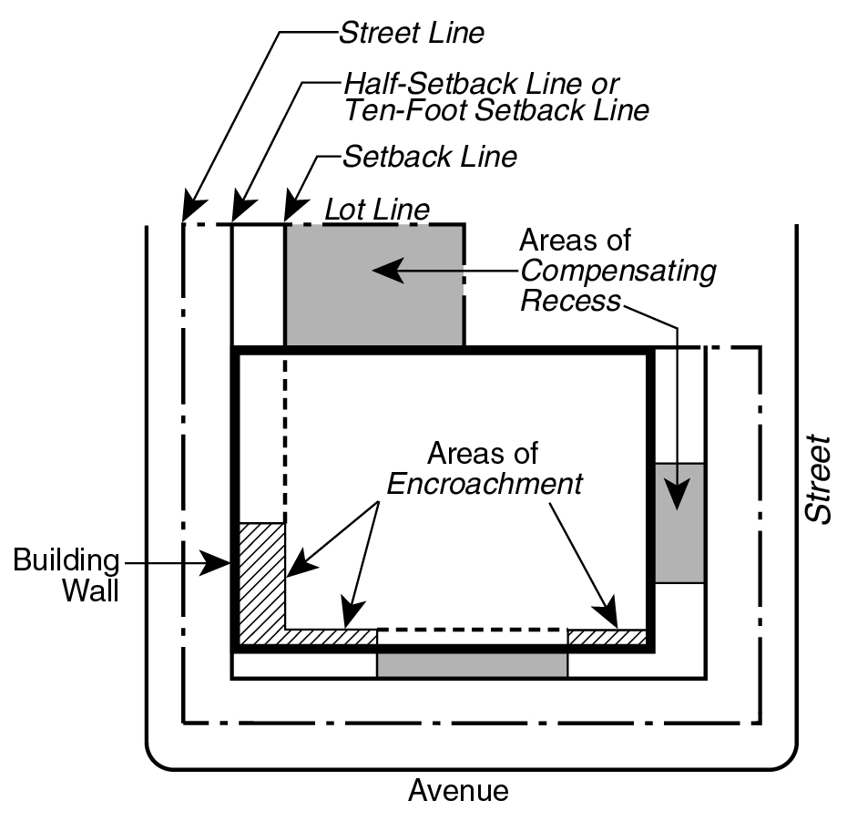
COMPENSATING RECESS AND ENCROACHMENT
(81-261.1)
Encroachment
A projection beyond the setback line, the free zone or the half-setback line by any portion of a building that exceeds the maximum height permitted at the street line. (See illustration of Compensating Recess and Encroachment)
Encroachment grid
A plan drawing of the zoning lot at any given height above curb level selected to determine compliance with the provisions of Section 81-26 and showing, for that height, street lines, setback lines, half-setback lines, Zone A (the free zone), Zone B and Zone C (encroachment zones) and, where applicable, the ten-foot setback line. The encroachment grid serves as a device for measuring areas of encroachment beyond the free zone and areas of compensating recess within the free zone. (See illustration of Encroachment Grid)
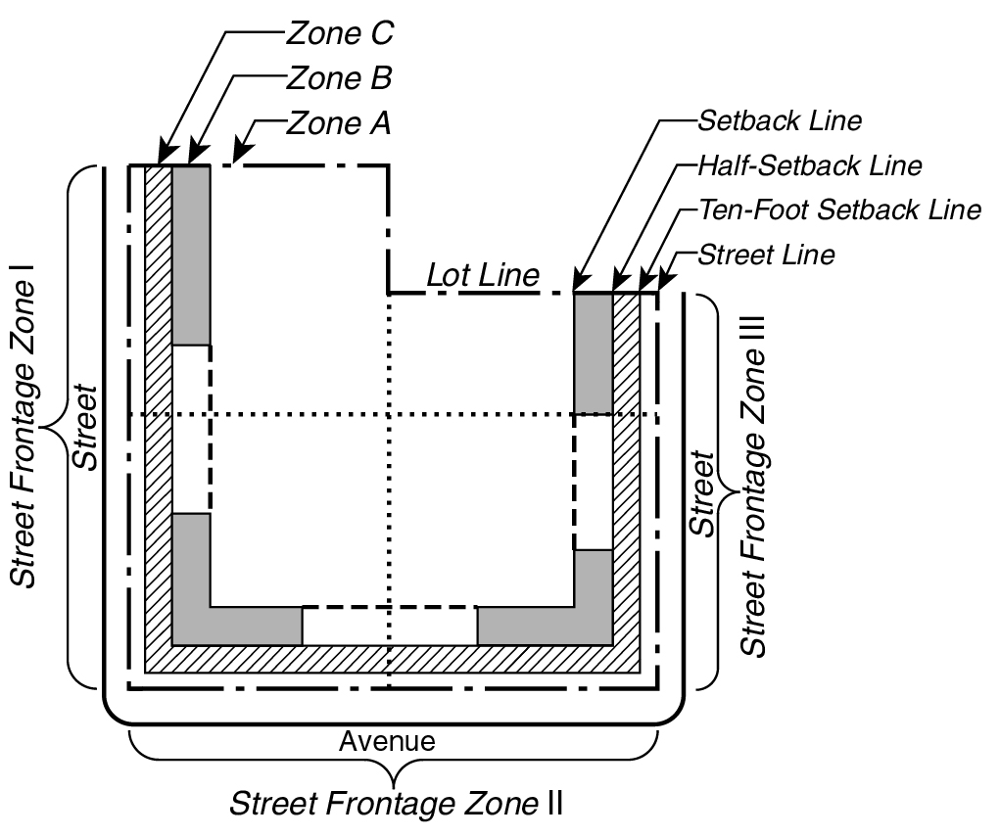
ENCROACHMENT GRID
(81-261.2)
Free zone
That portion of a zoning lot, at any given height, which may be covered by a building without coverage constituting an encroachment that requires daylight compensation.
In addition to the area that lies behind a setback line or setback lines, the free zone shall include areas between the setback line and either the half-setback line or the ten-foot setback line, whichever is further from the street line, and which qualify as free zone areas under the middle one-third rule. The free zone is referred to as Zone A on the encroachment grid.
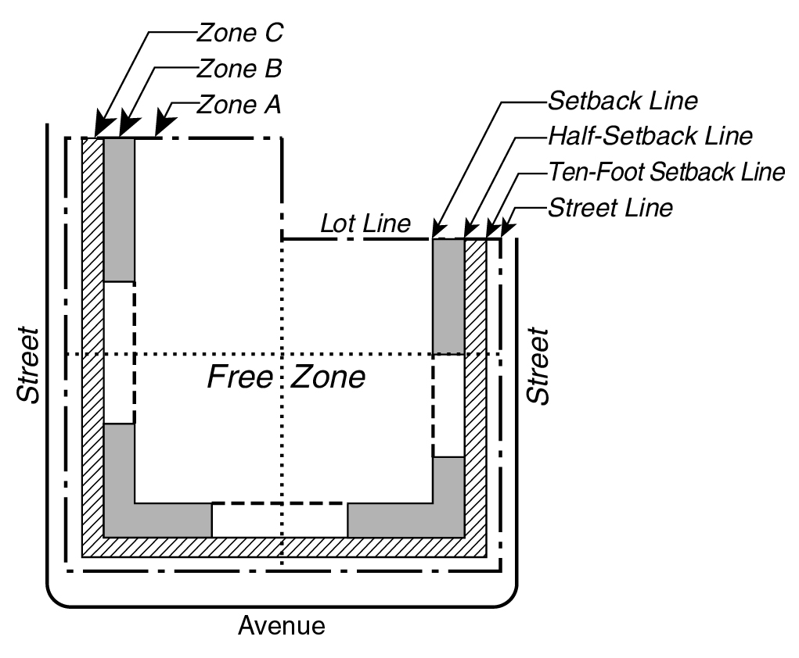
FREE ZONE
(81-261.3)
Half-setback line
A line drawn parallel to a street line and halfway between the street line and the setback line. (See illustration of Setback Line and Half-Setback Line)
Middle one-third rule
The rule under which, for the middle one-third of the front lot line length, the free zone includes area between the setback line and either the half-setback line or the ten-foot setback line, whichever is further from the street line. However, on a corner lot the free zone does not extend beyond the setback line along an intersecting street. (See illustrations of Middle One-Third Rule)
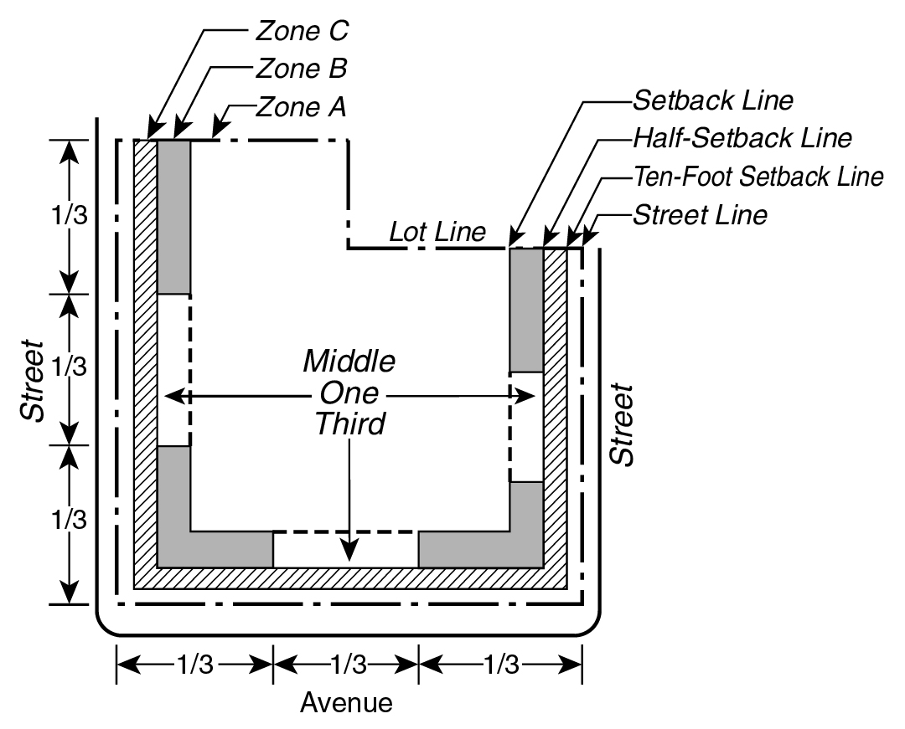
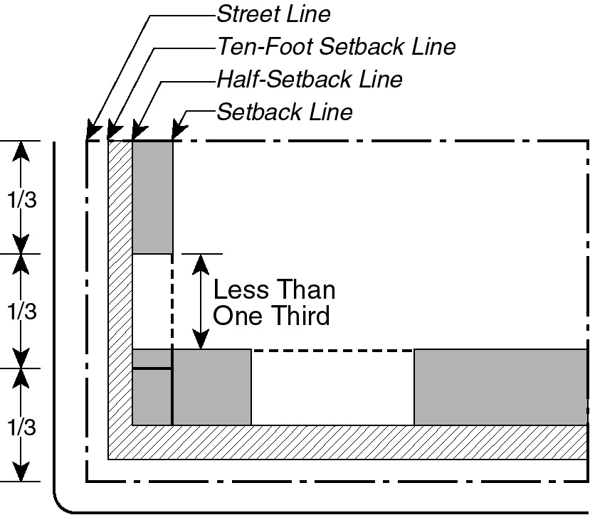
MIDDLE ONE-THIRD RULE
(81-261.4)
Setback line
A line drawn in plan parallel to a street line and showing for a given building height the minimum depth to which a building is required to be set back from the street line by the applicable depth to height chart in Section 81-263 (Standard setback requirements). Required setbacks, established by the chart, increase with the building's height. (See illustration of Setback Line and Half-Setback Line)
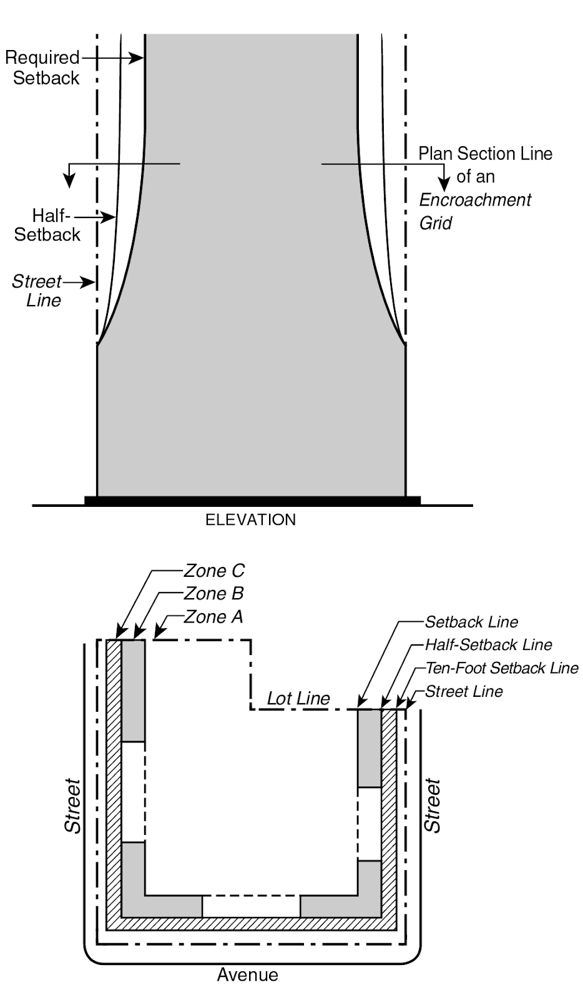
SETBACK LINE AND HALF-SETBACK LINE
(81-261.5)
Street frontage zone
A portion of a zoning lot which lies within an area bounded by a continuous front lot line and either the center line of the block or a line 100 feet distant from and parallel to that front lot line, whichever is closer to that front lot line. There shall be a street frontage zone for each zoning lot street frontage. (See illustration of Street Frontage Zones)
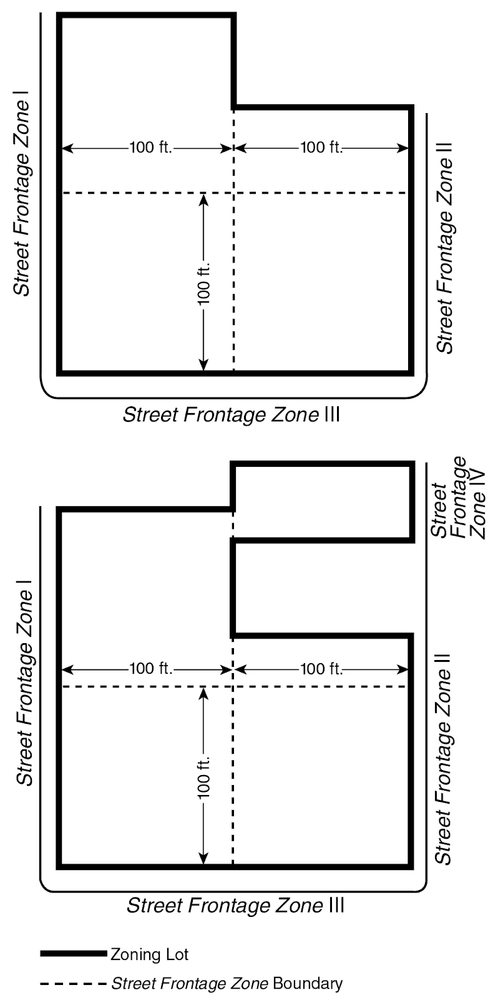
STREET FRONTAGE ZONES
(81-261.6)
Ten-foot setback line
A line which is parallel to the street line at a depth of 10 feet and represents the minimum distance any portion of a building exceeding the maximum height at the street line is required to be set back from the street line. A greater setback distance may be required by a setback line or a half-setback line depending upon the building height for which such setback line or half-setback line is established.
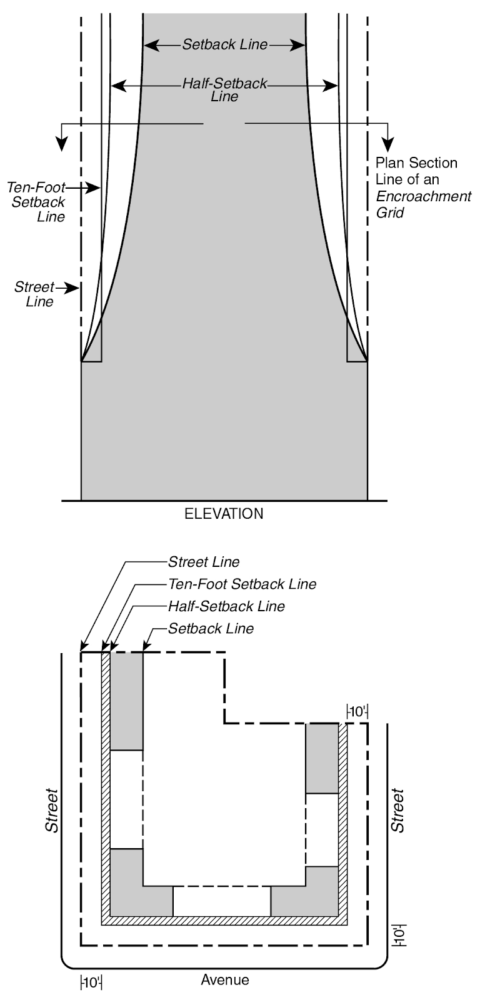
TEN-FOOT SETBACK LINE ON AN ENCROACHMENT GRID
(81-261.7)
Zone A, Zone B, Zone C
"Zone A," "Zone B" and "Zone C" are zones on an encroachment grid defined as follows:
(a) Zone A is the free zone.
(b) Zone B, an encroachment zone, is the zone, exclusive of any area in Zone A and any area closer to the street line than the ten-foot setback line, which lies between the setback line and either the half-setback line or the ten-foot setback line, whichever is further from the street line.
(c) Zone C, an encroachment zone and penalty zone, is the zone, exclusive of any area closer to the street line than the ten-foot setback line, which lies between the half-setback line and the ten-foot setback line.
Official NYC Planning source
81-262 Maximum height of front wall at the street line
Last amended 1982-05-13
(a) General provisions
The front wall of a building at the street line shall not exceed the height limit applying along the street on which it fronts. Maximum front wall heights at the street line vary with the width of the street on which the wall fronts, as follows:
Street Width (in feet) |
Maximum Front Wall Height at Street Line (in feet) |
60 or less |
90 |
75 or 80 |
120 |
100 or more |
150 |
(b) Special provisions for corner lots
For a corner lot with frontage on streets of different widths, the maximum front wall height at the street line of the narrower street may be increased above that indicated in paragraph (a) in accordance with either one of the following rules:
Rule 1:
The maximum front wall height at the street line for the wider street may extend up to 100 feet from the corner along the street line of the narrower street; or
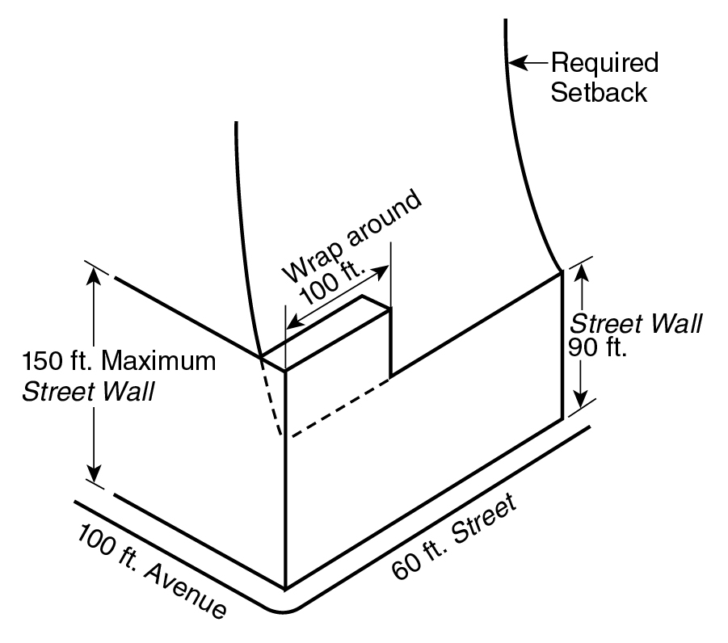
SPECIAL RULE 1 FOR CORNER LOTS
(81-262b.1)
Rule 2:
For any length of frontage from the corner along the narrower street, a maximum height for such length of frontage may apply, which shall be the weighted average of (1) the height permitted under Rule 1 for the first 100 feet from the corner, and (2) the standard height limit for front walls on the narrower street for the remainder of the frontage. (See illustration of Special Rules for Corner Lots)
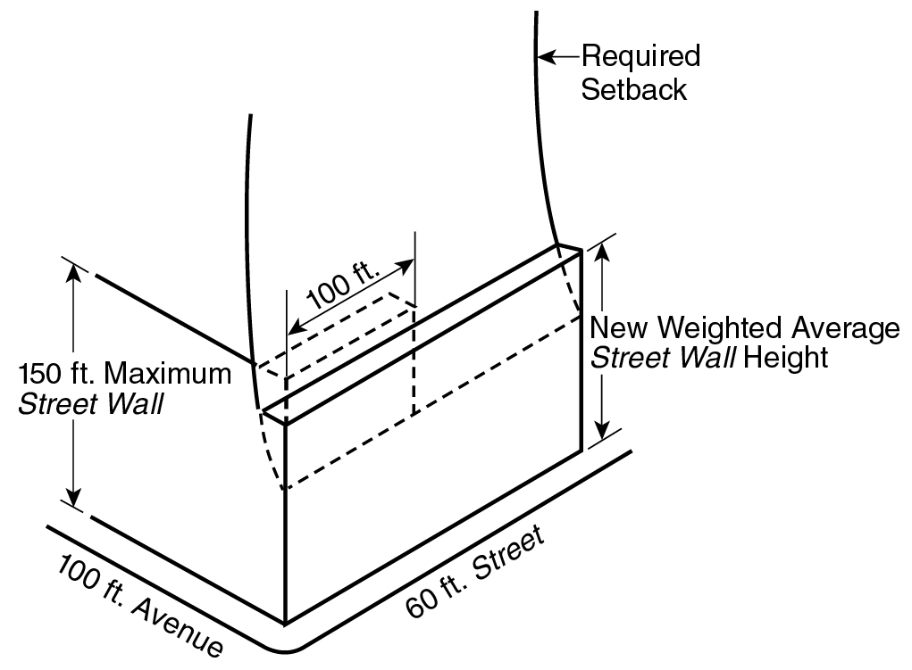
SPECIAL RULE 2 FOR CORNER LOTS
(81-262b.2)
Official NYC Planning source
81-263 Standard setback requirements
Last amended 2011-02-02
Buildings shall comply with the regulations of this Section.
(a) Ten-foot setback requirement
Above the maximum height permitted at the street line pursuant to the provisions of Section 81-262, every portion of a building shall be set back at least 10 feet from the street line.
(b) General setback provisions; depth to height charts
Above the maximum height permitted at the street line, buildings, in addition to meeting the requirements of paragraph (a) of this Section, are required to be set back behind the applicable setback line, the depth of the setback line at any point depending upon the height of the wall at that point in accordance with the requirements of applicable Tables A, B or C of this Section presenting required setbacks from streets 60 feet or less, 75 or 80 feet, or 100 or more feet in width, respectively.
Table A
SETBACK REQUIREMENTS
ON STREETS 60 FEET OR LESS IN WIDTH
Depth of Setback Line from Street Line at
Stated Heights above Curb Level.
Height |
Depth of Setback Line |
90 |
0.00 |
100 |
2.00 |
110 |
4.00 |
120 |
6.00 |
130 |
8.00 |
140 |
10.00 |
150 |
12.00 |
160 |
13.75 |
170 |
15.25 |
180 |
16.75 |
190 |
18.50 |
200 |
20.00 |
210 |
21.25 |
220 |
22.50 |
230 |
24.00 |
240 |
25.25 |
250 |
26.50 |
260 |
27.50 |
270 |
28.75 |
280 |
30.00 |
290 |
30.75 |
300 |
31.75 |
310 |
32.75 |
320 |
33.75 |
330 |
34.75 |
340 |
35.50 |
350 |
36.25 |
360 |
37.25 |
370 |
38.00 |
380 |
38.75 |
390 |
39.50 |
400 |
40.25 |
410 |
41.00 |
420 |
41.75 |
430 |
42.25 |
440 |
43.00 |
450 |
43.50 |
460 |
44.25 |
470 |
44.75 |
480 |
45.50 |
490 |
46.00 |
500 |
46.50 |
510 |
47.00 |
520 |
47.50 |
530 |
48.00 |
540 |
48.50 |
550 |
49.00 |
560 |
49.50 |
570 |
50.00 |
580 |
50.50 |
590 |
51.00 |
600 |
51.50 |
610 |
52.00 |
620 |
52.25 |
630 |
52.75 |
640 |
53.00 |
650 |
53.50 |
660 |
53.75 |
670 |
54.25 |
680 |
54.50 |
690 |
55.00 |
700 |
55.25 |
710 |
55.75 |
Above 710 |
For every 10 feet the depth shall increase by one foot |
Table B
SETBACK REQUIREMENTS
ON STREETS 75 OR 80 FEET WIDE
Depth of Setback Line from Street Line at
Stated Heights above Curb Level.
Height |
Depth of Setback Line |
120 |
0.00 |
130 |
1.50 |
140 |
3.50 |
150 |
5.50 |
160 |
7.50 |
170 |
9.25 |
180 |
11.00 |
190 |
12.75 |
200 |
14.25 |
210 |
15.75 |
220 |
17.25 |
230 |
18.75 |
240 |
20.00 |
250 |
21.25 |
260 |
22.50 |
270 |
23.75 |
280 |
24.75 |
290 |
26.00 |
300 |
27.00 |
310 |
28.00 |
320 |
29.00 |
330 |
30.00 |
340 |
31.00 |
350 |
32.00 |
360 |
32.75 |
370 |
33.75 |
380 |
34.50 |
390 |
35.50 |
400 |
36.25 |
410 |
37.00 |
420 |
37.75 |
430 |
38.25 |
440 |
39.00 |
450 |
39.75 |
460 |
40.50 |
470 |
41.00 |
480 |
41.75 |
490 |
42.50 |
500 |
43.00 |
510 |
43.50 |
520 |
44.00 |
530 |
44.75 |
540 |
45.25 |
550 |
45.75 |
560 |
46.25 |
570 |
46.75 |
580 |
47.25 |
590 |
47.75 |
600 |
48.25 |
610 |
48.75 |
620 |
49.00 |
630 |
49.50 |
640 |
50.00 |
650 |
50.50 |
660 |
50.75 |
670 |
51.25 |
680 |
51.75 |
690 |
52.00 |
700 |
52.50 |
710 |
53.00 |
Above 710 |
For every 10 feet the depth shall increase by one foot |
Table C
SETBACK REQUIREMENTS
ON STREETS AT LEAST 100 FEET WIDE
Depth of Setback Line from Street Line at
Stated Heights above Curb Level.
Height |
Depth of Setback Line |
150 |
0.00 |
160 |
1.50 |
170 |
3.00 |
180 |
5.00 |
190 |
6.75 |
200 |
8.50 |
210 |
10.25 |
220 |
11.75 |
230 |
13.25 |
240 |
14.75 |
250 |
16.00 |
260 |
17.25 |
270 |
18.75 |
280 |
20.00 |
290 |
21.00 |
300 |
22.25 |
310 |
23.50 |
320 |
24.50 |
330 |
25.50 |
340 |
26.50 |
350 |
27.50 |
360 |
28.50 |
370 |
29.50 |
380 |
30.25 |
390 |
31.25 |
400 |
32.00 |
410 |
33.00 |
420 |
33.75 |
430 |
34.50 |
440 |
35.25 |
450 |
36.00 |
460 |
36.75 |
470 |
37.25 |
480 |
38.00 |
490 |
38.75 |
500 |
39.25 |
510 |
40.00 |
520 |
40.50 |
530 |
41.25 |
540 |
41.75 |
550 |
42.25 |
560 |
42.75 |
570 |
43.50 |
580 |
44.00 |
590 |
44.50 |
600 |
45.00 |
610 |
45.50 |
620 |
46.00 |
630 |
46.50 |
640 |
47.00 |
650 |
47.50 |
660 |
47.75 |
670 |
48.25 |
680 |
48.75 |
690 |
49.25 |
700 |
49.50 |
710 |
50.00 |
Above 710 |
For every 10 feet the depth shall increase by one foot |
(c) Use of tables
To comply with the setback requirements of this Section, a building at any height shall be set back at least to the depth of the setback line indicated on the applicable table.
For heights between those shown on the table, the depth of the setback line shall be interpolated.
Required depths of setback lines shall be rounded off to the next highest half foot.
The setback requirements apply only to portions of buildings above the maximum height permitted at the street line, so that required setbacks on the narrower street frontage of a corner lot shall apply only to heights above the maximum front wall heights permitted by the corner lot provisions of paragraph (b) of Section 81-262 (Maximum height of front wall at the street line).
(d) Middle one-third rule
A building may penetrate beyond the setback line at any height if the penetration is confined to the middle third of the front lot line length and complies in all respects with the middle one-third rule as defined in Section 81-261 (Definitions).
Official NYC Planning source
81-264 Encroachments and compensating recesses
Last amended 2011-02-02
In addition to complying with the setback requirements of Section 81-263 (Standard setback requirements), a building shall not at any height encroach beyond a half-setback line or a ten-foot setback line, except as provided below. For each street frontage zone and for all street frontage zones, taken together on a single encroachment grid, a building shall not, at any level, have an aggregate area of encroachment beyond the setback line, other than in any free zones, greater than the aggregate area of compensating recess at such level.
Except as provided below, an area of compensating recess in one street frontage zone shall not be used to compensate for encroachment in another street frontage zone. However, a building with a street frontage zone which lies along a north-south wide street and does not meet the above requirements because of excessive encroachment will be in compliance with the street frontage zone requirements of this Section if compensation is provided for such excessive encroachment by an overlapping street frontage zone.
The requirement that the aggregate area of compensating recess at least equal the aggregate area of encroachment, as set forth in this Section, shall also apply to any building which encroaches beyond a half-setback line and which is therefore subject to the provisions of Section 81-265 (Encroachment limitations by length and height rules). (See illustration of Encroachments and Compensating Recesses)
(a) Rules for measuring encroachments and recesses
Areas of encroachment and compensating recess shall be measured in plan on one or more encroachment grids showing for the zoning lot, at a given height level, the street lines, the setback lines, the half-setback lines, the ten-foot setback lines, Zone A, Zone B and Zone C and the street frontage zones.
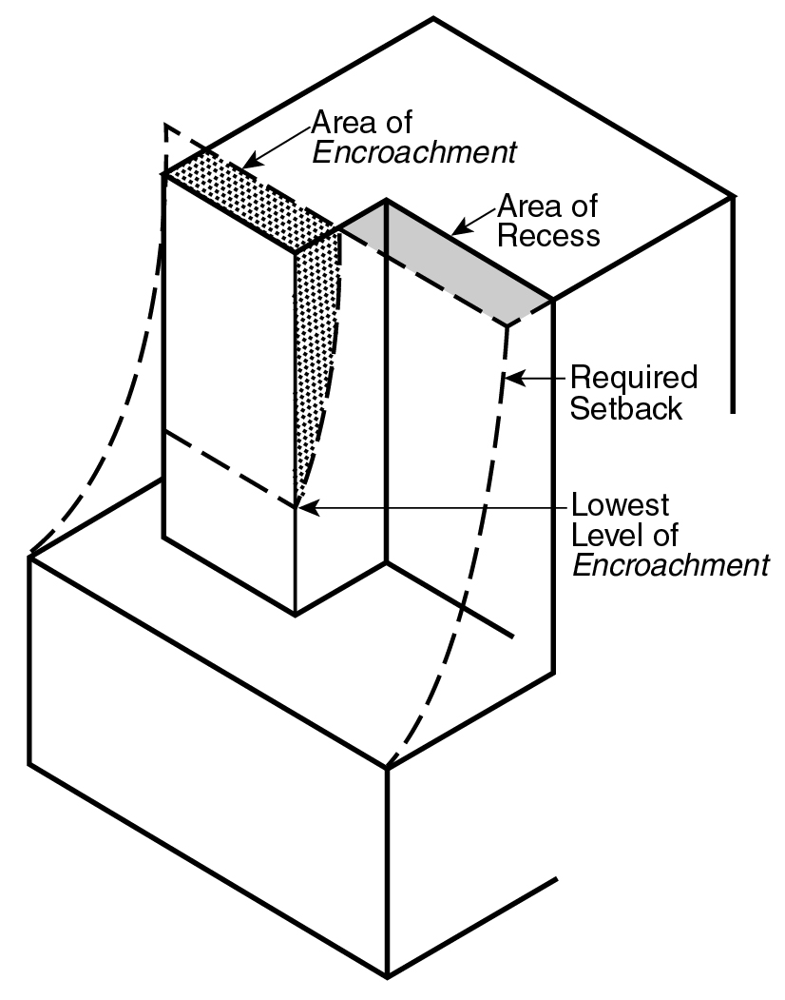
ENCROACHMENTS AND COMPENSATING RECESSES
(81-264a)
The scale of the encroachment grid shall be not more than 20 feet to the inch. All buildings, existing and proposed, shall be located accurately on the grid in plan at the height level selected to demonstrate compliance. For each street frontage zone, the areas of the building’s encroachment in Zone B and Zone C and the compensating recess areas not covered by any building in Zone A shall be measured on the encroachment grid.
(b) Limits of encroachment
Except as provided in paragraph (d) of this Section for existing buildings below specified heights, encroachment is limited as follows:
(1) For each street frontage zone, at every height above the maximum front wall height at the street line, the area within Zone A that is not covered by a building and qualifies as compensating recess area shall, in the aggregate, equal or exceed the aggregate area in Zone B and Zone C that is encroached upon by a building at such height.
(2) No part of a building shall encroach into Zone C unless it complies with the provisions of Section 81-265.
(3) On corner lots, the projection of a building beyond the setback line or half-setback line on the narrower street shall not count as an encroachment except at heights above the maximum height permitted at the street line by the corner lot provisions in paragraph (b) of Section 81-262 (Maximum height of front wall at the street line).
(c) Limitations on compensating recess
Compensating recess areas are subject to the following limitations:
(1) Any required compensating recess area shall extend without diminution of dimensions downward at least to the lowest level at which any encroachment into Zone B or Zone C occurs and upward to the sky. (See illustration of Extension Downward of Compensating Recess Area)
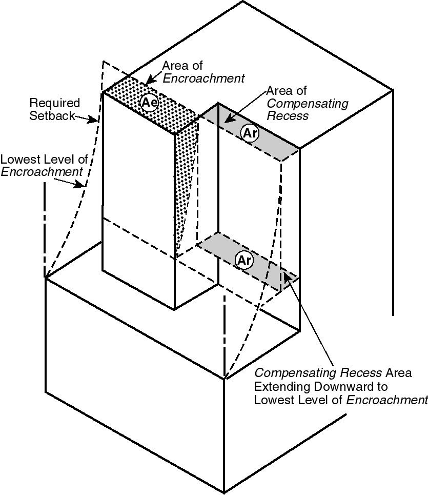
EXTENSION DOWNWARD OF COMPENSATING RECESS AREA
(81-264c1)
(2) Compensating recess area shall be visible when viewed from at least one adjacent street along a line that intersects the front lot line of the zoning lot at right angles. (See illustration of Visibility of Compensating Recess Area)
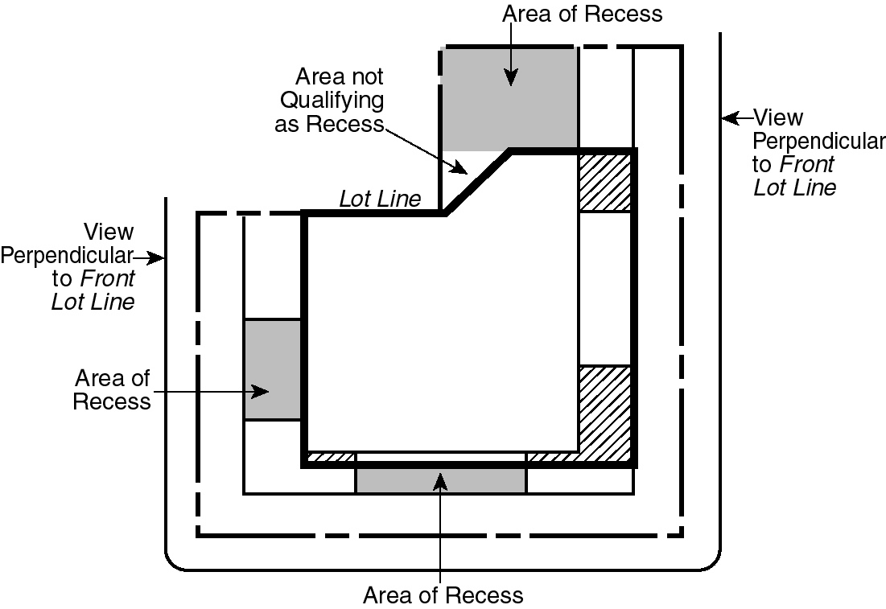
VISIBILITY OF COMPENSATING RECESS AREA
(81-264c2)
(3) The minimum length of a compensating recess, measured parallel to the street line, and behind the setback line, is 30 feet, except for any uncovered portion of an area that qualifies as Zone A under the middle one-third rule or an uncovered area located behind two intersecting setback lines. An uncovered area between the setback line and half-setback line that qualifies as Zone A under the middle one-third rule is not subject to the minimum length requirement. (See illustration of Minimum Length of Compensating Recess)
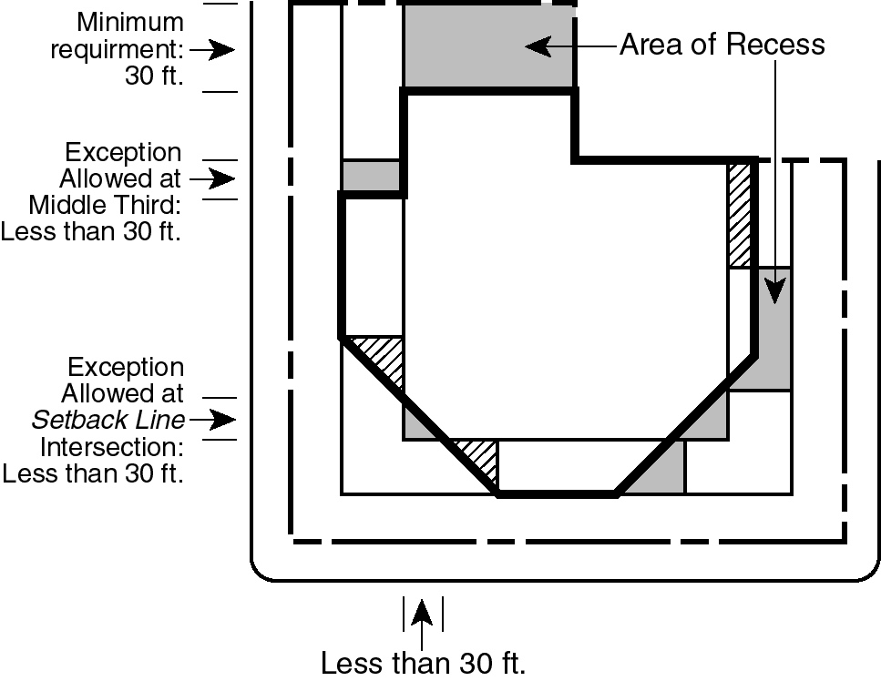
MINIMUM LENGTH OF COMPENSATING RECESS
(81-264c3)
(4) Compensating recess area shall be within 100 feet of a front lot line.
(d) Existing buildings on the zoning lot
Where a zoning lot contains an existing building which exceeds a height limit, an enlargement or development on such zoning lot shall comply with the following provisions:
(1) For each street frontage zone, if the existing building is not more than 120 feet in height at any point and encroaches into Zone B or Zone C or beyond the ten-foot setback line along the frontage of a street 60 feet wide, or if the existing building is not more than 150 feet in height at any point and encroaches into Zone B or Zone C or beyond the ten-foot setback line along the frontage of a street 75 or more feet in width, the new building or enlargement is not required to compensate for such encroachment by the provision of compensating recess areas. Encroachment by such an existing building into Zone C or beyond the ten-foot setback line will not subject the new building or enlargement to the provisions of Section 81-265 unless the new building or enlargement also encroaches into Zone C.
(2) For each street frontage zone, space above such existing building and within Zone A on the encroachment grid may count as compensating recess area for the new building or enlargement provided that such space is at or below the lowest level of any compensable encroachment by the new building or enlargement, that it is located within the same street frontage zone as that compensable encroachment, and that it qualifies in all respects under the provisions of paragraph (c) of this Section (Limitations on compensating recess).
(3) For each street frontage zone, if an existing building more than 120 feet in height at any point encroaches into Zone B or Zone C or beyond the ten-foot setback line along the frontage of a street 60 feet wide, or if an existing building more than 150 feet in height at any point encroaches into Zone B or Zone C or beyond the ten-foot setback line along the frontage of a street 75 or more feet in width, the encroachment of such building into Zone B or Zone C or beyond the ten-foot setback line at any height shall be subject to the requirements for compensating recess areas set forth in paragraph (b)(1) of this Section, as if it were a new building. Where such an existing building encroaches into Zone C or beyond the ten-foot setback line, the provisions of paragraph (f)(2) in Section 81-265 shall apply in addition to the provisions of this Section. (See illustration of Existing Buildings on the Zoning Lot)
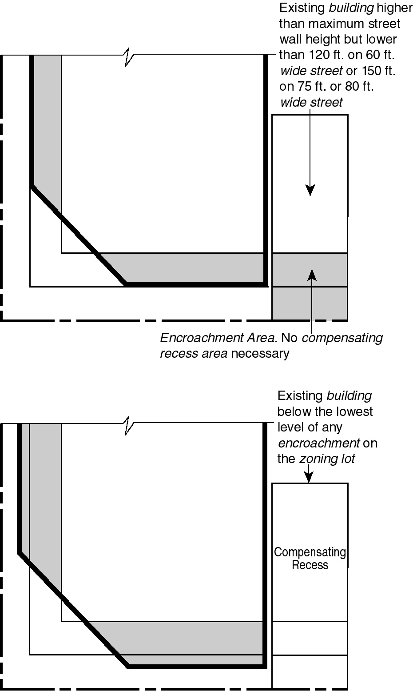
EXISTING BUILDINGS ON THE ZONING LOT
(81-264d3)
Official NYC Planning source
81-265 Encroachment limitations by length and height rules
Last amended 1988-04-28
Above the maximum height of a front wall at the street line as set forth in Section 81-262, a building may only encroach beyond the half-setback line if it complies with the provisions of this Section and if the area of compensating recess equals or exceeds the area of encroachment in Zone B and Zone C in accordance with the provisions of Section 81-264 (Encroachments and compensating recesses).
(a) Special limitations
No encroachment beyond the half-setback line shall be within 30 feet of a side lot line. (See illustration of Prohibited and Allowed Encroachment Beyond Half-Setback Line)
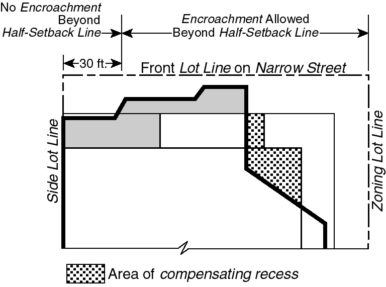
PROHIBITED AND ALLOWED ENCROACHMENT BEYOND
HALF-SETBACK LINE
(81-265a)
(b) General provisions
The length, depth, height and area of encroachments along any street frontage all contribute to a building's impact on daylight access. In order to determine whether the depth of a building's encroachment into Zone C is justified, the length of the encroachment, measured parallel to the street line, and its height above curb level must also be evaluated. The extent of encroachment also must be considered in relation to the extent of the area of compensating recess in the same street frontage zone. The purpose of the length and height rule is to ensure, in the case of encroachments beyond the half-setback line, that the closer a building comes to the street line, the less will be the length of its encroachment, its height or both. (See illustration of Elements Analyzed)
The elements comprising this analysis are represented by symbols and are as follows:
(1)
De | = | depth of encroachment |
D | depth of setback line |
De (depth of encroachment) means depth of encroachment beyond the setback line. Depth of encroachment is measured perpendicularly to the setback line.
D (depth of setback line) means depth of setback line from the street line or depth of ten-foot setback line from the street line, whichever depth is greater.
(2)
Le | = | length of encroachment |
L | length of front lot line |
Le (length of encroachment) means total length of encroachment outside the half-setback line. Length of encroachment is measured as the total length of the encroachments' projections on the street line.
L (length of front lot line) means the length of the front lot line along the particular street. However, the length of the front lot line for the purposes of this Section shall not exceed 300 feet, irrespective of the actual lot line length.
(3)
Le | = | length of encroachment |
Lr | length of recess |
Le (length of encroachment) as defined in paragraph (b)(2) of this Section.
Lr (length of recess) means total length of setback line not encroached upon by a building.
(4)
H | = | height of encroachment |
L | length of front lot line |
H (height of encroachment) means the height of the encroachment above curb level.
L (length of front lot line) as defined in paragraph (2) of this Section.
(5)
Ar | = | area of compensating recess |
Ae | area of encroachment |
Ar (area of compensating recess) means area of compensating recess in the particular street frontage zone. Area of compensating recess is calculated to a depth of 100 feet from the street line.
Ae (area of encroachment) means area of encroachment beyond the setback line. Area of encroachment is calculated to a depth of 100 feet from the street line.
Values for the elements in paragraphs (b)(1) through (b)(5) shall be found for each street frontage zone on which there is any encroachment beyond the half-setback line.
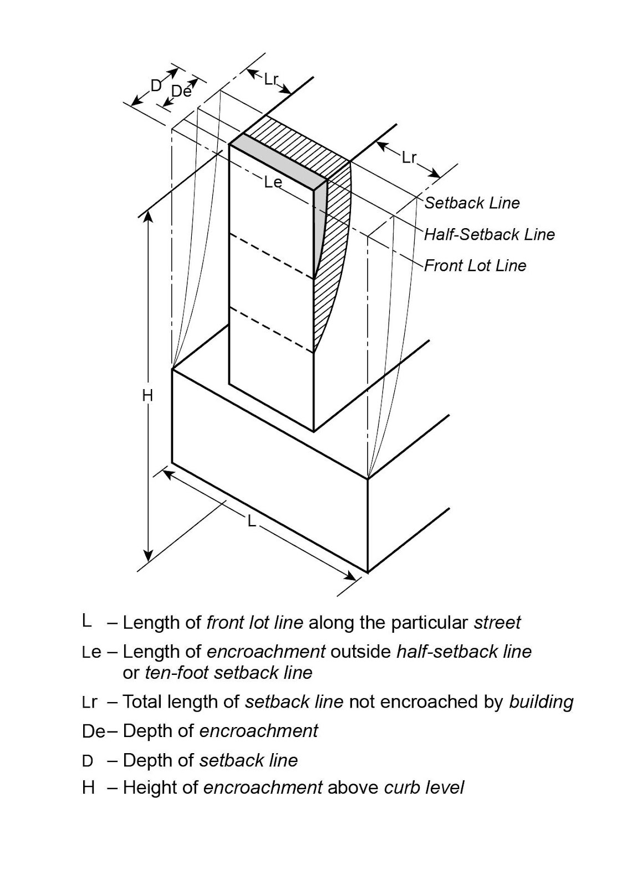
ELEMENTS ANALYZED
(81-265b)
The elements, weighted according to the effects on daylight access, are represented in the formulas and charts that control the depth, length and height of encroachments, as set forth in paragraph (c) of this Section.
Encroachments of proposed buildings or enlargements beyond the half-setback line are permitted only if in compliance at every point with the formulas in paragraph (c) of this Section. Aside from this general requirement, specified points at which the length, depth, height and area rules shall be applied are presented in paragraphs (d) and (e) of this Section.
(c) Encroachment limitations by Formulas 1 and 2
Where applicants elect to have their buildings regulated by the formulas, buildings shall comply with both Formula 1 and Formula 2 as set forth in this paragraph. Elements of the formulas and the symbols by which they are represented are as set forth in paragraph (b) of this Section.
Formula 1:
| Maximum | H | = | 5.5—4 | ( | De | ) | —2.5 | ( | Le | ) |
L | D | L |
The maximum height of encroachment (H) allowed by Formula 1 may be modified for certain conditions, as follows:
(1) For short frontages
For any frontage less than 200 feet in length, the maximum
found by applying Formula 1 may be increased by the following multiplier:
(2) For large areas of compensating recess
To the extent that the aggregate area of compensating recess (Ar) exceeds the aggregate area of encroachment (Ae), the maximum
found by applying Formula 1 may be increased by the following multiplier:
For the purposes of this modification, the measurement of the area of compensating recess (Ar) and the area of encroachment (Ae) in each particular street frontage zone shall be made on the encroachment grid at the height level for which encroachments beyond the half-setback line are checked. The encroachment grid shall include all street frontage zones. (Ar) shall include all areas of compensating recess in the particular street frontage zone, whether or not connected, and (Ae) shall include all encroachments in both Zone B and Zone C in the same street frontage zone, whether or not such encroachments are connected.
(d) Measurement of encroachments
The points at which the formulas are applied will depend upon the shape and dimensions of the encroachments beyond the half-setback line and shall be in accordance with the provisions of this paragraph and paragraph (e) of this Section.
Where the encroachments along a single street frontage are not connected outside the half-setback line, each encroachment shall be measured separately in accordance with the provisions of paragraph (e). However, at any given height, where such non-contiguous encroachments occur, the encroachments shall be examined together, and the length of encroachment (Le) shall be the total of the (Le) for the individual encroachments. (See illustration of Non-contiguous Encroachments)
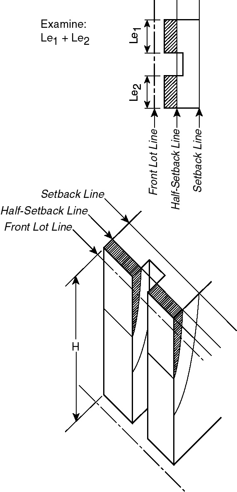
NON-CONTIGUOUS ENCROACHMENTS
(81-265d)
(e) Heights and depths at which formulas are applied
Heights and depths at which the formulas shall be applied are set forth in this paragraph. In addition to meeting the requirements of paragraphs (e)(1) and (e)(2) of this Section, the applicant shall demonstrate that there is no height at which the proposed building or enlargement fails to comply with the formulas in paragraph (c) of this Section.
(1) Standard requirement where length of encroachment is uniform
Where the length of the encroachment (Le) is uniform for the entire height of the encroachment (H) and the entire depth (De) at every height, the length, depth and height rules expressed in the formulas shall be applied only at the height where (De/D) is greatest and at the outermost edge of the encroachment. (See illustration of Uniform Length of Encroachment)
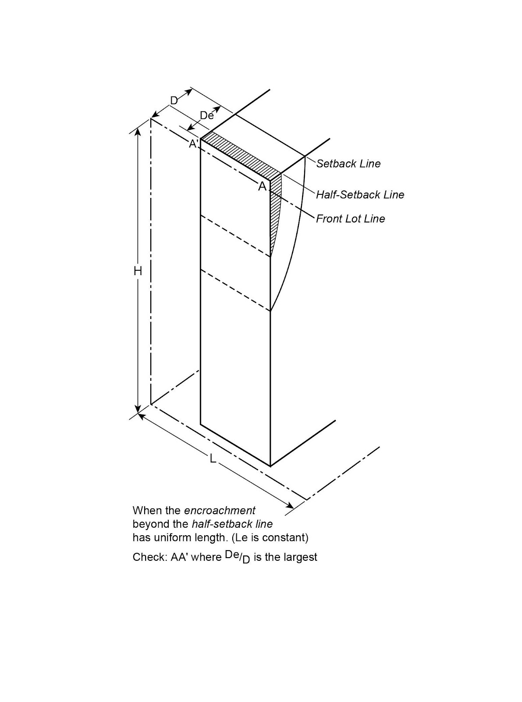
UNIFORM LENGTH OF ENCROACHMENT
(81-265e1)
(2) Standard requirement where length of encroachment is not uniform
Where the length of the encroachment (Le) is not uniform, the rules shall be applied at the height level where (De/D) is greatest and also at the height level where the length of encroachment (Le) is greatest. If the greatest length of encroachment is uniform for part of the building's height, the rules shall be applied at the highest level at which such greatest length of encroachment occurs. (See illustrations Where Length of Encroachment Is Not Uniform).
If for a particular height level, the length of the encroachment (Le) varies with the depth of the encroachment (De), the largest (Le) of this encroachment shall be used together with the largest (De) in applying the rules as if the encroachment were of uniform length as provided in paragraph (e)(1) of this Section.
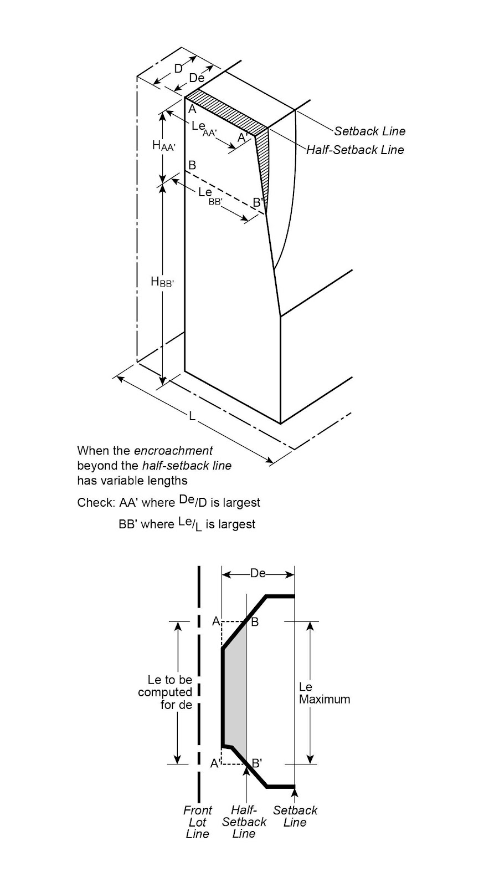
WHERE LENGTH OF ENCROACHMENT IS NOT UNIFORM
(81-265e2)
(f) Encroachments by existing buildings
When a zoning lot contains an existing building which encroaches beyond a half-setback line or a ten-foot setback line, an enlargement or development on such zoning lot shall comply with the following provisions:
(1) Existing buildings below specified heights
(i) Except as provided in paragraph (f)(1)(ii) of this Section, an existing building not more than 120 feet in height shall not be considered in applying the length and height rules even though a portion of such building encroaches beyond the half-setback line or ten-foot setback line along a 60 foot wide street and an existing building not more than 150 feet in height shall not be considered in applying the length and height rules even though a portion of such building encroaches beyond the half-setback line or ten-foot setback line along a street 75 or more feet in width.
(ii) However, the area occupied by the existing building shall be included in the calculation of (Ar/Ae) for the modification of Formula 1 allowed in the case of large areas of compensating recess, as set forth in paragraph (c)(2) of this Section.
(2) Existing buildings above specified heights
Where an existing building more than 120 feet in height encroaches beyond the half-setback line or ten-foot setback line along a 60-foot wide street or where an existing building more than 150 feet in height encroaches beyond the half-setback line or ten-foot setback line along a street 75 or more feet in width, the following provisions, in addition to those of paragraph (d)(3) of Section 81-264 (Encroachments and compensating recesses), shall apply:
(i) no new construction on the zoning lot shall encroach beyond the half-setback line along any street, and
(ii) the length and height rules of this Section shall not apply.
Official NYC Planning source
81-266 Special permit for height and setback modifications
Last amended 2024-12-05
In C5-3, C6-6 or C6-7 Districts, where a special permit application is made pursuant to Section 74-71 (Landmark Preservation) for modification of bulk regulations on a zoning lot containing a landmark, such application may include a request for modification of the height and setback regulations set forth in Sections 81-261 to 81-265, inclusive, relating to Height and Setback Regulations - Daylight Compensation. The City Planning Commission may authorize such height and setback modifications subject to the following conditions:
(a) the applicant shall demonstrate to the satisfaction of the Commission that a feasible design for the proposed development or enlargement which accommodates the permitted floor area is not possible under the provisions of Sections 81-261 to 81-265, inclusive, and shall further indicate for the proposed design where and to what extent deficiencies of compensating recess are necessary or compliance with the length and height rules is not possible. Scale drawings shall be used in presenting the analyses required herein; and
(b) the Commission shall make the following findings in addition to any required under the applicable provisions of Section 74-71:
(1) that the requested departure from the height and setback regulations is the minimum amount necessary to achieve a feasible building design;
(2) that the disadvantages to the surrounding area resulting from reduced light and air access will be more than offset by the advantages of the landmark's preservation to the local community and the City as a whole; and
(3) that where the landmark is located on the zoning lot proposed for development or enlargement or on a lot contiguous thereto or directly across a street therefrom, the modification of height and setback regulations will adequately protect the setting for the landmark.
Official NYC Planning source
81-271 Definitions
Last amended 2017-08-09
Center line of the street (bounding a zoning lot)
A line equidistant from and parallel or nearly parallel to the street lines on both sides of the street. However, for the purposes of daylight evaluation:
(a) on a street 75 feet in width, the center line of the street shall be considered to be a line 40 feet from, and parallel to, the front lot line of the zoning lot; and
(b) on a street more than 100 feet in width, the center line of the street shall be considered to be a line 50 feet from, and parallel to, the front lot line of the zoning lot.
Daylight Evaluation Chart (DEC)
A graphic tool which permits objective measurements of portions of sky blocked by a building when it is viewed from a vantage point. There are three daylight evaluation charts for use with street widths of 60 feet, 75 to 80 feet and 100 feet and over, respectively. All buildings are drawn on the appropriate daylight evaluation chart to evaluate their compliance with the regulations of Section 81-27 (Alternate Height and Setback Regulations—Daylight Evaluation). These three daylight evaluation charts are in Appendix B of this Chapter. A fourth chart in Appendix B is available for use with qualifying sites in the East Midtown Subdistrict, as defined in Section 81-613, with frontage along Park Avenue.
Far lot line
A lot line intersecting the street line of the vantage street such that, when viewed from the vantage point, the zoning lot does not contain any lot area that is on the far side of and immediately adjoining the lot line at its intersection with the street line. (See illustration of Far Lot Line and Vantage Point)
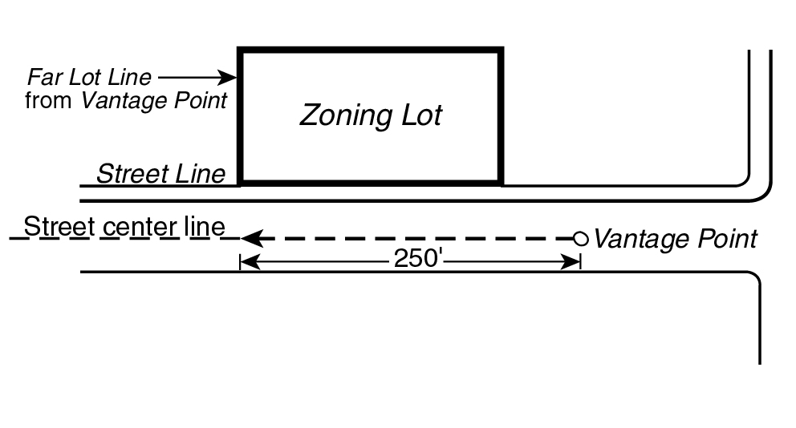
FAR LOT LINE AND VANTAGE POINT
(81-271.1)
Near lot line
A lot line, other than the far lot line, which intersects the street line of the vantage street and which defines the extent of the zoning lot's continuous frontage along the vantage street from the far lot line.
Profile curve
A curved line on the daylight evaluation chart rising from the intersection of the curved line representing an elevation angle of 72 degrees with the vertical line at the far lot line. The profile curve is used to evaluate a building's obstruction of the sky as seen in profile from the vantage point.
Profile encroachment
The space on the daylight evaluation chart which, when viewed from the vantage point, is on the far side of the profile curve and which is blocked by the projection of the building on the daylight evaluation chart. (See illustration of Profile Encroachment)
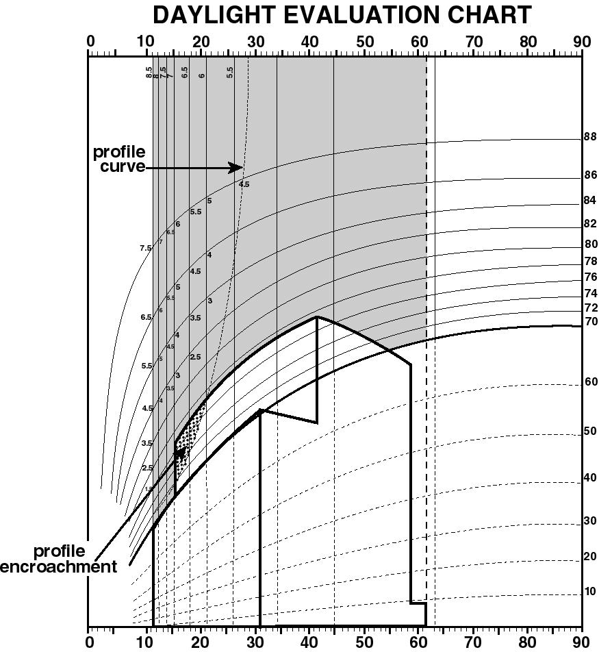
PROFILE ENCROACHMENT
(81-271.2)
Vantage point
A point on the center line of the street bounding the zoning lot and located 250 feet from the intersection of the extension of the zoning lot's far lot line with the center line of the street. (See illustration of Far Lot Line and Vantage Point)
Vantage street
A street bounding the zoning lot and on the center line of which a vantage point is located.
Official NYC Planning source
81-272 Features of the Daylight Evaluation Chart
Last amended 2011-02-02
The daylight evaluation chart (DEC) is a graphic representation of a pedestrian's field of view as he or she looks down a street and sweeps his or her view 90 degrees to the left or to the right.
Under special conditions, this view can be extended to 180 degrees horizontally as specified in Section 81-275 (Special conditions).
This pedestrian view is based on a vantage point located 250 feet from the intersection of the zoning lot's far lot line with the center line of the street.
There are three daylight evaluation charts for use with different Midtown street widths. They include a chart for 60-foot wide streets (for most east-west crosstown streets) as well as a chart for 75-foot or 80-foot wide streets and a chart for streets 100 feet or more in width (for avenues and major crosstown streets). All of these charts have the following features:
(a) Horizontal and vertical axes
The daylight evaluation chart has both a horizontal and vertical component, encompassing views sweeping both 90 degrees horizontally and 90 degrees vertically. (See illustration of Horizontal and Vertical Angles of View)
Under special conditions, this view can be extended to 180 degrees horizontally as specified in Section 81-275.
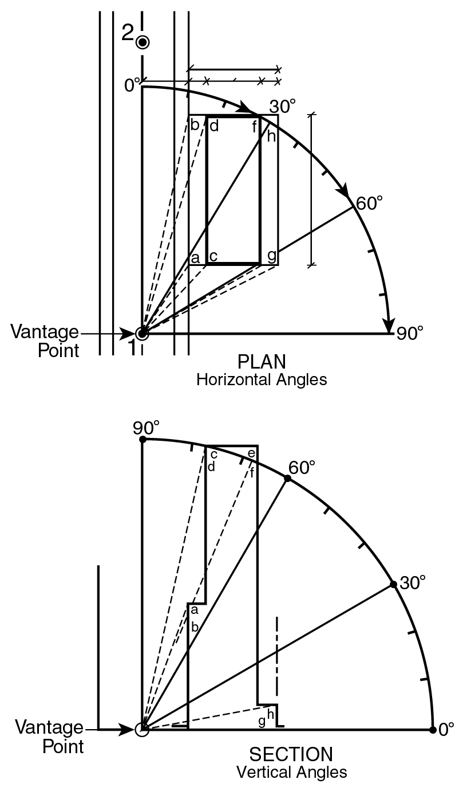
HORIZONTAL AND VERTICAL ANGLES OF VIEW
(81-272a.1)
The horizontal axis of the daylight evaluation chart is measured in degrees of arc from zero degrees to 90 degrees starting from the vantage point along the center line of the vantage street and sweeping toward the building.
The horizontal axis is intersected by vertical lines corresponding to lines of sight from the vantage point to points 25 feet apart on the front lot line along the vantage street measured from the intersection of the far lot line with the street line of the vantage street.
The vertical axis of the daylight evaluation chart is measured in degrees of arc from zero degrees to 90 degrees starting from the center line of the vantage street at curb level and sweeping upward.
The vertical axis is intersected by curved elevation lines representing elevation angles from the center line of the street at 10 degree intervals from zero degrees to 70 degrees and at two degree intervals from 70 degrees to 90 degrees. (See illustration of Horizontal and Vertical Axes)
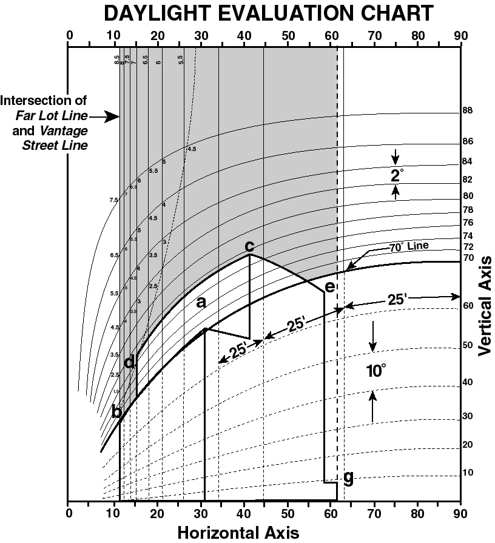
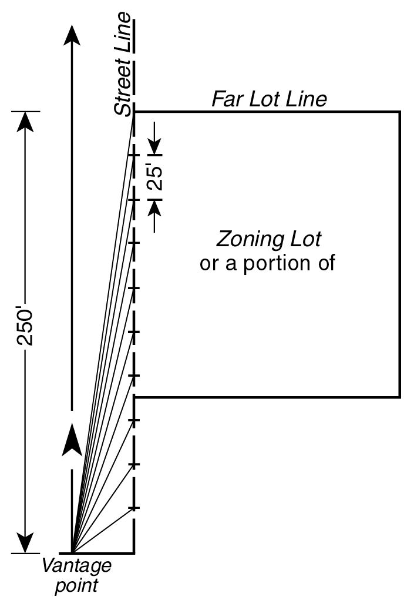
HORIZONTAL AND VERTICAL AXES
(81-272a.2)
(b) Daylight squares
The horizontal and vertical lines form a curvilinear grid dividing the daylight evaluation chart into areas called daylight squares. Above the 70 degree line, the grid is divided into 100 daylight squares starting from the vertical line rising from the intersection of the far lot line with the street line of the vantage street and ending at the vertical line representing 90 degrees along the horizontal axis. Each of these 100 squares represents 25 feet of lot frontage on the vantage street and two degrees of elevation angle from the center line of the vantage street.
Below 70 degrees, the grid is divided into 70 daylight squares starting from the vertical line rising from the intersection of the far lot line with the street line of the vantage street and ending at the vertical line rising at 90 degrees along the horizontal axis. Each of these 70 squares represents 25 feet of lot frontage on the vantage street and 10 degrees of elevation angle from the center line of the street. (See illustration of Daylight Squares)
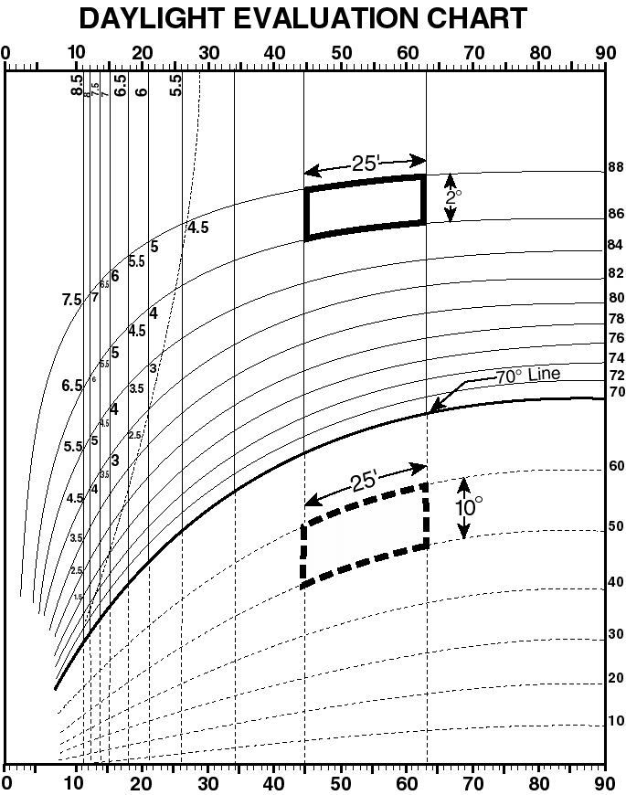
DAYLIGHT SQUARES
(81-272b)
(c) Daylight subsquares
For greater plotting and scoring precision, the horizontal axis of the grid is further subdivided by vertical lines at points five feet apart on the front lot line as seen from the vantage point. The vertical axis is further subdivided by curved lines representing lines of equal elevation at one degree intervals from 70 degrees to 90 degrees. Therefore, each daylight square is subdivided into 10 subsquares, each representing five feet of lot frontage on the vantage street and one degree of elevation angle from the center line of the vantage street. (See illustration of Daylight Squares and Subsquares Above 70 Degrees)
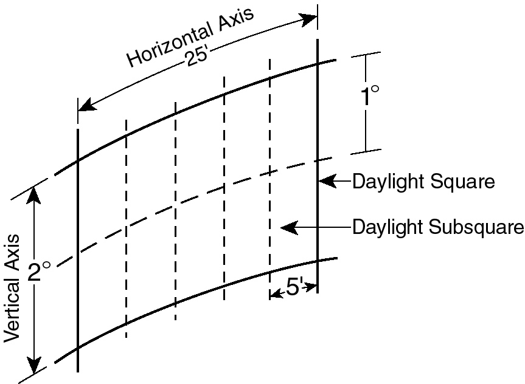
DAYLIGHT SQUARES AND SUBSQUARES ABOVE 70 DEGREES
(81-272c)
(d) The seventy degree line
Research shows that, as an average, 70 degrees is the elevation angle at which buildings in the Special Midtown District are set back from the street line. Most of the daylight below 70 degrees is blocked by such buildings. Slabs, towers or other setback portions of buildings rise to block an average of 25 percent of the available daylight squares above 70 degrees.
In building evaluation, the DEC measures the blocked sky above 70 degrees. Below 70 degrees, buildings are given credit for unblocked daylight.
(e) The profile curve
The grid is traversed by the profile curve, which rises from the intersection of the curved line representing an elevation angle of 72 degrees with the vertical line at the far lot line. The profile curve is derived from the predominant built character of developed Midtown streets as seen in profile. Encroachment across the profile curve is penalized to discourage canyon-like Midtown streets and to protect neighboring buildings.
Official NYC Planning source
81-273 Rules for plotting buildings on the daylight evaluation chart
Last amended 2011-02-02
Evaluation of a development or enlargement requires drawing the new buildings, remaining buildings and open areas on the zoning lot on the appropriate daylight evaluation chart (DEC), as viewed from each required vantage point and then scoring the zoning lot. The rules for plotting buildings on the DEC are set forth in the following paragraphs of this Section and illustrated by an example of a building which fronts on a 100-foot wide street and occupies a site 170 feet long by 100 feet deep.
(a) Draw the building
Draw the building in plan showing all street frontages of the zoning lot. Draw the building in section perpendicular to each street on which the zoning lot fronts. On both plan and section drawings label all corners of the building. In the example they are labeled corners (a) through (h). (See illustrations of Example: Building Drawings)
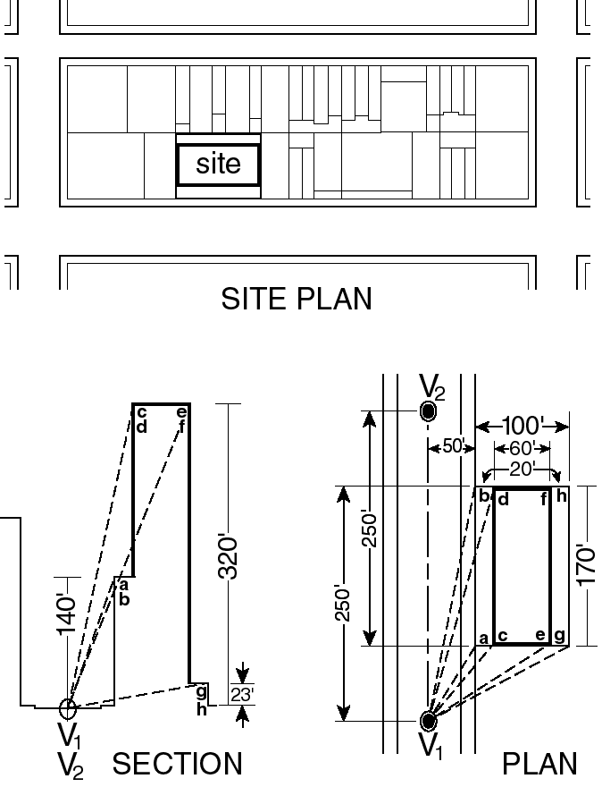
EXAMPLE: BUILDING DRAWINGS
(81-273a)
(b) Establish vantage points
Establish on the plan all the vantage points from which views must be taken. Vantage points shall be established on the center line of the vantage street 250 feet from the intersection of the zoning lot's far lot line and the center line of the street. For each vantage street there are at least two vantage points. In the example, they are V1 and V2. For each vantage point there shall be a separate daylight evaluation chart. The example will use vantage point one.
(c) Record plan and section dimensions
Record on a coordinate chart for each corner of the building the following dimensions:
(1) Dimensions in plan:
The distance (S) between the corner and the center line of the street as measured along a line that intersects the center line of the street at right angles. In the example, distance (S) of corner (b) + 50 feet.
The distance (D) measured along the center line of the street from the vantage point to the point where the street center line is intersected by the perpendicular line from the corner. In the example, distance (D) of corner (b) + 250 feet.
(2) Dimension in section:
The height (H) of the corner above curb level. In the example, height (H) of corner (b) + 140 feet.
(d) Calculate plan and section angles
Determine the plan and section angles for each corner of the building as viewed from the vantage point.
(1) A plan angle is an angle on the plan formed at the vantage point by the line of sight to a corner of the building and the center line of the vantage street. The plan angle is found by calculating the tangent. The tangent is the quotient found by dividing distance (S) by distance (D). The plan angle for the resulting tangent is found in a tangent table and is then entered on the coordinate chart in the column marked "plan angles."
(2) The section angle is an angle formed by a line representing the distance in section from a corner of the building to the center line of the vantage street and a line representing the distance in plan (S) between the corner and the center line of the street. The section angle is found by calculating its tangent. The tangent is the quotient obtained by dividing the height of the corner (H) by its horizontal distance (S) from the center line of the street.
The section angle for the resulting tangent is found in a tangent table and is then entered on the coordinate chart in the column market "section angles."
EXAMPLE OF COORDINATE CHARTS
Plan Angles
Point | Distance (S) from Street Center Line (in feet) | Distance (D) from Vantage Point 1 (in feet) | Tangent (S÷D) of Angle | Angle |
a | 50 | 80 | 50/80 = 0.63 | 32.0o |
b | 50 | 250 | 50/250 = 0.20 | 11.3o |
c | 70 | 80 | 70/80 = 0.87 | 41.2o |
d | 70 | 250 | 70/250 = 0.28 | 15.6o |
e | 130 | 80 | 130/80 = 1.63 | 58.4o |
f | 130 | 250 | 130/250 = 0.52 | 27.5o |
g | 150 | 80 | 150/80 = 1.88 | 61.9o |
h | 150 | 250 | 150/250 = 0.60 | 31.0o |
Section Angles
Point | Height (H) Above Curb Level (in feet) | Distance (S) from Street Center Line (in feet) | Tangent (H÷S) of Angle | Angle |
a & b | 140 | 50 | 140/50 = 2.80 | 70.3o |
c & d | 320 | 70 | 320/70 = 4.57 | 77.7o |
e & f | 320 | 130 | 320/130 = 2.46 | 67.9o |
g & h | 23 | 150 | 23/150 = 0.15 | 8.7o |
(e) Plot corner coordinates
Plot each corner of the building onto the daylight evaluation chart at the point where the coordinates for that corner intersect. The plan angle coordinates are found on the horizontal axis of the chart and the section angle coordinates are found on the vertical axis. The points plotted are then connected to represent the edges of the building as shown on the plan and section drawings. A connecting line parallel to the street line of the vantage street is drawn as a curve parallel to the closest elevation line. A connecting line perpendicular to the street line of the vantage street is drawn parallel to the closest dotted elevation line, which is perpendicular to the street. A connecting line which is neither parallel nor perpendicular to the vantage street is approximated on the chart by:
(1) establishing points along the line in plan at 10-foot intervals;
(2) finding the coordinates of the points and plotting them on the chart; and
(3) connecting the resulting points.
The connecting lines produce a curvilinear perspective drawing of the building as seen from the vantage point projected onto the daylight evaluation chart. Since in the example vantage point one is on a 100 foot wide street, corner coordinates are plotted on a daylight evaluation chart for 100 foot wide streets. In the example, corner (b) is at the intersection of plan angle 11.3o and section angle 70.3o (See illustration of Building as Drawn on the Daylight Evaluation Chart)
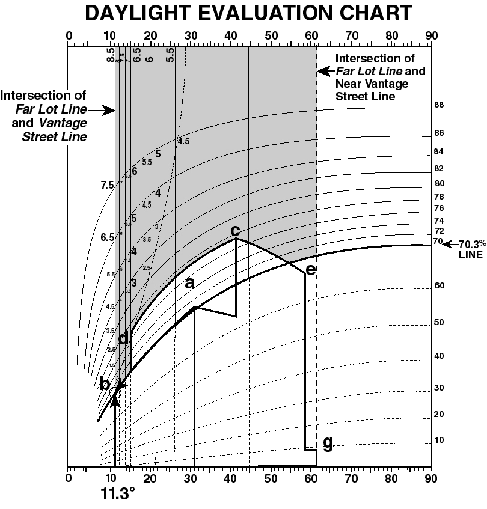
BUILDING AS DRAWN ON THE DAYLIGHT EVALUATION CHART
(81-273e)
(f) Determine daylight boundaries
Draw a vertical line on the chart rising from the intersection of the near lot line of the zoning lot with the center line of the block or with a line 100 feet distant from and parallel to the front lot line on the vantage street, whichever line is closer to the vantage street. This line and the far lot line represent the boundaries of the potential sky area that the building could block. (See illustration of Building as Drawn on the Daylight Evaluation Chart)
Official NYC Planning source
81-274 Rules for determining the daylight evaluation score
Last amended 2011-02-02
A zoning lot is scored by determining the number and the value of the daylight squares the building blocks when viewed from the vantage point, compared to the total number of daylight squares available within the daylight boundaries as determined in paragraph (f) of Section 81-273 (Rules for plotting buildings on the daylight evaluation chart) and above an elevation angle of 70 degrees.
(a) Assign daylight values
The daylight squares on the daylight evaluation chart are each assigned a value.
(1) Except along vantage streets designated for street wall continuity (see Section 81-43), each unblocked daylight square below the curved line representing an elevation of 70 degrees has a positive value of 0.3 and each unblocked subsquare below the same curved line has a positive value of 0.03.
(2) Each blocked daylight square above the curved line representing an elevation of 70 degrees has a negative value of 1.0.
(3) Where a building blocks any portion of a subsquare the building is charged with blocking the entire subsquare in computing the daylight evaluation score. Each blocked subsquare has a negative value of 1.0/10 or 0.1.
(4) The daylight squares and subsquares which are on the far side of the profile curve are assigned additional weighted values set forth on the chart below. (See illustration of Profile Encroachment Incurring Profile Penalty)
Degrees of Elevation |
Distance from Far Lot Line |
1st 25ft |
2nd 25ft |
3rd 25ft |
4th 25ft |
5th 25ft |
6th 25ft |
7th 25ft |
8th 25ft |
88 to 90 |
8.5 |
8.0 |
7.5 |
7.0 |
6.5 |
6.0 |
5.5 |
5.0 |
86 to 88 |
7.5 |
7.0 |
6.5 |
6.0 |
5.5 |
5.0 |
4.5 |
4.0 |
84 to 86 |
6.5 |
6.0 |
5.5 |
5.0 |
4.5 |
4.0 |
3.5 |
- |
82 to 84 |
5.5 |
5.0 |
4.5 |
4.0 |
3.5 |
3.0 |
2.5 |
- |
80 to 82 |
4.5 |
4.0 |
3.5 |
3.0 |
2.5 |
2.0 |
1.5 |
- |
78 to 80 |
3.5 |
3.0 |
2.5 |
2.0 |
1.5 |
1.0 |
- |
- |
76 to 78 |
2.5 |
2.0 |
1.5 |
1.0 |
.5 |
- |
- |
- |
74 to 76 |
1.5 |
1.0 |
.5 |
.5 |
- |
- |
- |
- |
72 to 74 |
.5 |
.5 |
.5 |
- |
- |
- |
- |
- |
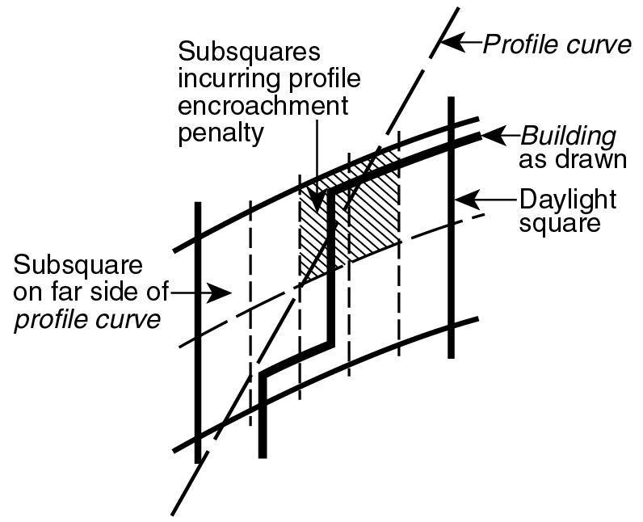
PROFILE ENCROACHMENT INCURRING PROFILE PENALTY
(81-274a)
(5) If the building encroaches beyond the profile curve, the entire subsquare in which the profile encroachment is located is given an additional weighted value. The total penalty is the additional weighted value of the daylight square multiplied by the negative value of the subsquare. The penalty is applied even if the subsquare does not lie entirely beyond the curve.
(b) Calculate daylight blockage
Count the number of blocked daylight squares and subsquares which are above the curved line representing an elevation of 70 degrees. A negative sign is to be given to this number. Total value of daylight blockage in the example is -20.5.
(c) Calculate unblocked daylight credit
Count the number of unblocked daylight squares which are below the curved line representing an elevation of 70 degrees and within the area defined by the intersection of the far lot line with the street line of the vantage street and the intersection of the near lot line with the street line of the vantage street. The total is given a positive value and multiplied by 0.3, the value of these daylight squares. This provision is not applicable where the vantage street is a designated street on which street wall continuity is required by the provisions of Section 81-43 (Street Wall Continuity Along Designated Streets). In the example, the number and value of squares unblocked below 70 degrees = +0.0.
(d) Calculate profile daylight blockage
Count the number of blocked daylight squares which are entirely on the far side of the profile curve when viewed from the vantage point and the number of blocked or partially blocked subsquares which are on the far side of the profile curve. All of these daylight squares and subsquares are given a negative sign, multiplied by their respective weighted values in the table in paragraph (a)(4) of this Section and the products added. Subsquares are counted as one tenth of a daylight square. In the example, the total value of profile daylight blockage = -0.45.
(e) Calculate available daylight
Count the number of daylight squares available to the site. This is the total number of daylight squares and subsquares, calculated to the nearest tenth, that are above the curved line representing the boundaries of the potential sky area available to the site, said boundaries being delineated in accordance with the provisions of paragraph (f) of Section 81-273 (Rules for plotting buildings on the daylight evaluation chart). Available daylight in the example is 89.9.
(f) Calculate daylight remaining
Calculate the remaining or unblocked daylight by adding the results of paragraphs (b) through (e) of this Section. Daylight remaining in the example is (-20.5) + (0.0) + (-0.45) + (89.9) = 68.95.
(g) Calculate daylight score
Compute the remaining daylight score from paragraph (f) of this Section, as a percentage of the available daylight from paragraph (e) of this Section. The percentage is the daylight score for the proposed building from that vantage point. In the example, the daylight score is 68.95/89.9 = 76.70 percent for vantage point one (V1).
(h) Calculate overall daylight score
(1) The street score is the arithmetic mean of all the scores from all vantage points along a vantage street. When a zoning lot fronts on only one street, the street score is also the overall score. Where a zoning lot has more than one street frontage along any one vantage street, the street score is the average of all those individual street frontage scores computed pursuant to paragraph (b) of Section 81-275 (Special conditions), weighted by the lengths of all those street frontages.
(2) Where a zoning lot fronts on more than one street, the overall score is the average of the street scores, weighted by the length of their respective vantage street frontages.
(i) The passing score
To be in compliance with these regulations, a zoning lot must have an overall score of not less than 75 percent, with no single street frontage having a street score of less than 66 percent. If a zoning lot fronts only on one street, a daylight evaluation score of not less than 75 percent is required for that street frontage. If a street score is less than 66 percent, or if the overall daylight score is less than the passing score of 75 percent, a modest improvement in either the street score or the overall score may be obtained by scoring the relative reflectivity of the building's surface, as specified in Section 81-276 (Modification of score for reflectivity). The passing daylight score of 75 percent is equivalent to the average daylight levels of Midtown buildings built as-of-right under the 1916 and 1961 Zoning Resolutions. The minimum requirement of 66 percent on one frontage is equivalent to the daylight level of any interior lot building built in Midtown under the 1916 Zoning Resolution in a two-times height district. However, if any one frontage is less than 75 percent, other frontages must be greater than 75 percent to reach the passing overall daylight score. This allows flexibility in building design while maintaining daylight standards within the levels established by buildings built as-of-right under the 1916 and 1961 Zoning Resolutions. (See illustration of Daylight Evaluation Score Results)
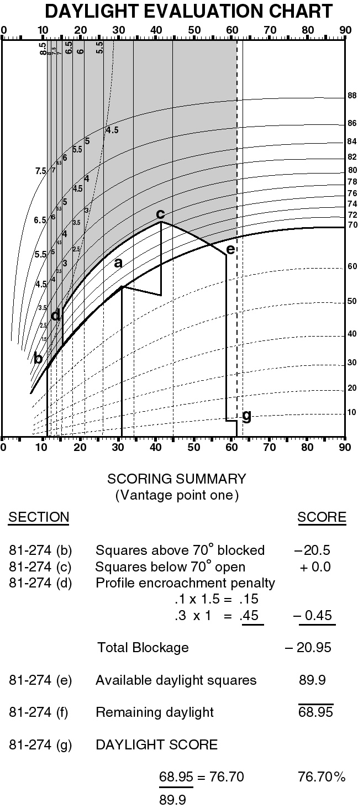
DAYLIGHT EVALUATION SCORE RESULTS
(81-274i)
Official NYC Planning source
81-275 Special conditions
Last amended 1982-05-13
Notwithstanding the provisions of Sections 81-271 to 81-274, inclusive, relating to Alternate Height and Setback Regulations-Daylight Evaluation, the provisions of this Section shall apply under special conditions, as follows:
(a) For zoning lots with street frontages exceeding 250 feet
(1) Where the length of the street frontage is more than 250 feet but not more than 500 feet, the building as viewed from each vantage point shall be plotted on a daylight evaluation chart that extends in both directions from the 90 degree line on the horizontal axis. In each case, the number of available daylight squares for daylight evaluation shall be the number of squares between the far lot line and the near lot line.
(2) Where the length of the street frontage is more than 500 feet, daylight evaluations shall be made from three vantage points, as follows: vantage points one and two, each 250 feet distant from a far lot line extended to the center line of the street, and vantage point three, on the center line of the street, half-way between the other two vantage points. The daylight evaluation charts for the first two vantage points shall in each case encompass a view extending from the far lot line to the 90 degree line on the horizontal axis and the number of available daylight squares shall be the number of squares between the far lot line and the 90 degree line and above the curved line representing an elevation angle of 70 degrees. The daylight evaluation chart for the third vantage point shall extend in both directions from the 90 degree line on the horizontal axis to the vertical lines representing the points on the front lot line directly opposite vantage points one and two. The number of available daylight squares for daylight evaluation shall be the number of daylight squares between such vertical lines and above the curved line representing an elevation angle of 70 degrees.
(b) For zoning lots with interrupted street frontages
Where a zoning lot has two or more front lot lines on the same street which are separated by frontage of an intervening zoning lot, there shall be two daylight evaluations for each such front lot line. Each lot line of the zoning lot that intersects the street line shall be treated as a far lot line for the purposes of daylight evaluation from a vantage point.
(c) Where front lot lines are curved or broken
If the front lot line of the zoning lot is curved or bent, the extremities of such front lot line shall be connected by a straight line, which shall be considered the front lot line.
Official NYC Planning source
81-276 Modification of score for reflectivity
Last amended 2011-02-02
Where zoning lots have utilized the daylight evaluation chart but a street score along one frontage is less than 66 percent or the overall score is less than 75 percent, a modest improvement in either the street score or the overall score of a zoning lot within a building which reflects more light than a medium gray or glass building may be obtained by scoring the relative reflectivity of the building's surface.
The use of reflectivity is optional and not necessary if a passing score can be obtained under Section 81-274 (Rules for determining the daylight evaluation score). Reflectivity scoring permits greater design flexibility for a light-colored building than a dark one.
Because the greatest reflectivity comes from the upper portions of buildings, the value of reflected light is credited against the amount of daylight blocked by the portions of the building above an elevation angle of 70 degrees from the center line of the street.
Reflectivity has two components: the reflectance of the surface material and the orientation of the material to the sun.
(a) Reflectance
Reflectance values of materials will be determined by the Department of Buildings after the submission of samples of proposed surface materials by the applicant.
(1) Mixed reflectance
A building of several surface materials will have a reflectance value determined by multiplying each material's reflectance value by its percentage of the total wall surface and adding the products. For example, a building that is 60 percent limestone and 40 percent clear glass would have a reflectance of .60 x .45 (the reflectance of limestone) plus .40 x .15 (the reflectance of clear glass) or an overall reflectance of .33.
(2) Relative reflectance
In order to be included in the reflectivity score of a zoning lot, the material of the building must reflect more light than a medium gray or glass building. The reflectance value of a medium gray or glass building in Midtown is .15 so that the building with an overall reflectance of .33, given in the example in paragraph (a)(1) of this Section, would be increasing the expected reflectance by .33 minus .15 which equals .18.
Examples of potential reflectance values for different types of surface finishes are shown on the following chart.
REFLECTANCE VALUES - EXAMPLES OF BUILDING MATERIALS
White plaster or paint or glaze |
.80 to .90 |
Aluminum paint |
.55 |
Green paint |
.50 |
Red paint |
.26 |
Light gray paint |
.25 |
Flat black paint |
.06 |
Polished aluminum, stainless steel |
.85 |
Polished light marble |
.40 to .50 |
Light granite, limestone |
.45 |
Copper, brass lead |
.60 to .80 |
Smooth concrete |
.45+ |
Rough concrete |
.40 |
Asbestos cement |
.31 |
Light buff brick |
.48 |
Dark buff brick |
.40 |
Light red brick |
.45 |
Dark red glazed brick |
.30 |
Dark red brick |
.12 |
Slate |
.11 |
Wood |
.22+ |
Glass: double glazing with reflective coating* |
Solarcool(r) bronze or gray |
.35 to .36 |
Solarban(r) clear |
.36 to .44 |
Solarban(r) bronze |
.18 |
Solarban(r) gray |
.14 |
Glass: tinted double glazing |
Gray |
.08 |
Bronze |
.09 |
Solex(r) (green or blue) |
.12 |
Glass: clear double glazing |
.15 |
Glass: clear single glazing |
.08 |
______
* Reflectance varies according to which layer the reflective coating is placed on, but can be precisely determined for each position
Sources:
Anderson, Bruce. Solar Energy: Fundamentals in Building Design. (McGraw Hill, New York 1977).
Callendar, John Hancock. Time Saver Standards: A Handbook of Architectural Design. (McGraw Hill, New York, 4th Edition, 1964).
PPG Industries, Inc., Architectural Glass Products (G702). PPG, Pittsburgh, PA., 1977.
(b) Facade orientation
Orientation of the facade of the building is the second component required for measurement of reflectivity. Because reflectivity varies according to the orientation of the facade, the orientation value for a particular surface from the chart below is multiplied by the reflectance of the surface to ascertain the amount of daylight reflectivity.
The orientation values are shown on the following reflectivity chart. Orientation angles shall be rounded to the nearest 22.5 degrees.
Orientation based on True North |
Orientation Value |
North: |
0o |
.09 |
|
22.5o |
.15 |
|
45.0o |
.22 |
|
67.5o |
.40 |
East: |
90.0o |
.57 |
|
112.5o |
.72 |
|
135.0o |
.87 |
|
157.5o |
.93 |
South: |
180.0o |
1.00 |
|
157.5o |
.93 |
|
135.0o |
.87 |
|
112.5o |
.72 |
West: |
90.0o |
.57 |
|
67.5o |
.40 |
|
45.0o |
.22 |
|
22.5o |
.15 |
(c) Reflectivity Score
In order to obtain the reflectivity score for each view of the building, first count the daylight squares and subsquares which are blocked by the building on the daylight evaluation chart above an elevation angle of 70 degrees. This number shall be calculated separately for every orientation of each facade and multiplied by the relative reflectance of that portion of the building and the orientation value.
Reflectance = (% material A x reflectance material A) + (% material B x reflectance material B)
Relative reflectance (RR) = reflectance minus .15
Reflectivity score = RR x facade orientation value x daylight squares blocked above 70o.
The reflectivity scores for the several orientations are then added together to give the reflectivity score for that view of the building as a whole from the vantage point represented on the daylight evaluation chart.
The reflectivity score is added to the daylight remaining after accounting for daylight blockage as calculated in paragraph (f) of Section 81-274
The sum is then calculated as a percentage of the available daylight squares calculated in paragraph (e) of Section 81-274 to give the adjusted daylight score for the zoning lot from the vantage point represented on the daylight evaluation chart.
The adjusted street score along a particular vantage street is obtained by calculating the mean average of the adjusted daylight scores from all vantage points along the vantage street.
The adjusted overall score for the zoning lot is obtained by calculating the average of the adjusted street scores weighted by the lengths of their respective vantage street frontages.
(d) Limits on adjusted scores
(1) Adjusted street score
The adjusted street score shall not be more than six percentage points higher than the street score not adjusted for reflectivity.
If reflectivity scoring is used to bring the adjusted overall score for the zoning lot above 75 percent (the passing overall score), the street score for each street frontage without adjustment for reflectivity shall be not less than 66 percent.
(2) Adjusted overall score
The adjusted overall score shall not be more than six percentage points higher than the overall score not adjusted for reflectivity.
If the reflectivity scores for any single street frontage are used to bring the adjusted street score for that frontage above 66 percent (the passing score for a single street frontage), the overall score of the zoning lot without adjustment for reflectivity shall be not less than 75 percent.
Official NYC Planning source
81-277 Special permit for height and setback modifications
Last amended 2024-12-05
In C5-3, C6-6 or C6-7 Districts, where a special permit application is made pursuant to Section 74-71 (Landmark Preservation) for modification of bulk regulations on a zoning lot containing a landmark, such application may include a request for modification of the height and setback regulations set forth in Sections 81-261 to 81-275, inclusive, relating to Alternate Height and Setback Regulations - Daylight Evaluation. The City Planning Commission may authorize such height and setback modifications subject to the following conditions:
(a) The applicant shall demonstrate to the satisfaction of the Commission that a feasible design for the proposed development or enlargement which accommodates the permitted floor area is not possible under the provisions of Sections 81-271 to 81-276, inclusive, and shall further present for the proposed design a complete daylight evaluation with an explanation of street score or overall daylight score deficiencies.
(b) The Commission shall make the following findings in addition to any required under the applicable provisions of Sections 74-71:
(1) that the requested departure from the alternate height and setback regulations is the minimum amount necessary to achieve a feasible building design;
(2) that the disadvantages to the surrounding area resulting from reduced light and air access will be more than offset by the advantages of the landmark's preservation to the local community and the City as a whole; and
(3) that where the landmark is located on the zoning lot proposed for development or enlargement or on a lot contiguous thereto or directly across a street therefrom, the modification of the alternate height and setback regulations will adequately protect the setting for the landmark.
Official NYC Planning source
81-311 Prohibitions of off-street parking or off-street loading facilities
Last amended 2013-05-08
Notwithstanding the provisions of Article I, Chapter 3, prohibitions of off-street parking facilities or accessory off-street loading berths or restrictions as to their location or access, as provided in Sections 81-44 (Curb Cut Restrictions) or 81-84 (Mandatory Regulations and Prohibitions), may be waived only in accordance with the applicable provisions of Sections 81-44 or 81-84.
Official NYC Planning source
81-411 Maintenance of pedestrian circulation spaces
Last amended 2011-02-02
Owners of property on which pedestrian circulation spaces are provided shall be responsible for their maintenance unless, in the case of relocated subway stairs, the Metropolitan Transit Authority has agreed in writing to such maintenance responsibility.
Official NYC Planning source
81-412 Directional signs
Last amended 1982-05-13
Directional signs are required to call attention to relocated subway stairs and through block connections and announce their accessibility to the public.
Official NYC Planning source
81-413 Provisions for persons with disabilities
Last amended 2007-10-17
All mandatory district plan elements required by the provisions of Section 81-45 (Pedestrian Circulation Space) shall conform with applicable laws pertaining to access for persons with disabilities.
Official NYC Planning source
81-451 Theater waiting space
Last amended 1998-08-06
Theater waiting space shall be an unobstructed area providing outdoor waiting space for a theater audience, located immediately adjacent to the sidewalk and to a theater listed in Section 81-742 (Listed theaters) or a new theater designed and intended to show live theatrical performances. Theater waiting space may be located on the same zoning lot occupied by a theater or a zoning lot immediately adjacent to a theater, and shall meet the following requirements:
(a) such space shall adjoin and open onto a sidewalk or sidewalk widening for its entire length and shall have a minimum length of 30 feet measured parallel to the street line and a minimum clear depth of 10 feet measured perpendicular to the street line exclusive of any columns. Its level shall be entirely the same as that of the adjoining sidewalk. When located under an overhanging portion of a building or other structure, it shall have a minimum clear height of 15 feet and be free of any obstructions except for building columns;
(b) such space shall provide direct access to a building's entrance or the theater's lobby. Where the theater and the theater waiting space are on separate zoning lots, a plaque shall be provided within the theater waiting space adjacent to the theater stating that the space is available as a waiting area for the theater audience. Such plaque shall be placed between four feet and six feet above curb level, and shall be visible from the sidewalk;
(c) such space shall not adjoin a driveway or an off-street loading berth; and
(d) the entire theater waiting space shall be illuminated with a minimum level of not less than eight horizontal foot-candles (lumens per foot).
The theater waiting space may overlap with an arcade, a building entrance recess area, a corner arcade, a corner circulation space or a sidewalk widening. However, the area of overlap may only be counted once toward the fulfillment of the required minimum area of pedestrian circulation space.
Official NYC Planning source
81-521 Rail mass transit and subway entrance informational signs
Last amended 2001-10-31
For a zoning lot that contains or is adjacent to an entrance or entrances to a rail mass transit facility or subway station, no permit shall be issued for any signs that extend or are located above a height of 40 feet, unless the City Planning Commission certifies that each such entrance is clearly identified with rail mass transit or subway entrance informational signs and marquees in accordance with paragraphs (a) and (b) of this Section. Such rail mass transit or subway entrance informational sign or marquee shall remain, or be upgraded or replaced by a similar sign or marquee, for the life of the related development.
(a) Rail mass transit or subway entrance informational signs shall prominently identify the entrance on both streets of a corner lot. Where rail mass transit or subway entrance informational signs are provided at the western block front of Seventh Avenue between West 31st and West 33rd Streets, such signs shall prominently identify the entrance to Pennsylvania Station to pedestrians on both Seventh Avenue and West 32nd Street. All such informational signs shall comply with the following requirements:
(1) such signs shall contain only transit information;
(2) such signs shall be illuminated and located no less than 12 feet above and no more than 25 feet above curb level;
(3) such signs shall contain the word “Subway” and/or appropriate other rail mass transit identification and transit line symbols. The graphic standards shall adhere to New York City Transit or other pertinent transit agency standards with all letters no less than three feet and transit symbols no less than two feet in dimension;
(4) such signs shall be no less than 30 feet in length on each street and shall extend farther than 30 feet in order to include the actual entrance; and
(5) such signs may project up to five feet beyond the street line.
(b) At the rail mass transit or subway entrance, a marquee shall be provided to further identify the entrance and shall:
(1) contain only transit sign information;
(2) be illuminated and located no less than 12 feet above and no more than 25 feet above curb level;
(3) have a minimum length of 20 feet or the full width of the entrance, whichever is less;
(4) project no less than five feet beyond the transit or subway informational sign; and
(5) include illuminated mass transit identification and transit line symbols that meet the New York City Transit or other pertinent transit agency standards.
Official NYC Planning source
81-531 Special retail frontage requirements
Last amended 2024-06-06
The provisions of Section 81-42 (Retail Continuity Along Designated Streets) shall apply within the Penn Center Subdistrict, except that any underlying transparency requirement shall not apply to any informational signs or marquees provided to identify rail mass transit or subway entrances in accordance with Section 81-52 (Sign Regulations).
Official NYC Planning source
81-532 Special street wall requirements
Last amended 2011-02-02
The provisions of Section 81-43 (Street Wall Continuity Along Designated Streets) shall apply, except that the street wall of all buildings along the Seventh Avenue frontage of zoning lots shall be a minimum of 85 feet above curb level or the full height of the building, whichever is less. All other provisions of Section 81-43 shall apply without modification.
In addition, the restrictions on permitted recesses contained in Section 81-43 shall not apply to pedestrian circulation spaces provided in accordance with Sections 81-46 (Off-street Relocation or Renovation of a Subway Stair) or 81-48 (Off-street Improvement of Access to Rail Mass Transit Facility) nor to interstitial spaces between signs or between building walls and signs.
Official NYC Planning source
81-541 Mass transit station improvements
Last amended 2021-10-07
For developments or enlargements on qualifying transit improvement sites, a floor area bonus for mass transit station improvements may be granted by the City Planning Commission pursuant to the provisions of Section 66-51 (Additional Floor Area for Mass Transit Station Improvements). For the purposes of this paragraph, defined terms additionally include those in Section 66-11 (Definitions).
For the purposes of this Section, improvements to any mass transit station on a qualifying transit improvement site located wholly or partially within the Subdistrict qualifies for bonus floor area in accordance with the provisions of Section 66-51, as modified herein. For a qualifying transit improvement site located partially within the Subdistrict, such bonus floor area may be located anywhere on such qualifying transit improvement site. In addition, if a mass transit station improvement has been constructed in accordance with an approved authorization or special permit and has received a Notice of Substantial Completion in accordance with the provisions of Section 66-51, the bonus floor area may be retained at the full amount granted by the authorization or special permit and may be utilized elsewhere on the qualifying transit improvement site subject to any applicable review and approval process for such development or enlargement.
Official NYC Planning source
81-542 Retention of floor area bonus for plazas or other public spaces
For the zoning lot bounded by West 34th Street, Seventh Avenue, West 33rd Street and Eighth Avenue, which contains at least 7,000 square feet of existing publicly accessible open areas or other bonused public amenity in the Penn Center Subdistrict, the maximum allowed floor area bonus for all existing publicly accessible open areas or other public amenities on the zoning lot may be retained at the amount allowed prior to October 31, 2001, subject to all other provisions of this Resolution, notwithstanding inclusion of such zoning lot within the Special Midtown District.
Official NYC Planning source
81-611 Applicability of regulations
Last amended 2017-08-09
The provisions of Section 81-60, inclusive, shall apply in the East Midtown Subdistrict as follows:
(a) Section 81-61, inclusive, sets forth general provisions, applicability and definitions for the East Midtown Subdistrict;
(b) Section 81-62, inclusive, sets forth special use provisions;
(c) Section 81-63, inclusive, sets forth special floor area provisions for the Vanderbilt Corridor Subarea;
(d) Section 81-64, inclusive, sets forth special floor area provisions for qualifying sites;
(e) Section 81-65, inclusive, sets forth special floor area provisions for all other zoning lots;
(f) Section 81-66, inclusive, sets forth certain height and setback modifications to the provisions of Sections 81-26 and 81-27;
(g) Section 81-67, inclusive, sets forth certain modifications to the mandatory district plan elements of Section 81-40, inclusive; and
(h) Section 81-68, inclusive, sets forth additional provisions pertaining to qualifying sites.
Official NYC Planning source
81-612 Applicability along district boundaries
Last amended 2017-08-09
For zoning lots divided by district boundaries, the underlying provisions shall apply, except as follows:
(a) For qualifying sites divided by district boundaries where both districts have the same maximum floor area ratio set forth in Rows E and H of the table in Section 81-64 (Special Floor Area Provisions for Qualifying Sites), the provisions of Section 33-16 (Special Provisions for Zoning Lots Divided by District Boundaries) shall not apply to a building developed or, where permitted, enlarged, to exceed the basic maximum floor area in Row A of the table in Section 81-64. In lieu thereof, the floor area of such building on a qualifying site may be located anywhere on the zoning lot, regardless of the district boundary.
(b) In addition to the requirements set forth in Sections 81-25 (General Provisions Relating to Height and Setback of Buildings) and 81-40 (MANDATORY DISTRICT PLAN ELEMENTS), the provisions of Section 81-60, inclusive, shall apply to a zoning lot having 50 percent or more of its lot area within the East Midtown Subdistrict. For the purposes of Section 81-60, inclusive, all such zoning lots shall be deemed to be entirely within the Subdistrict. If any of the provisions of Sections 81-25, 81-40 and 81-60, inclusive, are in conflict, the regulations of Section 81-60, inclusive, shall govern. However, for zoning lots located partly within the East Midtown Subdistrict and partly within the Fifth Avenue Subdistrict, the provisions of Article VII, Chapter 7 shall apply.
(c) For zoning lots divided by subarea boundaries, the provisions of Article VII, Chapter 7 shall apply.
(d) For zoning lots with landmark buildings or other structures where more than 50 percent of the lot area is located within the Special Midtown District, and which abut the East Midtown Subdistrict boundary, such zoning lot may be considered as part of the Subdistrict for the purposes of transferring development rights pursuant to the applicable provisions of Sections 81-642 (Transfer of development rights from landmarks to qualifying sites) or 81-653 (Special permit for transfer of development rights from landmarks to non-qualifying sites). However, the maximum amount of floor area that may be transferred from a granting lot, or portion thereof, located outside the Special Midtown District shall be the maximum floor area ratio permitted under the applicable underlying zoning district.
Official NYC Planning source
81-613 Definitions
Last amended 2024-12-05
Non-qualifying site
For the purposes of Section 81-60, inclusive, a “non-qualifying site” shall refer to a zoning lot that does not meet the criteria for a qualifying site and is located in a subarea other than the Vanderbilt Corridor Subarea.
Public Realm Improvement Fund
For the purposes of Section 81-60, inclusive, the “Public Realm Improvement Fund” (the “Fund”) shall be a separate interest-bearing account established for the deposit of contributions made when developments or, where permitted, enlargements on qualifying sites in the East Midtown Subdistrict will exceed the basic maximum floor area ratio set forth in Section 81-64 (Special Floor Area Provisions for Qualifying Sites) through their utilization of the provisions of Sections 81-642 (Transfer of development rights from landmarks to qualifying sites), 81-643 (Special provisions for retaining non-complying floor area in commercial buildings) or 81-685 (Special permit to modify qualifying site provisions). The Fund shall be utilized, at the discretion of the Public Realm Improvement Fund Governing Group, to provide funding to implement improvements to the East Midtown Subdistrict, and its immediate vicinity, in the Borough of Manhattan. Upon receipt of any contribution, the Public Realm Improvement Fund Governing Group or the Department of City Planning shall notify the Comptroller of the City of New York and the Speaker of the New York City Council and promptly deposit it into the Fund.
Public Realm Improvement Fund Development Rights Valuation
For the purposes of Section 81-60, inclusive, the “Public Realm Improvement Fund Development Rights Valuation” (“Development Rights Valuation”) shall be a value per square foot of transferable development rights in the East Midtown Subdistrict, which shall provide a basis for establishing a minimum contribution to the Public Realm Improvement Fund. As of August 9, 2017, the Development Rights Valuation shall be set at $307.45 per square foot.
When proposing an adjustment to the Development Rights Valuation, the Department of City Planning shall undertake a transferrable development rights valuation study conducted by qualified professionals utilizing industry best practices. The City Planning Commission shall, by rule, review and adjust the Development Rights Valuation, pursuant to the City Administrative Procedures Act not more than once every three years and not less than once every five years.
An applicant, upon written request to the Commission, may request a transferable development rights valuation study to evaluate whether the Development Rights Valuation should be modified for a particular qualifying site based upon any recent changes in market conditions within the Subdistrict. The study must be paid for by the applicant and completed within a one-year timeframe. The Department of City Planning shall initiate the study, to be conducted by qualified professionals utilizing industry best practices. Where the study demonstrates that the value of the development rights for the qualifying site is less than the Development Rights Valuation, the Commission shall, by certification, and in connection with a certification pursuant to Section 81-642 (Transfer of development rights from landmarks to qualifying sites), modify the required contribution to 20 percent of the adjusted valuation.
Public Realm Improvement Fund Governing Group
For the purposes of Section 81-60, inclusive, the “Public Realm Improvement Fund Governing Group” (the “Governing Group”) shall be established to administer the Public Realm Improvement Fund (the “Fund”), and shall consist of 13 members: seven members shall be representatives of City agencies, appointed by and serving at the pleasure of the Mayor; one member shall be a representative of a citywide civic organization, appointed by the Office of the Manhattan Borough President; one member shall be a representative of the Office of the Manhattan Borough President; one member shall be a representative of the New York City Council member representing the City Council district encompassing the largest portion of the East Midtown Subdistrict; one member shall be a representative of the Speaker of the City Council; one member shall be a representative of Manhattan Community Board 5; and one member shall be a representative of Manhattan Community Board 6. The Governing Group shall be a local development corporation, organized pursuant to the New York State Not-for-Profit Corporation Law, and affiliated with City government for purposes of the New York State Public Authorities Law, whose organizational purpose shall be limited solely to the purposes set forth in this Chapter. Each member shall have one vote, and all Governing Group decisions, as set forth below, shall be upon a majority vote at a public meeting at which a quorum is present. A quorum shall consist of a majority of the members.
The purpose of the Governing Group shall be to bolster and enhance East Midtown’s status as a premier central business district with a high-quality public realm, by allocating funds from the Fund to implement public realm improvement projects. The Governing Group shall establish and maintain a Public Realm Improvement Concept Plan (“Concept Plan”) for the purpose of creating a list of priority improvements, and shall have the authority to amend such Concept Plan, and associated list of improvements, as necessary. All priority improvements in the Concept Plan shall meet the criteria set forth in Section 81-683 (Criteria for improvements in the Public Realm Improvement Concept Plan).
Establishment of the Concept Plan, amendment of the Concept Plan, calendaring of items for a vote to fund, and designation of funding for a specific public realm improvement on the Concept Plan shall be decisions requiring a majority vote of the Governing Group at a meeting at which a quorum is present. If only members of the Governing Group appointed by the Mayor vote to calendar a particular public realm improvement for a vote to fund it, the Governing Group shall conduct a public hearing on the matter prior to such improvement being placed on the calendar for vote. In addition, if any member of the Governing Group puts forth a proposed public realm improvement, discussion of such improvement shall be added to the agenda of the next public meeting. Establishment of the initial Concept Plan shall be completed no later than November 1, 2017.
In the event that more than 20 million dollars remains in the Fund for more than three years, the Governing Group shall be required to hold a vote either to fund a public realm improvement project or to retain the funds.
The Governing Group shall adopt procedures for the conduct of its activities. Such procedures shall be consistent with the requirements of the New York State Open Meetings Law (Article 7, NYS Public Officers Law), which procedures shall also be consistent with the goals of the Subdistrict. Those procedures shall be publicly available by posting on the Department of City Planning’s website, and shall include rules requiring reporting and transparency including, but not limited to, the following: procedures on the adoption and amendment of the concept plan and opportunity for public comment thereon; requirements to provide a transcript or recording of all public meetings and hearings; and transparency and annual reporting requirements concerning deposits into and expenditures from the Fund. The Governing Group shall annually update the Concept Plan by providing a list of all projects on the Concept Plan to date, those added or removed in the past year, the dollar amount of funds designated to each project on the Concept Plan, to the extent available, the estimated cost of each project on the Concept Plan, and the schedule for all projects for which a decision to designate funding has been made by the Governing Group. Such annual update shall be posted on the Department of City Planning’s website no later than January 15 of each calendar year following the establishment of the initial Concept Plan. All meetings of the Governing Group shall be open to the public with advance public notice provided of all meetings and public hearings.
Qualifying site
For the purposes of Section 81-60, inclusive, a “qualifying site” shall refer to a zoning lot:
- that is not located in the Vanderbilt Corridor Subarea;
- that has frontage along a wide street;
- where, at the time of development or, where permitted, enlargement, either:
- at least 75 feet of such zoning lot’s wide street frontage is clear of buildings or other structures; or
- the entire block frontage along such wide street is occupied by one or more landmark buildings or other structures; or
- such zoning lot’s wide street frontage is occupied by an existing easement volume that is being preserved, or reconfigured in accordance with Section 81-673 (Mass transit access);
- where a building is developed or, where permitted, enlarged, in accordance with the floor area provisions of Section 81-64 (Special Floor Area Provisions for Qualifying Sites), and such development or, where permitted, enlargement exceeds the basic maximum floor area set forth in Row A of the table in Section 81-64 and such building or publicly accessible space occupies the cleared area in paragraph (c)(1) of this definition, unless the provisions of paragraphs (c)(2) or (c)(3) apply;
- where a maximum of 20 percent of the floor area permitted on such zoning lot is allocated to residential uses, or a maximum of 24 percent of the floor area permitted on such zoning lot where qualifying affordable housing or qualifying senior housing is provided; and
- where such building being developed or, where permitted, enlarged, complies with the performance requirements of paragraph (a) and the publicly accessible space requirements of paragraph (b) of Section 81-681 (Mandatory requirements for qualifying sites).
Sale price
For the purposes of Section 81-60, inclusive, “sale price” shall mean the total consideration exchanged for transferred floor area pursuant to certification to transfer development rights from zoning lots occupied by landmark buildings or other structures within the East Midtown Subdistrict to a qualifying site. The total consideration shall include all consideration as defined in Chapter 21 of the Administrative Code of the City of New York and Title 19 of the Rules of the City of New York, as they may be amended, or their successor provisions, whether or not subject to tax under that Chapter. The total consideration shall also include any other compensation in whatever form received in exchange for the floor area, including contingent consideration. A valuation prepared pursuant to procedures established by rule of the City Planning Commission or the New York City Department of Finance shall be required for all consideration in a form other than cash. The application for certification shall include affidavits from the buyer and seller, attesting under penalty of perjury, that all of the terms of the transaction and all the consideration have been disclosed, and may be subject to audit.
Official NYC Planning source
81-621 Location of uses in mixed buildings
Last amended 2024-06-06
For mixed buildings developed on qualifying sites, the provisions of Section 32-422 (Location of floors occupied by commercial uses) shall be modified such that only the limitations set forth in paragraph (c) of such Section need apply.
Official NYC Planning source
81-631 Special provisions for transfers of development rights in the Vanderbilt Corridor Subarea
Last amended 2017-08-09
All applications for transfers of development rights pursuant to the special permit by the City Planning Commission in Section 81-632 (Special permit for transfer of development rights from landmarks to the Vanderbilt Corridor Subarea) shall also comply with the regulations of this Section.
(a) Requirements for applications
In addition to the land use review application requirements, an application filed with the City Planning Commission for a special permit pursuant to Section 81-632 shall be made jointly by the owners of the granting lot and receiving lot and shall include:
(1) site plan and zoning calculations for the granting lot and receiving lot;
(2) a program for the continuing maintenance of the landmark;
(3) a report from the Landmarks Preservation Commission concerning the continuing maintenance program of the landmark and, for those “receiving” sites in the immediate vicinity of the landmark, a report concerning the harmonious relationship of the development or enlargement to the landmark;
(4) a plan of any required pedestrian network improvement; and
(5) any such other information as may be required by the City Planning Commission.
A separate application shall be filed for each transfer of development rights to an independent receiving lot pursuant to Section 81-632.
(b) Conditions and limitations
The transfer of development rights from a granting lot to a receiving lot, pursuant to Section 81-632, shall be subject to the following conditions and limitations:
(1) the maximum amount of floor area that may be transferred from a granting lot shall be the maximum floor area allowed by Section 33-12 for commercial buildings on such landmark zoning lot, as if it were undeveloped, less the total floor area of all existing buildings on the landmark zoning lot;
(2) for each receiving lot, the floor area allowed by the transfer of development rights under Section 81-632 shall be in addition to the maximum floor area allowed by the district regulations applicable to the receiving lot, as shown in the table in Section 81-63 (Special Floor Area Provisions for the Vanderbilt Corridor Subarea); and
(3) each transfer, once completed, shall irrevocably reduce the amount of floor area that may be developed or enlarged on the granting lot by the amount of floor area transferred. If the landmark designation is removed, the landmark building or other structure is destroyed or enlarged, or the zoning lot with the landmark building or other structure is redeveloped, the granting lot may only be developed or enlarged up to the amount of permitted floor area as reduced by each transfer.
(c) Transfer instruments and notice of restrictions
The owners of the granting lot and the receiving lot shall submit to the Commission a copy of the transfer instrument legally sufficient in both form and content to effect such a transfer. Notice of the restrictions upon further development or enlargement of the granting lot and the receiving lot shall be filed by the owners of the respective lots in the Office of the Register of the City of New York (County of New York), a certified copy of which shall be submitted to the Commission.
Both the instrument of transfer and the notice of restrictions shall specify the total amount of floor area transferred and shall specify, by lot and block numbers, the lots from which and the lots to which such transfer is made.
Official NYC Planning source
81-632 Special permit for transfer of development rights from landmarks to the Vanderbilt Corridor Subarea
Last amended 2017-08-09
Within the Vanderbilt Corridor Subarea, as shown on Map 2 (East Midtown Subdistrict and Subareas) in Appendix A of this Chapter, the City Planning Commission may permit the transfer of development rights from a granting lot in the Grand Central Core Area, as shown on Map 2, to a receiving lot, and, in conjunction with such transfer, the Commission may permit modifications to bulk regulations, mandatory plan elements, and provisions regarding zoning lots divided by district boundaries, as set forth in paragraph (a) of this Section, provided that the Commission determines that the development or enlargement complies with the conditions of paragraph (b), the findings of paragraph (c) and the additional requirements of paragraph (d) of this Section.
For the purposes of this Section, defined terms additionally include those in Section 75-421 (Definitions). However, a receiving lot shall mean a zoning lot within the Vanderbilt Corridor Subarea to which development rights of a granting lot are transferred.
(a) The Commission may permit:
(1) a transfer of development rights from a granting lot to a receiving lot provided that the resultant floor area ratio on the receiving lot does not exceed 30.0;
(2) modifications of the provisions of Sections 77-02 (Zoning Lots not Existing Prior to Effective Date or Amendment of Resolution), 77-21 (General Provisions), 77-22 (Floor Area Ratio) and 77-25 (Density Requirements) for any zoning lot, whether or not it existed on December 15, 1961, or any applicable subsequent amendment thereto, floor area or dwelling units permitted by the district regulations which allow a greater floor area ratio may be located within a district that allows a lesser floor area ratio;
(3) in the case of an enlargement to an existing building utilizing the transfer of development rights from a landmark building or other structure, modifications of the provisions of Sections 81-66 (Special Height and Setback Requirements), 81-671 (Special street wall requirements), 81-674 (Ground floor use provisions), 81-675 (Curb cut restrictions and loading berth requirements), 81-676 (Pedestrian circulation space requirements), and Sections 81-25 (General Provisions Relating to Height and Setback of Buildings), 81-26 (Height and Setback Regulations-Daylight Compensation) and 81-27 (Alternate Height and Setback Regulations-Daylight Evaluation) in order to accommodate existing structures and conditions;
(4) for zoning lots of more than 40,000 square feet of lot area that occupy an entire block, modifications of bulk regulations, except floor area ratio regulations; and
(5) modifications, whether singly or in any combination, to:
(i) the street wall regulations of Sections 81-43 (Street Wall Continuity Along Designated Streets), inclusive, or 81-671, inclusive;
(ii) the height and setback regulations of Sections 81-26, inclusive, 81-27, inclusive, or 81-661; or
(iii) the mandatory district plan elements of Sections 81-42 (Retail Continuity Along Designated Streets), 81-44 (Curb Cut Restrictions), 81-45 (Pedestrian Circulation Space), 81-46 (Off-street Relocation or Renovation of a Subway Stair), 81-47 (Major Building Entrances), 81-48 (Off-street Improvement of Access to Rail Mass Transit Facility), 81-674 (Ground floor use provisions), 81-675 (Curb cut restrictions and loading berth requirements), 81-676 (Pedestrian circulation space requirements) or 37-50 (REQUIREMENTS FOR PEDESTRIAN CIRCULATION SPACE), inclusive, except that no modifications to the required amount of pedestrian circulation space set forth in Section 37-51 shall be permitted.
(b) Conditions
As a condition for granting a special permit pursuant to this Section, the design of the development or enlargement shall include a major improvement of the above- or below-grade, pedestrian or mass transit circulation network in the Grand Central Core Area. However, this condition may be waived by the Commission, where appropriate, or may be deemed to have been met by utilization of the provisions of Section 81-633 (Special permit for Grand Central public realm improvements). The improvement shall increase the general accessibility and security of the network, reduce points of pedestrian congestion and improve the general network environment through connections into planned expansions of the network. The improvement may include, but is not limited to, widening, straightening or expansion of the existing pedestrian network, reconfiguration of circulation routes to provide more direct pedestrian connections between the development or enlargement and Grand Central Terminal, and provision for direct daylight access, retail in new and existing passages, and improvements to air quality, lighting, finishes and signage.
The special permit application to the Commission shall include information and justification sufficient to provide the Commission with a basis for evaluating the benefits to the general public from the proposed improvement. As part of the special permit application, the applicant shall submit schematic or concept plans of the proposed improvement to the Department of City Planning, as well as evidence of such submission to the Metropolitan Transportation Authority (MTA) and any other entities that retain control and responsibility for the area of the proposed improvement. Prior to ULURP certification of the special permit application, the MTA and any other entities that retain control and responsibility for the area of the proposed improvement shall each provide a letter to the Commission containing a conceptual approval of the improvement including a statement of any considerations regarding the construction and operation of the improvement.
(c) Findings
In order to grant a special permit for the transfer of development rights to a receiving lot, the Commission shall find that:
(1) a program for the continuing maintenance of the landmark building or other structure has been established;
(2) for any proposed improvement required pursuant to this Section:
(i) the improvement to the above- or below-grade pedestrian or mass transit circulation network provided by the development or enlargement increases public accessibility to and from Grand Central Terminal;
(ii) the streetscape, the site design and the location of building entrances contribute to the overall improvement of pedestrian circulation within the surrounding area and minimize congestion on surrounding streets; and
(iii) a program is established to identify solutions to problems relating to vehicular and pedestrian circulation problems and the pedestrian environment within the surrounding area;
(3) where appropriate, the design of the development or enlargement includes provisions for public amenities including, but not limited to, publicly accessible open spaces, and subsurface pedestrian passageways leading to subway or rail mass transit facilities;
(4) for developments or enlargements with a proposed floor area ratio in excess of 21.6, the building has met the ground floor level, building design, sustainable design measures and, for zoning lots not located on two wide streets, the site characteristic considerations set forth in the applicable conditions and findings of Section 81-633 (Special permit for Grand Central public realm improvements);
(5) where the modification of bulk regulations is proposed:
(i) any proposed modification of regulations governing zoning lots divided by district boundaries or the permitted transfer of floor area will not unduly increase the bulk of any development or enlargement on the receiving lot, density of population or intensity of use on any block to the detriment of the occupants of buildings on the block or the surrounding area;
(ii) for enlargements to existing buildings, any proposed modifications of height and setback requirements and the requirements of Section 81-66 are necessary because of the inherent constraints or conditions of the existing building, that the modifications are limited to the minimum needed, and that the proposal for modifications of height and setback requirements demonstrates to the satisfaction of the Commission that an integrated design is not feasible for the proposed enlargement which accommodates the transfer of development rights due to the conditions imposed by the existing building or configuration of the site; and
(iii) for developments or enlargements on zoning lots of more than 40,000 square feet of lot area that occupy an entire block, any proposed modifications of bulk regulations are necessary because of inherent site constraints and that the modifications are limited to the minimum needed; or
(6) any proposed modifications to street walls, height and setback regulations and mandatory plan elements meet the applicable application requirements and findings set forth in Section 81-634 (Permitted modifications in conjunction with additional floor area).
(d) Additional requirements
Prior to the grant of a special permit, the applicant shall obtain approvals of plans from the MTA and any other entities that retain control and responsibility for the area of the proposed improvement, and, if appropriate, the applicant shall sign a legally enforceable instrument running with the land, setting forth the obligations of the owner and developer, their successors and assigns, to construct and maintain the improvement and shall establish a construction schedule, a program for maintenance and a schedule of hours of public operation and shall provide a performance bond for completion of the improvement.
The written declaration of restrictions and any instrument creating an easement on privately owned property shall be recorded against such private property in the Office of the Register of the City of New York (County of New York) and a certified copy of the instrument shall be submitted to the Commission.
No temporary certificate of occupancy for any floor area of the development or enlargement on a receiving lot shall be granted by the Department of Buildings until all required improvements have been substantially completed as determined by the Chairperson of the City Planning Commission and the area is usable by the public. Prior to the issuance of a permanent certificate of occupancy for the development or enlargement, all improvements shall be 100 percent complete in accordance with the approved plans and such completion shall have been certified by letter from the MTA.
The Commission may prescribe appropriate conditions and safeguards to minimize adverse effects on the character of the surrounding area.
Official NYC Planning source
81-633 Special permit for Grand Central public realm improvements
Last amended 2017-08-09
For developments and enlargements on zoning lots located within the Vanderbilt Corridor Subarea, as shown on Map 2 (East Midtown Subdistrict and Subareas) in Appendix A of this Chapter, the City Planning Commission may allow, by special permit, floor area in excess of the basic maximum floor area ratio established in the table in Section 81-63 (Special Floor Area Provisions for the Vanderbilt Corridor Subarea), up to the maximum floor area set forth in the table, in accordance with the provisions of this Section.
All applications for a special permit for additional floor area pursuant to this Section shall include on-site or off-site, above- or below-grade improvements to the pedestrian or mass transit circulation network, or a combination thereof, in the Grand Central Core Area, as shown on Map 2. In addition, requirements pertaining to the ground floor level, building design and sustainable design measures are set forth in this Section in order to ensure that any development or enlargement receiving additional floor area constitutes an exceptional addition to the Special Midtown District.
To approve a special permit application for additional floor area, the Commission shall determine that such development or enlargement complies with the conditions and application requirements of paragraph (a), the findings of paragraph (b) and the additional requirements of paragraph (c) of this Section.
(a) Conditions and application requirements
All applications for a special permit for additional floor area pursuant to this Section shall include the following:
(1) Above- or below-grade improvements to the pedestrian or mass transit circulation network.
In order to ensure that the proposed development or enlargement contributes to the improvement of pedestrian and mass transit circulation in the Grand Central Core Area, especially in the vicinity of Grand Central Terminal, any development or enlargement proposed under the provisions of this Section shall include above- or below-grade public realm improvements.
(i) Where a development or enlargement proposes the inclusion of above-grade public realm improvements, such improvements may consist of on-site or off-site improvements to the pedestrian circulation network, or a combination thereof.
On-site, above-grade public realm improvements shall consist of open or enclosed publicly accessible spaces, of ample size, provided for public use and enjoyment. Such publicly accessible spaces shall include amenities characteristic of public plazas or public atriums, as applicable, and include amenities for the comfort and convenience of the public.
Off-site, above-grade public realm improvements shall consist of major improvements to the public right-of-way that support pedestrian circulation in the areas surrounding Grand Central Terminal. Where the area of such improvements is to be established as a pedestrian plaza, such improvements shall be characteristic of best practices in plaza design, as set forth by the Department of Transportation. Where the area of such improvements is along a street accommodating both vehicular and pedestrian access, such improvements shall be characteristic of current best practices in street design, as set forth by the Department of Transportation, and include improvements to the right-of-way such as pedestrian amenities, or streetscape, sidewalk, crosswalk and median enhancements.
(ii) Where a development or enlargement proposes the inclusion of below-grade public realm improvements, such improvements shall consist of on-site or off-site enhancements to the below-grade pedestrian and mass transit circulation network. Such improvements shall be characteristic of current best practice in mass-transit network design, and shall include improvements such as on-site or off-site widening, straightening, expanding or otherwise enhancing the existing below-grade pedestrian circulation network, additional vertical circulation, reconfiguring circulation routes to provide more direct pedestrian connections to subway or rail mass transit facilities, or providing daylight access, retail uses, or enhancements to noise abatement, air quality, lighting, finishes or rider orientation in new or existing passageways.
Applications shall include information and justification sufficient to provide the Commission with the basis for evaluating the benefits to the general public; determining the appropriate amount of bonus floor area to grant; and determining whether the applicable findings set forth in paragraph (b) of this Section have been met. Such application materials shall also include initial plans for the maintenance of the proposed improvements.
Where the Metropolitan Transportation Authority or any other City or State agency has control and responsibility for the area of a proposed improvement, the applicant shall submit concept plans for the proposed improvement to such agency and the Commission. At the time of certification of the application, any such agency with control and responsibility for the area of the proposed improvement shall each provide a letter to the Commission containing a conceptual approval of the improvement, including a statement of any considerations regarding the construction and operation of the improvement.
(2) Ground floor level
In order to ensure that the proposed development or enlargement contributes to the improvement of the pedestrian circulation network in the surrounding area, any development or enlargement proposed under the provisions of this Section shall provide enhancements to the ground floor level of the building, including, but not limited to, sidewalk widenings, streetscape amenities or enhancements to required pedestrian circulation spaces.
Where a development or enlargement includes street frontage along Madison Avenue or a narrow street between East 43rd Street and East 47th Street, sidewalk widenings shall be provided as follows:
(i) where a development or enlargement is on a zoning lot which occupies the entire block frontage along Madison Avenue, a sidewalk widening shall be provided along Madison Avenue, to the extent necessary, so that a minimum sidewalk width of 20 feet is achieved, including portions within and beyond the zoning lot. However, no sidewalk widening need exceed 10 feet, as measured perpendicular to the street line;
(ii) where a development or enlargement is on a zoning lot that does not occupy the entire block frontage along Madison Avenue, a sidewalk widening shall be provided along Madison Avenue where all existing buildings on the block frontage have provided such a widening. Such required widening shall match the amount of widened sidewalk provided on adjacent zoning lots, provided that no sidewalk widening need exceed 10 feet, as measured perpendicular to the street line; or
(iii) where a development or enlargement with frontage on a narrow street between East 43rd Street and East 47th Street is on a zoning lot with a lot width of 100 feet or more, as measured along the street line of the narrow street, a sidewalk widening shall be provided along such narrow street, to the extent necessary, so that a minimum sidewalk width of 15 feet is achieved, including portions within and beyond the zoning lot. However, no sidewalk widening need exceed 10 feet, as measured perpendicular to the street line.
Applications shall contain a ground floor level site plan, and other supporting documents of sufficient scope and detail to enable the Commission to determine the type of proposed uses on the ground floor level, the location of proposed building entrances, the size and location of proposed circulation spaces, the manner in which such spaces will connect to the overall pedestrian circulation network and the above- or below-grade public realm improvements required pursuant to this Section and any other details necessary for the Commission to determine whether the applicable findings set forth in paragraph (b) of this Section have been met.
(3) Building design
In order to ensure that the proposed development or enlargement contributes to its immediate surroundings, with particular emphasis on Grand Central Terminal, any development or enlargement proposed under the provisions of this Section shall demonstrate particular attention to the building design, including, but not limited to, the proposed uses, massing, articulation and relationship to buildings in close proximity and within the Midtown Manhattan skyline.
Applications shall contain materials of sufficient scope and detail to enable the Commission to determine the proposed uses within the building, as well as the proposed building bulk and architectural design of the building, and to evaluate the proposed building in the context of adjacent buildings and the Midtown Manhattan skyline. Such materials shall include a description of the proposed uses within the building; measured elevation drawings, axonometric views, and perspective views showing such proposed building within the Midtown Manhattan skyline; and any other materials necessary for the Commission to determine whether the applicable findings set forth in paragraph (b) of this Section have been met.
For those receiving lots that are contiguous to a lot occupied by Grand Central Terminal or a lot that is across a street and opposite the lot occupied by Grand Central Terminal, or, in the case of a corner lot, one that fronts on the same street intersection as the lot occupied by Grand Central Terminal, applications shall contain a report from the Landmarks Preservation Commission concerning the harmonious relationship of the development or enlargement to Grand Central Terminal.
(4) Sustainable design measures
In order to foster the development of sustainable buildings in the Vanderbilt Corridor Subarea, any development or enlargement proposed under the provisions of this Section shall include sustainable design measures, including, but not limited to, enhancements to the energy performance, enhanced water efficiency, utilization of sustainable or locally sourced materials and attention to indoor environmental air quality of the building.
Applications shall contain materials of sufficient scope and detail to enable the Commission to determine whether the applicable findings in paragraph (b) of this Section have been met. In addition, any application shall include materials demonstrating the sustainable design measures of the building, including its anticipated energy performance, and the degree to which such performance exceeds either the New York City Energy Conservation Code (NYCECC) or the Building Performance Rating method of the applicable version and edition of American Society of Heating, Refrigerating and Air Conditioning Engineers, Inc., Standard 90.1 (ASHRAE 90.1), as referenced within the NYCECC.
(b) Findings
The Commission shall find that:
(1) for a development or enlargement not located on two wide streets, the amount of additional floor area being granted is appropriate based on the extent to which any or all of the following physical factors are present in the development or enlargement:
(i) direct access to subway stations and other rail mass transit facilities;
(ii) the size of the zoning lot;
(iii) the amount of wide street frontage; and
(iv) adjacency to the open area above Grand Central Terminal;
(2) for above-grade improvements to the pedestrian circulation network that are located:
(i) on-site, the proposed improvements will, to the extent practicable, consist of a prominent space of generous proportions and quality design that is inviting to the public; improve pedestrian circulation and provide suitable amenities for the occupants; front upon a street or a pedestrian circulation space in close proximity to and within view of and accessible from an adjoining sidewalk; provide or be surrounded by active uses; be surrounded by transparent materials; provide connections to pedestrian circulation spaces in the immediate vicinity; and be designed in a manner that combines the separate elements within such space into a cohesive and harmonious site plan, resulting in a high-quality public space; or
(ii) off-site, the proposed improvements to the public right-of-way, to the extent practicable, will consist of significant street and sidewalk designs that improve pedestrian circulation in the surrounding area; provide comfortable places for walking and resting, opportunities for planting and improvements to pedestrian safety; and create a better overall user experience of the above-grade pedestrian circulation network that supports the surrounding area as a high-density business district. Where the area of such improvement is to be established into a pedestrian plaza that will undergo a public design and review process through the Department of Transportation subsequent to the approval of this special permit, the Commission may waive this finding;
(3) for below-grade improvements to the pedestrian or mass transit circulation network, the proposed improvements will provide:
(i) significant and generous connections from the above-grade pedestrian circulation network and surrounding streets to the below-grade pedestrian circulation network;
(ii) major improvements to public accessibility in the below-grade pedestrian circulation network between and within subway stations and other rail mass transit facilities in and around Grand Central Terminal through the provision of new connections, or the addition to or reconfiguration of existing connections; or
(iii) significant enhancements to the environment of subway stations and other rail mass transit facilities including daylight access, noise abatement, air quality improvement, lighting, finishes, way-finding or rider orientation, where practicable;
(4) the public benefit derived from the proposed above- or below-grade improvements to the pedestrian or mass transit circulation network merits the amount of additional floor area being granted to the proposed development or enlargement pursuant to this special permit;
(5) the design of the ground floor level of the building:
(i) contributes to a lively streetscape through a combination of retail uses that enliven the pedestrian experience, ample amounts of transparency and pedestrian connections that facilitate fluid movement between the building and adjoining public spaces; and demonstrates consideration for the location of pedestrian circulation space, building entrances, and the types of uses fronting upon the street or adjoining public spaces;
(ii) will substantially improve the accessibility of the overall pedestrian circulation network, reduce points of pedestrian congestion and, where applicable, establish more direct and generous pedestrian connections to Grand Central Terminal; and
(iii) will be well-integrated with on-site, above- or below-grade improvements required by this Section, where applicable and practicable;
(6) the design of the proposed building:
(i) ensures light and air to the surrounding streets and public spaces through the use of setbacks, recesses and other forms of articulation, and the tower top produces a distinctive addition to the Midtown Manhattan skyline which is well-integrated with the remainder of the building;
(ii) demonstrates an integrated and well-designed facade, taking into account factors such as street wall articulation and fenestration, that creates a prominent and distinctive building which complements the character of the surrounding area, especially Grand Central Terminal; and
(iii) involves a program that includes an intensity and mix of uses that are harmonious with the type of uses in the surrounding area;
(7) the proposed development or enlargement comprehensively integrates sustainable measures into the building and site design that:
(i) meet or exceed best practices in sustainable design; and
(ii) will substantially reduce energy usage for the building, as compared to comparable buildings; and
(8) in addition:
(i) the increase in floor area being proposed in the development or enlargement will not unduly increase the bulk, density of population or intensity of uses to the detriment of the surrounding area; and
(ii) all of the separate elements within the proposed development or enlargement, including above- or below-grade improvements, the ground floor level, building design, and sustainable design measures, are well–integrated and will advance the applicable goals of the Special Midtown District described in Section 81-00 (GENERAL PURPOSES).
(c) Additional requirements
Prior to the grant of a special permit pursuant to this Section, and to the extent required by the Metropolitan Transportation Authority (MTA) or any other City or State agencies with control and responsibility for the area in which a proposed improvement is to be located, the applicant shall execute an agreement, setting forth the obligations of the owner, its successors and assigns, to establish a process for design development and a preliminary construction schedule for the proposed improvement; construct the proposed improvement; where applicable, establish a program for maintenance; and, where applicable, establish a schedule of hours of public access for the proposed improvement. Where the MTA, or any other City or State agencies with control and responsibility for the area of a proposed improvement, deems necessary, such executed agreement shall set forth obligations of the applicant to provide a performance bond or other security for completion of the improvement in a form acceptable to the MTA or any other such agencies.
Where the proposed development or enlargement proposes an off-site improvement located in an area to be acquired by a City or State agency, the applicant may propose a phasing plan to sequence the construction of such off-site improvement. To determine if such phasing plan is reasonable, the Commission may consult with the City or State agency that intends to acquire the area of the proposed improvement.
Prior to obtaining a foundation permit or building permit from the Department of Buildings, a written declaration of restrictions, in a form acceptable to the Chairperson of the City Planning Commission, setting forth the obligations of the owner to construct, and, where applicable, maintain and provide public access to public improvements provided pursuant to this Section, shall be recorded against such property in the Office of the Register of the City of New York (County of New York). Proof of recordation of the declaration of restrictions shall be submitted in a form acceptable to the Department of City Planning.
Except where a phasing plan is approved by the Commission, no temporary certificate of occupancy shall be granted by the Department of Buildings for the portion of the building utilizing bonus floor area granted pursuant to the provisions of this Section until the required improvements have been substantially completed, as determined by the Chairperson, acting in consultation with the MTA, or any other City or State agencies with control and responsibility for the area where a proposed improvement is to be located, where applicable, and such improvements are usable by the public. Such portion of the building utilizing bonus floor area shall be designated by the Commission in drawings included in the declaration of restrictions filed pursuant to this paragraph.
No permanent certificate of occupancy shall be granted by the Department of Buildings for the portion of the building utilizing bonus floor area until all improvements have been completed in accordance with the approved plans, as determined by the Chairperson, acting in consultation with the MTA, or any other City or State agencies with control and responsibility for the area where a proposed improvement is to be located, where applicable.
The Commission may prescribe appropriate conditions and safeguards to minimize adverse effects on the character of the surrounding area.
Official NYC Planning source
81-634 Permitted modifications in conjunction with additional floor area
Last amended 2017-08-09
In conjunction with the grant of a special permit pursuant to Section 81-633 (Special permit for Grand Central public realm improvements), the City Planning Commission may permit modifications to street walls, height and setback regulations and mandatory plan elements, as set forth in paragraph (a) of this Section, provided that the Commission determines that the application requirements set forth in paragraph (b) and the findings set forth in paragraph (c) of this Section are met.
(a) The Commission may modify the following, whether singly or in any combination:
(1) the street wall regulations of Sections 81-43 (Street Wall Continuity Along Designated Streets) or 81-671 (Special street wall requirements), inclusive;
(2) the height and setback regulations of Sections 81-26 (Height and Setback Regulations - Daylight Compensation), inclusive, 81-27 (Alternate Height and Setback Regulations - Daylight Evaluation), inclusive, or 81-66 (Special Height and Setback Requirements); or
(3) the mandatory district plan elements of Sections 81-42 (Retail Continuity Along Designated Streets), 81-44 (Curb Cut Restrictions), 81-45 (Pedestrian Circulation Space), 81-46 (Off-street Relocation or Renovation of a Subway Stair), 81-47 (Major Building Entrances), 81-48 (Off-street Improvement of Access to Rail Mass Transit Facility), 81-674 (Ground floor use provisions), 81-675 (Curb cut restrictions and loading berth requirements), 81-676 (Pedestrian circulation space requirements) or 37-50 (REQUIREMENTS FOR PEDESTRIAN CIRCULATION SPACE), inclusive, except that no modifications to the required amount of pedestrian circulation space set forth in Section 37-51 shall be permitted.
(b) Application requirements
Applications for a special permit for modifications pursuant to this Section shall contain materials, of sufficient scope and detail, to enable the Commission to determine the extent of the proposed modifications. In addition, where modifications to street wall or height and setback regulations are proposed, any application shall contain the following materials, at a minimum:
(1) drawings, including but not limited to, plan views and axonometric views, that illustrate how the proposed building will not comply with the street wall regulations of Section 81-43 or as such provisions are modified pursuant to Section 81-671, as applicable, and that illustrate how the proposed building will not comply with the height and setback regulations of Sections 81-26, 81-27 or as such provisions are modified pursuant to Section 81-66, as applicable;
(2) where applicable, formulas showing the degree to which such proposed building will not comply with the length and height rules of Section 81-26 or as such provisions are modified pursuant to Section 81-66; and
(3) where applicable, daylight evaluation charts and the resulting daylight evaluation score showing the degree to which such proposed building will not comply with the provisions of Section 81-27 or as such provisions are modified pursuant to Section 81-66.
(c) Findings
The Commission shall find that such proposed modifications:
(1) to the mandatory district plan elements will result in a better site plan for the proposed development or enlargement that is harmonious with the mandatory district plan element strategy of the Special Midtown District, as set forth in Section 81-41 (General Provisions); and
(2) to the street wall or height and setback regulations will result in an improved distribution of bulk on the zoning lot that is harmonious with the height and setback goals of the Special Midtown District set forth in Section 81-251 (Purpose of height and setback regulations).
The Commission may prescribe appropriate conditions and safeguards to minimize adverse effects on the character of the surrounding area.
Official NYC Planning source
81-641 Additional floor area for Transit Improvements on Qualifying Sites
Last amended 2017-08-09
All developments or, where permitted, enlargements on qualifying sites located within the Grand Central Transit Improvement Zone Subarea, or the Other Transit Improvement Zone Subarea, as shown on Map 2 (East Midtown Subdistrict and Subareas) in Appendix A of this Chapter, that exceed the basic maximum floor area ratio set forth in Row A of the table in Section 81-64 (Special Floor Area Provisions for Qualifying Sites) shall comply with the provisions of this Section.
The Chairperson of the City Planning Commission shall allow, by certification, floor area on a qualifying site to be increased above the applicable basic maximum floor area ratio provided that such resulting increase in floor area ratio is not less than the minimum specified in Row B of the table in Section 81-64, nor more than the maximum specified in Row C, as applicable, and further provided that a transit improvement, or a combination of transit improvements, will be constructed in the Grand Central Transit Improvement Zone Subarea, or the Other Transit Improvement Zone Subarea, in accordance with the provisions of this Section.
(a) The following requirements shall be completed prior to application for certification by the Chairperson:
(1) the applicant shall select a transit improvement that has been identified on the Priority Improvement List in Section 81-682 (Priority Improvement List for qualifying sites) and is commensurate with the minimum floor area required, and results in a floor area ratio increase not exceeding the maximum floor area ratio permitted to be achieved through the provisions of this Section. The process for such selection shall also comply with paragraph (a) of Section 81-682;
(2) the applicant shall submit preliminary plans for the proposed transit improvement to the Chairperson and any applicable City or State agencies with jurisdiction over and control of the proposed transit improvement;
(3) the applicant shall obtain and provide to the Chairperson a conceptual approval of the proposed transit improvement from any applicable City or State agencies with jurisdiction over and control of the proposed improvement in letter form, wherein such agencies state that such improvements meet the requirements set forth in Section 81-682; and
(4) prior to the issuance of a building permit, as set forth in this Section, the applicant shall execute agreements and legally enforceable instruments running with the land, setting forth the obligations of the owner and developer, their successors and assigns, to design and construct the improvement in accordance with the requirements of the applicable City or State agencies with jurisdiction over and control of the proposed improvement. Such agreements and instruments shall be filed and recorded in the Office of the Register of the City of New York (County of New York). Proof of recordation shall be sent to the Chairperson.
(b) The following items shall be submitted to the Chairperson as part of an application for certification:
(1) all of the materials required pursuant to paragraph (a) of this Section;
(2) site plans and zoning calculations for the proposed development or, where permitted, enlargement on the qualifying site showing the additional floor area associated with the completion of such transit improvement; and
(3) drawings including, but not limited to, plans, sections, elevations, three-dimensional projections or other drawings deemed necessary or relevant by the Chairperson for the transit improvement, and any such other information as may be required by the Chairperson.
When an applicant has submitted materials to the Chairperson that satisfy the requirements of paragraphs (a) and (b) of this Section, the Chairperson shall certify to the Department of Buildings that the development or, where permitted, enlargement on a qualifying site is in compliance with the provisions of this Section. Such certification shall be a precondition to the issuance of any foundation permit or new building permit by the Department of Buildings allowing a development or, where permitted, an enlargement on a qualifying site in the Grand Central Transit Improvement Zone Subarea, or the Other Transit Improvement Zone Subarea. All applications pursuant to this Section shall be referred to the affected Community Board, the local Council Member and the Manhattan Borough President. No certification shall be granted prior to 60 days after such referral.
No temporary certificate of occupancy shall be granted by the Department of Buildings for the portion of the building identified as utilizing the additional floor area granted pursuant to the provisions of this Section until the Chairperson, acting in consultation with the applicable City or State agencies having jurisdiction over and control of the proposed improvement, has certified that the improvements are substantially complete and usable by the public. Such portion of the building shall be designated by the applicant in drawings included in the instruments filed pursuant to paragraph (b) of this Section and shall be noted on the temporary certificate of occupancy.
No permanent certificate of occupancy shall be granted by the Department of Buildings for the portion of the building utilizing such additional floor area until the improvements have been finally completed in accordance with the approved plans and such final completion has been certified by the Chairperson, acting in consultation with the applicable City or State agencies having jurisdiction over and control of the proposed improvement.
In addition, the Chairperson shall allow, by certification, a reduction in, or waiver of, the minimum floor area ratio required pursuant to Row B of the table in Section 81-64, where there are an insufficient number of available projects on the Priority Improvement List in Section 81-682. The Chairperson shall also allow, by certification, the maximum floor area ratio for a qualifying site to be increased beyond the limit set forth in Row C of the table in Section 81-64, where the Metropolitan Transportation Authority requires improvements to the Fifth Avenue and East 53rd Street Station to be combined in order to adequately phase improvements and avoid practical difficulties in operating the station.
Official NYC Planning source
81-642 Transfer of development rights from landmarks to qualifying sites
Last amended 2017-08-09
The Chairperson of the City Planning Commission shall allow, by certification, a transfer of development rights from zoning lots occupied by landmark buildings or other structures within the East Midtown Subdistrict to a qualifying site, provided that the provisions of this Section are met.
For the purposes of this Section, defined terms additionally include those in Section 75-421 (Definitions). However, a receiving lot shall mean a qualifying site to which development rights of a granting lot are transferred.
(a) The transfer of development rights shall be subject to the following conditions:
(1) For qualifying sites in the Grand Central Transit Improvement Zone Subarea, or the Other Transit Improvement Zone Subarea, as shown on Map 2 (East Midtown Subdistrict and Subareas), the applicant shall obtain a certification pursuant to Section 81-641 (Additional floor area for transit improvements on qualifying sites) prior to, or in conjunction with, meeting the requirements of this Section.
(2) The maximum amount of floor area that may be transferred from a granting lot shall be the applicable basic maximum floor area set forth in Section 81-64 (Special Floor Area Provisions for Qualifying Sites), less the total floor area of all existing buildings on the landmark zoning lot, and any previously transferred floor area. In no event shall a granting lot transfer any previously granted bonus floor area received for subway station improvements, publicly accessible open areas or the provision of district improvements pursuant to the provisions of this Chapter, or any preceding regulations.
(3) For each receiving lot, the increased floor area allowed by the transfer of development rights pursuant to this Section shall not exceed the amount resulting in the maximum floor area ratio set forth in Row D of the table in Section 81-64.
(4) Each transfer, once completed, shall irrevocably reduce the amount of floor area that may be developed or enlarged on the granting lot by the amount of floor area transferred. If the landmark designation is removed from the landmark building or other structure, the landmark building or other structure is destroyed or enlarged, or the zoning lot with the landmark building or structure is redeveloped, the granting lot may only be developed or enlarged up to the amount of permitted floor area as reduced by each transfer.
(5) Prior to the issuance of a building permit, as set forth in paragraph (c) of this Section, the owners of the granting lot and the receiving lot shall submit to the Chairperson a copy of the transfer instrument legally sufficient in both form and content to effect such a transfer. Notice of the restrictions upon further development or enlargement of the granting lot and the receiving lot shall be filed by the owners of the respective lots in the Office of the Register of the City of New York (County of New York). Proof of recordation shall be submitted to the Chairperson.
Both the transfer instrument and the notices of restrictions shall specify the total amount of floor area transferred and shall specify, by lot and block numbers, the granting lot and the receiving lot that are a party to such transfer.
(6) Prior to the issuance of a building permit, as set forth in this Section, a non-refundable contribution shall have been deposited by the applicant into the Public Realm Improvement Fund. Such contribution shall be equal to the greater of:
(i) 20 percent of the sales price of the transferred floor area; or
(ii) an amount equal to 20 percent of the Public Realm Improvement Fund Development Rights Valuation multiplied by the amount of transferred floor area.
(b) An application filed with the Chairperson for certification pursuant to this Section shall be made jointly by the owners of the granting lot and the receiving lot. The following items shall be submitted to the Chairperson as part of an application for certification:
(1) for qualifying sites in the Grand Central Transit Improvement Zone Subarea, or the Other Transit Improvement Zone Subarea, materials that are sufficient to demonstrate compliance with the provisions of Section 81-641;
(2) site plans and zoning calculations for the granting lot and receiving lot showing the additional floor area associated with the transfer, and any such other information as may be required by the Chairperson;
(3) materials to demonstrate the establishment of a program for the continuing maintenance of the landmark building or other structure;
(4) a report from the Landmarks Preservation Commission concerning the continuing maintenance program of the landmark building or other structure; and
(5) for those receiving lots that are contiguous to a lot occupied by Grand Central Terminal or a lot that is across a street and opposite the lot occupied by Grand Central Terminal, or, in the case of a corner lot, one that fronts on the same street intersection as the lot occupied by Grand Central Terminal, a report from the Landmarks Preservation Commission concerning the harmonious relationship of the development or, where permitted, enlargement to Grand Central Terminal.
All applications pursuant to this Section shall be referred to the affected Community Board, the local Council Member and the Borough President of Manhattan. No certification shall be granted prior to 60 days after such referral.
The Chairperson shall certify to the Department of Buildings that a development or, where permitted, an enlargement on a qualifying site is in compliance with the provisions of this Section only after the following have been received:
(a) the instrument of transfer and notice of restrictions required by paragraph (a) of this Section have been executed and recorded with proof of recordation provided to the Chairperson;
(b) documents confirming the sale price have been provided to the Chairperson, including, but not limited to, the real property transfer tax return form recorded with the New York City Department of Finance and the details of consideration schedule; and
(c) payment of a non-refundable contribution to the Public Realm Improvement Fund in the amount required by paragraph (a) of this Section has been made.
Such certification shall be a precondition to the filing for or issuing of any building permit allowing more than the basic maximum floor area ratio for such development or, where permitted, enlargement on a qualifying site. Additional provisions are set forth in Section 81-686 for applicants undertaking a sidewalk improvement immediately adjacent to their qualifying site.
A separate application shall be filed for each transfer of development rights to an independent receiving lot pursuant to this Section.
Official NYC Planning source
81-643 Special provisions for retaining non-complying floor area in commercial buildings
Last amended 2017-08-09
For non-complying commercial buildings existing on December 15, 1961 with non-complying floor area, the provisions of Section 54-41 (Permitted Reconstruction) may be modified to allow such non-complying building to be demolished or altered, to the extent of 75 percent or more of its total floor area, and reconstructed on a qualifying site to retain the amount of pre-existing non-complying floor area in accordance with the applicable district bulk regulations of this Chapter, upon certification by the Chairperson of the City Planning Commission to the Department of Buildings first, that prior to demolition or alteration, the applicant meets the provisions of paragraph (a) of this Section, as applicable, and, subsequently, prior to reconstruction, the proposed development will comply with the applicable provisions of paragraph (b) of this Section. For purposes of this Chapter, the reconstruction of such non-complying floor area shall be considered a development. Any enlargement of a non-complying commercial building on a qualifying site shall be permitted only pursuant to paragraph (a) of Section 81-684 (Authorizations for qualifying sites), or Section 81-685 (Special permit to modify qualifying site provisions).
(a) Certification to demolish or alter a non-complying building
The Chairperson shall certify the amount of non-complying floor area existing within a non-complying building that may be reconstructed pursuant to the provisions of paragraph (b) of this Section, based on calculations submitted to the Chairperson. Such calculations shall be based on either the building’s construction documents previously approved by the Department of Buildings at the time of such building’s construction, enlargement, or subsequent alterations, as applicable; or on an as-built drawing set completed by a registered architect.
For the purpose of calculating the amount of non-complying floor area to be retained on zoning lots with multiple existing buildings at the time of application, the maximum amount of non-complying floor area that may be reconstructed shall be equivalent to the floor area of the zoning lot at the time of application, less the total floor area of all existing buildings to remain.
Certification pursuant to the provisions of paragraph (a) of this Section shall be a precondition to the issuance of any demolition or alteration permit by the Department of Buildings for a zoning lot reconstructing non-complying floor area.
(b) Certification to reconstruct non-complying floor area
The amount of non-complying floor area established pursuant to paragraph (a) of this Section may be reconstructed, provided that the Chairperson certifies that:
(1) all requirements for qualifying sites set forth in the definition in Section 81-613, inclusive, have been met, except that no publicly accessible space shall be required notwithstanding the provisions of paragraph (f) of the definition of qualifying site; and
(2) a non-refundable contribution has been deposited by the applicant into the Public Realm Improvement Fund. Such contribution shall be an amount equal to 20 percent of the Public Realm Improvement Fund Development Rights Valuation multiplied by the amount of such pre-existing non-complying floor area.
The payment of the non-refundable contribution to the Public Realm Improvement Fund pursuant to the provisions of paragraph (b) of this Section, shall be a precondition to the issuance of any foundation permit or new building or alteration permit by the Department of Buildings allowing a development on a qualifying site.
All applications pursuant to this Section shall be referred to the affected Community Board, the local Council Member and the Borough President of Manhattan. No certification shall be granted prior to 60 days after such referral.
Except for zoning lots located east of Third Avenue between the centerline of East 46th Street to the centerline of East 51st Street, any proposed floor area in the development beyond the amount contained in the pre-existing non-complying building may be obtained by utilizing the applicable provisions of Section 81-64 (Special Floor Area Provisions for Qualifying Sites). For the purposes of applying the provisions of such Section, the reconstructed floor area ratio shall be considered the basic maximum floor area ratio. However, the maximum floor area ratios of Row E and Row H of the table in Section 81-64 shall continue to apply.
Official NYC Planning source
81-644 Special permit for transit improvements
Last amended 2021-10-07
For qualifying sites located in the Grand Central Transit Improvement Zone Subarea, or the Other Transit Improvement Zone Subarea, as shown on Map 2 (East Midtown Subdistrict and Subareas) in Appendix A of this Chapter, the City Planning Commission may permit a floor area bonus in accordance with the provisions of this Section, where a major improvement to a subway or rail mass transit facility is provided in accordance with the conditions of paragraph (b). All applications for a special permit pursuant to this Section shall be subject to the application requirements, findings and additional requirements of paragraphs (c) through (e).
As a pre-condition to applying for such special permit, an applicant shall demonstrate that the maximum as-of-right floor area ratio for qualifying sites set forth in Row E of the table in Section 81-64 has been achieved prior to, or in conjunction with, the special permit application.
(a) Floor area bonus
The City Planning Commission may permit an increase in the amount of floor area ratio permitted on a qualifying site, up to the amount specified in Row F of the table in Section 81-64 (Special Floor Area Provisions for Qualifying Sites).
(b) Conditions
All applications shall include proposed on-site or off-site improvements to a proximate subway or rail mass transit facility, that shall be characteristic of current best practice in mass-transit network design.
All applications shall include accessibility or capacity-enhancing improvements, including, but not limited to, the provision of elevators and escalators, widening, straightening, expanding or otherwise enhancing the existing pedestrian circulation network, or reconfiguring circulation routes to provide more direct pedestrian connections to subway or rail mass transit facilities. Where improvements are proposed for a subway or rail mass transit facilities that is not in compliance with the Americans with Disabilities Act, accessibility improvements shall be prioritized.
In addition to accessibility or capacity-enhancing improvements, environmental design or resiliency improvements may also be provided, including but not limited to, daylight access, retail uses, enhancements to noise abatement, air quality, lighting, finishes, or rider orientation in new or existing passageways, or flood resiliency upgrades.
All proposed improvements shall be subject to the approval of the Metropolitan Transportation Authority (MTA) and the City Planning Commission.
(c) Application requirements
All applications for a special permit pursuant to this Section shall include the following:
(1) Prior to submitting an application for a special permit pursuant to this Section, the applicant shall submit a schematic or concept plan for the proposed improvement to the MTA and the Chairperson of the City Planning Commission. Such schematic or concept plan shall include such materials and information sufficient to provide the basis for the transit agencies to evaluate and determine the constructability of such proposed improvement.
(2) At the time of certification, the Commission shall be provided with the following application materials:
(i) a letter from the MTA containing a conceptual approval of the improvement, including a statement of any considerations regarding the construction and operation of the improvement;
(ii) all information and justification sufficient to provide the Commission with the basis for evaluating the benefits of such improvements to the general public; and
(iii) initial plans for the maintenance of the proposed improvements.
(d) Findings
In order to grant such special permit, the Commission shall find that:
(1) the public benefit derived from the improvements to a subway or rail mass transit facility merits the amount of additional floor area being granted to the proposed development pursuant to this special permit;
(2) for accessibility or capacity-enhancing improvements, newly created or expanded accessible routes for persons with physical disabilities, or measures to improve station ingress and egress routes or platform capacity, such improvements will constitute significant enhancements to connectivity from the pedestrian circulation network to and through the subway or rail mass transit facility; and
(3) where environmental design or resiliency improvements are provided in addition to accessibility or capacity-enhancing improvements, such improvements will constitute significant enhancements to the station environment or its function.
(e) Additional requirements
In addition to the application requirements of paragraph (c) of this Section, additional requirements set forth in this paragraph shall apply.
(1) Prior to the granting of a special permit pursuant to this Section, the following requirements shall be met:
(i) To the extent required by the MTA, the applicant shall execute an agreement, setting forth the obligations of the owner, its successors and assigns, to establish a process for design development and a preliminary construction schedule for the proposed improvement; construct the proposed improvement; establish a program for maintenance and capital maintenance; and establish that such improvements shall be accessible to the public during the hours of operation of the station or as otherwise approved by the MTA. Where the MTA deems necessary, such executed agreement shall set forth obligations of the applicant to provide a performance bond or other security for completion of the improvement in a form acceptable to the MTA; and
(ii) The City Planning Commission shall be provided with a final letter of approval from the MTA stating that the drawings and other documents submitted by the applicant have been determined by the MTA to be of sufficient scope and detail to fix and describe the size and character of the improvement as to architectural, structural, mechanical and electrical systems, materials, relationship to existing site conditions and such other conditions as may be appropriate, and that the construction of the improvement in accordance with such submission is feasible.
(2) Prior to obtaining a foundation permit or building permit from the Department of Buildings, a written declaration of restrictions, in a form acceptable to the Chairperson of the City Planning Commission, containing complete drawings of the improvement and setting forth the obligations of the owner as agreed upon with the MTA pursuant to the requirements of paragraph (e)(1) of this Section, shall be recorded against such property in the Borough Office of the City Register of the City of New York. Proof of recordation of the declaration of restrictions shall be submitted in a form acceptable to the Department of City Planning.
(3) No temporary certificate of occupancy shall be granted by the Department of Buildings for the portion of the building utilizing bonus floor area granted pursuant to the provisions of this Section until the required improvements have been substantially completed, as determined by the Chairperson, acting in consultation with the MTA, where applicable, and such improvements are usable by the public. Such portion of the building utilizing bonus floor area shall be designated by the Commission in drawings included in the declaration of restrictions filed pursuant to this paragraph.
No permanent certificate of occupancy shall be granted by the Department of Buildings for the portion of the building utilizing bonus floor area until all improvements have been completed in accordance with the approved plans, as determined by the Chairperson, acting in consultation with the MTA, where applicable.
The Commission may prescribe additional appropriate conditions and safeguards to enhance the character of the surrounding area.
Official NYC Planning source
81-645 Special permit for a public concourse
Last amended 2017-08-09
For qualifying sites, the City Planning Commission may permit an increase in the amount of floor area ratio permitted on such zoning lots, up to the amount specified in Row G of the table in Section 81-64 (Special Floor Area Provisions for Qualifying Sites), as applicable, where an above-grade public concourse, in the form of an open or enclosed, publicly accessible space for public use and enjoyment, is provided on the qualifying site. Such publicly accessible spaces shall include amenities that are characteristic of public plazas or public atriums, as applicable, for the comfort and convenience of the public. In addition, to facilitate such public concourse, the Commission may permit the modification of provisions, other than floor area ratio regulations, of this Resolution.
As a pre-condition to applying for such special permit, an applicant shall demonstrate that the maximum as-of-right floor area ratio for qualifying sites set forth in Row E of the table in Section 81-64 has been achieved prior to, or in conjunction with, the special permit application.
In order for the City Planning Commission to approve a special permit application for additional floor area, the Commission shall determine that such development or, where permitted, enlargement, complies with the conditions and application requirements of paragraph (a), the findings of paragraph (b) and the additional requirements of paragraph (c) of this Section.
(a) Applications shall include information and justification sufficient to provide the Commission with the basis for:
(1) evaluating the benefits to the general public;
(2) determining the appropriate amount of increased floor area to grant; and
(3) determining whether the applicable findings set forth in paragraph (b) of this Section have been met. Such application materials shall also include initial plans for the maintenance of the proposed improvements.
(b) The Commission shall find that:
(1) to the extent practicable, the open or enclosed public concourse will:
(i) consist of a prominent space of generous proportions and quality design that is inviting to the public;
(ii) improve pedestrian circulation and provide suitable amenities for the occupants;
(iii) front upon a street or a pedestrian circulation space in close proximity to and within view of, and accessible from, an adjoining sidewalk;
(iv) provide or be surrounded by active uses;
(v) be surrounded by transparent materials;
(vi) provide connections to pedestrian circulation spaces in the immediate vicinity; and
(vii) be designed in a manner that combines the separate elements within such space into a cohesive and harmonious site plan, resulting in a high-quality public space;
(2) the public benefit derived from the proposed public concourse merits the amount of additional floor area being granted to the proposed development or, where permitted, enlargement, pursuant to this special permit; and
(3) with regard to a modification to regulations of this Resolution, other than floor area ratio regulations, such modification:
(i) is the minimum extent necessary and will facilitate an improved public concourse, inclusive of enhancements described in the findings of paragraph (b)(1) of this Section; and
(ii) will not have adverse effects on the qualifying site, surrounding zoning lots, or adjacent streets.
(c) Prior to obtaining a foundation permit or building permit for a development or, where permitted, an enlargement on a qualifying site, from the Department of Buildings, a written declaration of restrictions, in a form acceptable to the Chairperson of the City Planning Commission, setting forth the obligations of the owner to construct, maintain and provide public access to public improvements provided pursuant to this Section, shall be recorded against such property in the Office of the Register of the City of New York (County of New York). Proof of recordation of the declaration of restrictions shall be submitted in a form acceptable to the Department of City Planning.
No temporary certificate of occupancy shall be granted by the Department of Buildings for the portion of the building utilizing increased floor area granted pursuant to the provisions of this Section until the required improvements have been substantially completed, as determined by the Chairperson, and such improvements are usable by the public. Such portion of the building utilizing increased floor area shall be designated by the Commission in drawings included in the declaration of restrictions filed pursuant to this paragraph.
No permanent certificate of occupancy shall be granted by the Department of Buildings for the portion of the building utilizing increased floor area until all improvements have been finally completed in accordance with the approved plans, as determined by the Chairperson.
Official NYC Planning source
81-651 Floor area bonus for public plazas
Last amended 2017-08-09
For non-qualifying sites in subareas outside the Grand Central Core Area, as shown on Map 2 (East Midtown Subdistrict and Subareas) in Appendix A of this Chapter, the basic maximum floor area ratio permitted on such zoning lots shall be increased, up to the amount specified in Row B of the table in Section 81-65 (Special Floor Area Provisions for All Non-qualifying Sites), where a public plaza is provided in accordance with the provisions of Section 81-23 (Floor Area Bonus for Public Plazas).
Official NYC Planning source
81-652 Floor area bonus for mass transit station improvements
Last amended 2021-10-07
For developments or enlargements on non-qualifying sites that are qualifying transit improvement sites, a floor area bonus for mass transit station improvements may be granted by the City Planning Commission pursuant to the provisions of Section 66-51 (Additional Floor Area for Mass Transit Station Improvements). For the purposes of this paragraph, defined terms additionally include those in Section 66-11 (Definitions).
Official NYC Planning source
81-653 Special permit for transfer of development rights from landmarks to non-qualifying sites
Last amended 2024-12-05
For non-qualifying sites, the City Planning Commission may permit the transfer of development rights from a granting lot to a receiving lot within the surrounding area, pursuant to the provisions of Section 81-213 (Special provisions for transfer of development rights from landmark sites in certain areas), provided that:
- the maximum amount of floor area that may be transferred from a granting lot shall be the applicable basic maximum floor area set forth in Section 81-65 (Special Floor Area Provisions for All Non-qualifying Sites), less the total floor area of all existing buildings on the landmark zoning lot, and any previously transferred floor area. In no event shall a granting lot transfer any previously granted bonus floor area received for subway station improvements, publicly accessible open areas or the provision of district improvements pursuant to the provisions of this Chapter, or any preceding regulations;
- for each receiving lot, the increased floor area allowed by the transfer of development rights pursuant to this Section shall not exceed the amount resulting in the maximum floor area ratio set forth in Row F of the table in Section 81-65; and
- each transfer, once completed, shall irrevocably reduce the amount of floor area that may be developed or enlarged on the granting lot by the amount of floor area transferred.
Official NYC Planning source
81-661 Height and setback modifications for buildings in the Grand Central Core Area
Last amended 2017-08-09
For buildings on non-qualifying sites within the Grand Central Core Area, as shown on Map 2 (East Midtown Subdistrict and Subareas) in Appendix A of this Chapter, the provisions of Sections 81-26 (Height and Setback Regulations – Daylight Compensation), inclusive, or 81-27 (Alternate Height and Setback Regulations – Daylight Evaluation), inclusive, are modified as follows:
(a) where such buildings are governed by Section 81-26, no compensating recess shall be required for the encroachment of that portion of the building below a height of 150 feet, as measured from curb level; or
(b) where such buildings are governed by Section 81-27, the computation of daylight evaluation shall not include any daylight blockage, daylight credit, profile daylight blockage or available daylight for that portion of the building below 150 feet above curb level. However, the passing score required pursuant to paragraph (i) of Section 81-274 shall apply.
Official NYC Planning source
81-662 Daylight compensation modifications for qualifying sites
Last amended 2017-08-09
For buildings on qualifying sites in the East Midtown Subdistrict using the daylight compensation method of height and setback regulations, the provisions of Section 81-26 (Height and Setback Regulations – Daylight Compensation) are modified as follows:
(a) for the purposes of determining permitted encroachments and compensating recesses pursuant to Section 81-264 (Encroachments and compensating recesses):
(1) no compensating recess shall be required for the encroachment of that portion of the building below a height of 150 feet, as measured from curb level;
(2) compensating recesses provided for encroachments, or portions thereof, above a height of 400 feet, as measured from curb level, need not comply with the provisions of paragraph (c)(1) of Section 81-264. In lieu thereof, for any portion of the building located above a height of 400 feet, the amount of compensating recess required for any particular level of the building shall be equal to the amount of encroachment provided at such level. The remaining provisions of paragraph (c) of Section 81-264 shall continue to apply to such compensating recess; and
(3) for buildings on qualifying sites with frontage along the easterly side of Vanderbilt Avenue, the full width of Vanderbilt Avenue may be considered part of the zoning lot for the purposes of determining permitted encroachments and compensating recesses. Such modified zoning lot shall be constructed by shifting the westerly boundary of the zoning lot to the westerly street line of Vanderbilt Avenue, and by prolonging the street lines of narrow streets to such new westerly boundary. The Vanderbilt Avenue portion of such modified zoning lot may be considered a compensating recess for encroachments along such building’s narrow street street frontage zone, provided that any portion of the building fronting along Vanderbilt Avenue above a height of 100 feet, as measured from curb level, is set back a minimum 15 feet from the Vanderbilt Avenue street line, and further provided that the street frontage zone calculation along Park Avenue shall not include Vanderbilt Avenue;
(b) for the purposes of determining the permitted length of encroachments pursuant to Section 81-265 (Encroachment limitations by length and height rules) the minimum length of recess required by Formula 2 in paragraph (c) of Section 81-265 shall be modified to 20 percent of the length of the front lot line; and
(c) for buildings on qualifying sites with frontage along Park Avenue, as an alternative to the setback requirements of Table A, B or C in paragraph (b) of Section 81-263 (Standard setback requirements), the Park Avenue wall of such building shall be set back behind the applicable setback line to the depth of the setback line required at that particular height, in accordance with the applicable requirements of the table in this Section.
SETBACK REQUIREMENTS ON STREETS AT LEAST 140 FEET WIDE
Depth of Setback Line from Street Line at Stated Heights above Curb Level.
Height (ft) |
Depth of Setback Line (ft) |
210 |
0.00 |
220 |
1.00 |
230 |
2.50 |
240 |
4.25 |
250 |
5.50 |
260 |
7.0 |
270 |
8.75 |
280 |
10.00 |
290 |
11.25 |
300 |
12.75 |
310 |
14.25 |
320 |
15.25 |
330 |
16.25 |
340 |
17.50 |
350 |
18.75 |
360 |
19.75 |
370 |
21.00 |
380 |
21.75 |
390 |
23.00 |
400 |
23.75 |
410 |
25.00 |
420 |
25.75 |
430 |
26.75 |
440 |
27.50 |
450 |
28.50 |
460 |
29.25 |
470 |
29.75 |
480 |
30.50 |
490 |
31.50 |
500 |
32.00 |
510 |
33.00 |
520 |
33.50 |
530 |
34.50 |
540 |
35.00 |
550 |
35.50 |
560 |
36.00 |
570 |
37.00 |
580 |
37.50 |
590 |
38.00 |
600 |
38.50 |
610 |
39.00 |
620 |
39.75 |
630 |
40.25 |
640 |
41.00 |
650 |
41.50 |
660 |
41.75 |
670 |
42.25 |
680 |
43.00 |
690 |
43.50 |
700 |
43.75 |
710 |
44.25 |
Above 710 |
For every 10 feet of height above 710 feet, the depth shall increase by one foot |
Official NYC Planning source
81-663 Daylight evaluation modifications for qualifying sites
Last amended 2017-08-09
For buildings on qualifying sites in the East Midtown Subdistrict using the daylight evaluation method of height and setback regulations, the provisions of Section 81-27 (Alternate Height and Setback Regulations – Daylight Evaluation) are modified as follows:
(a) for the purposes of calculating the daylight evaluation score pursuant to Section 81-274 (Rules for determining the daylight evaluation score):
(1) the computation of daylight evaluation shall not include any daylight blockage for that portion of the building above the curved line representing 70 degrees in the applicable Daylight Evaluation Charts, and below a height of 150 feet, as measured from curb level. However, such computation shall include the daylight blockage created by extending the lines representing the outermost edges of the portion of the building immediately above a height of 150 feet downwards to such 70 degree line;
(2) the computation of unblocked daylight squares which are below the curved line representing an elevation of 70 degrees, pursuant to paragraph (c) of Section 81-274, may apply along designated streets where street wall continuity is required;
(3) the profile penalty for profile encroachment, set forth in paragraph (a) of Section 81-274, shall not apply; and
(4) the provisions of paragraph (i) of Section 81-274 shall be modified to require an overall passing score of 66 percent. Notwithstanding such modifications, no single street frontage shall have a street score of less than 66 percent;
(b) the reflectivity provisions of Section 81-276 may be utilized to raise both an individual score and the overall score by up to six percentage points;
(c) for buildings on qualifying sites with frontage along the easterly street line of Vanderbilt Avenue, the full width of Vanderbilt Avenue may be considered part of the zoning lot for the purposes of constructing the daylight evaluation chart pursuant to Section 81-272 (Features of the Daylight Evaluation Chart). Such modified zoning lot shall be constructed by shifting the westerly boundary of the zoning lot to the westerly street line of Vanderbilt Avenue, and by prolonging the street lines of narrow streets to such new westerly boundary. Such modified zoning lot may be utilized to create a modified pedestrian view along Vanderbilt Avenue and intersecting narrow streets provided that:
(1) any portion of the building fronting along Vanderbilt Avenue above a height of 100 feet, as measured from curb level, is set back a minimum of 15 feet from the Vanderbilt Avenue street line;
(2) vantage points along Vanderbilt Avenue are taken 30 feet west of the westerly street line instead of the center line of the street; and
(3) vantage points along narrow streets are taken from the corner of the modified zoning lot; and
(d) for buildings with frontage along Park Avenue:
(1) for the purposes of establishing vantage points along Park Avenue to construct a daylight evaluation chart pursuant to the provisions of Section 81-272, the definition of center line of the street, as set forth in Section 81-271 (Definitions), shall be modified along Park Avenue to be a line 70 feet from, and parallel to, the Park Avenue street line of the zoning lot; and
(2) for the purpose of plotting buildings on the daylight evaluation chart pursuant to Section 81-273 (Rules for plotting buildings on the daylight evaluation chart), Chart 4 (Daylight Evaluation Diagram – Park Avenue) in Appendix B of this Chapter shall be utilized in lieu of the chart for streets 100 feet or more in width.
Official NYC Planning source
81-671 Special street wall requirements
Last amended 2017-08-09
The requirements of Section 81-43 (Street Wall Continuity Along Designated Streets) shall be applicable within the Subdistrict, except as modified in this Section.
Buildings with frontage on Park, Lexington, Madison and Vanderbilt Avenues, or Depew Place in the Grand Central Core Area, as shown on Map 2 (East Midtown Subdistrict and Subareas) in Appendix A of this Chapter, shall have a street wall within 10 feet of the street line of such streets. On 42nd Street, the street wall shall be at the street line. The width of the required street wall shall be at least 80 percent of the length of the front lot line.
The minimum height of such street walls without any setback shall be 120 feet above curb level or the height of the building, whichever is less, and the maximum height shall not exceed 150 feet above curb level. Where a zoning lot is bounded by the intersection of Park Avenue, Lexington Avenue, Madison Avenue, Vanderbilt Avenue, 42nd Street or Depew Place and any other street, these street wall height regulations shall apply along the full length of the zoning lot along the other street or to a distance of 125 feet from the intersection, whichever is less.
However, for developments or, where permitted, enlargements on qualifying sites within an area bounded by East 43rd Street, Second Avenue, East 42nd Street and a line 200 feet east of Third Avenue, such street wall location requirements shall not apply to the portion of the frontage where an open publicly accessible space is provided in accordance with paragraph (b) of Section 81-681 (Mandatory requirements for qualifying sites).
Beyond 125 feet of the intersection, the maximum height of the street wall above curb level shall not exceed 120 feet. For such buildings, the provisions of Section 81-262 (Maximum height of front wall at the street line) shall not be applicable.
However, the ten-foot setback requirement of paragraph (a) of Section 81-263 (Standard setback requirements) shall apply only to those portions of the building above 120 feet.
Official NYC Planning source
81-672 Sidewalk widenings
Last amended 2017-08-09
All sidewalk widenings provided pursuant to the provisions of this Section shall be improved as sidewalks to Department of Transportation standards, shall be at the same level as the adjoining public sidewalks, and shall be accessible to the public at all times. The design provisions set forth in paragraph (f) of Section 37-53 (Design Standards for Pedestrian Circulation Spaces) shall apply, except as modified in this Section. All sidewalk widenings provided in accordance with the provisions of this Section shall constitute pedestrian circulation space, as required pursuant to Section 81-45 (Pedestrian Circulation Space).
(a) Mandatory sidewalk widenings along Madison and Lexington Avenues
Developments or, where permitted, enlargements on qualifying sites with frontage along Madison and Lexington Avenues, shall provide mandatory sidewalk widenings as follows:
(1) where such zoning lot occupies the entire block frontage, a sidewalk widening shall be provided to the extent necessary so that a minimum sidewalk width of 20 feet is achieved, including portions within and beyond the zoning lot. However, no sidewalk widening need exceed 10 feet, as measured perpendicular to the street line;
(2) where such zoning lot does not occupy the entire block frontage, a sidewalk widening shall be provided where all existing buildings on the block frontage have provided such a widening. Such required widening shall match the amount of widened sidewalk provided on adjacent zoning lots, provided that no sidewalk widening need exceed 10 feet, as measured perpendicular to the street line.
(b) Permitted sidewalk widenings
Sidewalk widenings may be provided, in accordance with the applicable size and design standards established in Section 37-50 (REQUIREMENTS FOR PEDESTRIAN CIRCULATION SPACE), inclusive:
(1) along narrow streets in the Grand Central Subarea, as shown on Map 2 (East Midtown Subdistrict and Subareas) in Appendix A of this Chapter, for developments or enlargements on zoning lots with a lot width of 100 feet or more, as measured along the street line of such narrow street; and
(2) where a street wall, or portions thereof, is permitted to be located beyond the street line pursuant to the applicable provisions of Section 81-671 (Special street wall requirements).
(c) Permitted obstructions
In the Grand Central Subarea, as shown on Map 2, awnings and canopies shall be permitted obstructions within a sidewalk widening provided that no structural posts or supports are located within any portion of the sidewalk or such widening.
Official NYC Planning source
81-673 Mass transit access
Last amended 2017-08-09
(a) On qualifying sites
Where a zoning lot contains an easement volume for pedestrian access to a subway station or rail mass transit facility and such zoning lot is proposed to be developed or, where permitted, enlarged in accordance with the provisions for qualifying sites, such existing easement volume shall be preserved, or reconfigured in accordance with standards and terms approved by the Metropolitan Transportation Authority (MTA), as part of such development or enlargement. Any reconfiguration shall be constructed by the owner of the development or enlargement.
For such developments or, where permitted, enlargements, the owner shall submit a site plan showing a proposed location and size of the transit easement volume that would provide access between the street and the below-grade subway station or rail mass transit facility and be compatible with the proposed development or enlargement on the zoning lot for joint approval and final certification by the MTA and the Chairperson of the City Planning Commission. The MTA and the Chairperson shall comment on such site plan within 45 days of its receipt and may, within such 45-day period or following its expiration, permit the granting of an excavation permit while the location and size of the transit easement volume is being finalized. Upon joint approval of a site plan by the MTA and the Chairperson, copies of such certification shall be forwarded by the Chairperson to the Department of Buildings.
Legal instruments creating a transit easement volume shall be executed and recorded in a form acceptable to the City. The execution and recording of such instruments shall be a precondition to the issuance of any foundation permit, new building permit, or alteration permit by the Department of Buildings allowing such development or enlargement.
(b) On qualifying sites in the Grand Central Transit Improvement Zone Subarea or in the Other Transit Improvement Zone Subarea
For developments or, where permitted, enlargements involving ground floor level construction on qualifying sites in the Grand Central Transit Improvement Zone Subarea, or in the Other Transit Improvement Zone Subarea, as shown on Map 2 (East Midtown Subdistrict and Subareas) in Appendix A of this Chapter, in addition to the provisions of paragraph (a) of this Section, as applicable, a transit easement volume may be required on such zoning lot for public access between the street and a below-grade subway station or rail mass transit facility.
Prior to filing any applications with the Department of Buildings for an excavation permit, foundation permit, new building permit or alteration permit for a development or enlargement, the owner of the zoning lot shall file an application with the MTA and the Chairperson requesting a certification as to whether or not a transit easement volume is required on the zoning lot.
Within 60 days of receipt of such application, the MTA and the Chairperson shall jointly certify whether or not a transit easement volume is required on the zoning lot. Failure to certify within the 60-day period will release the owner from any obligation to provide a transit easement volume on such zoning lot.
When the MTA and the Chairperson indicate that a transit easement volume is required, the owner shall submit a site plan showing a proposed location and size of the transit easement volume that would provide access between the street and the below-grade subway station or rail mass transit facility and be compatible with the proposed development or enlargement on the zoning lot for joint approval and final certification by the MTA and the Chairperson. The MTA and the Chairperson shall comment on such site plan within 45 days of its receipt and may, within such 45-day period or following its expiration, permit the granting of an excavation permit while the location and size of the transit easement volume is being finalized. Upon joint approval of a site plan by the MTA and the Chairperson, copies of such certification shall be forwarded by the Chairperson to the Department of Buildings.
Legal instruments creating a transit easement volume shall be executed and recorded in a form acceptable to the City. The execution and recording of such instruments shall be a precondition to the issuance of any foundation permit, new building permit, or alteration permit by the Department of Buildings allowing such development or enlargement.
If a transit easement volume is required on the zoning lot, pursuant to the provisions of this Section, an off-street subway or rail mass transit access improvement may be constructed and maintained by either the owner of the development or enlargement, or the MTA, as follows:
(1) where such mass transit access improvement is constructed and maintained by the owner of the development or enlargement:
(i) such mass transit access shall be improved to the standards set forth in Section 81-48 and shall be approved by the MTA, and shall comply with the following:
(a) where the lobby of the building adjoins such mass transit access, in addition to mass transit access to the street, such mass transit access shall provide a direct connection to the lobby of the building that is open during normal business hours; and
(b) such mass transit access shall provide directional signs in accordance with the provisions of Section 81-412 (Directional signs). Such signs shall be exempt from the maximum surface area of non-illuminated signs permitted by Section 32-642 (Non-illuminated signs); and
(ii) no temporary certificate of occupancy shall be granted by the Department of Buildings for the building until the Chairperson of the City Planning Commission, acting in consultation with the MTA, has certified that the improvements are substantially complete and usable by the public.
(2) where such mass transit access improvement is constructed and maintained by the MTA:
(i) where construction of the transit easement volume by the MTA is not contemporaneous with the construction of the development:
(a) any underground walls constructed along the front lot line of a zoning lot shall contain a knockout panel, not less than 12 feet wide, below curb level down to the bottom of the easement. The actual location and size of such knockout panel shall be determined through consultation with the MTA; and
(b) temporary construction access shall be granted to the MTA on portions of the zoning lot outside of the transit easement volume, as necessary, to enable construction within and connection to the transit easement volume; and
(ii) in the event that the MTA has approved of obstructions associated with the development or enlargement within the transit easement volume, such as building columns or footings, such construction and maintenance shall exclude any such obstructions within the transit easement volume.
(c) In other locations
For portions of the Special Midtown District within the Special Transit Land Use District, where, as part of a development or enlargement involving ground floor level construction, a transit easement volume is required by the MTA to accommodate, whether singly or in any combination, light wells, stairs, ramps, escalators, elevators, passageways, or ancillary facilities required to support the functioning of subway station or rail mass transit facilities, including, but not limited to, emergency egress or ventilation structures, the MTA shall, in consultation with the owner of the zoning lot and the City Planning Commission, determine the appropriate type of transit easement and reasonable dimensions for such transit easement volume.
The floor space occupied by any transit easement volume required pursuant to this Section shall not count as floor area. Where access improvements are constructed by the owner of the zoning lot, each square foot of mass transit access may constitute three square feet of pedestrian circulation space required pursuant to Section 81-45 (Pedestrian Circulation Space), not to exceed 3,000 square feet.
Official NYC Planning source
81-674 Ground floor use provisions
Last amended 2024-06-06
(a) Within the Vanderbilt Corridor Subarea
For buildings developed or enlarged on the ground floor on zoning lots located within the Vanderbilt Corridor Subarea, as shown on Map 2 (East Midtown Subdistrict and Subareas) in Appendix A of this Chapter, where a building fronts upon a designated retail street, as shown on Map 3 (Retail and Street Wall Continuity), any portion of such building’s ground floor level frontage along such designated retail street allocated to above- or below-grade public realm improvements provided in accordance with a special permit pursuant to Section 81-632 (Special permit for transfer of development rights from landmarks to the Vanderbilt Corridor Subarea) or Section 81-633 (Special permit for Grand Central public realm improvements) shall be excluded from the retail continuity requirements of Section 81-42 (Retail Continuity Along Designated Streets).
(b) Within the Grand Central Core Area
For buildings developed or enlarged on the ground floor after August 26, 1992, in the Grand Central Core Area, as shown on Map 2, building lobby entrances shall be required on each street frontage of the zoning lot where such street frontage is greater than 75 feet in length, except that if a zoning lot has frontage on more than two streets, building entrances shall be required only on two street frontages. Each required building entrance shall lead directly to the building lobby. Buildings developed from May 13, 1982, to August 25, 1992, shall be subject to the provisions of Section 81-47 (Major Building Entrances).
Required building entrances on opposite street frontages shall be connected directly to the building lobby by providing a through block connection in accordance with paragraph (h) of Section 37-53 (Design Standards for Pedestrian Circulation Spaces), except that such through block connection shall be located at least 50 feet from the nearest north/south wide street.
Each required building entrance shall include a building entrance recess area, as defined in paragraph (b) of Section 37-53, except that for developments or enlargements with frontage on Madison Avenue, Lexington Avenue or 42nd Street, the width of a building entrance recess area shall not be greater than 40 feet parallel to the street line and there may be only one building entrance recess area on each such street frontage.
Official NYC Planning source
81-675 Curb cut restrictions and loading berth requirements
Last amended 2017-08-09
For developments or enlargements within the Grand Central Core Area, as shown on Map 2 (East Midtown Subdistrict and Subareas) in Appendix A of this Chapter, in addition to the provisions of Sections 81-30 (OFF-STREET PARKING AND OFF-STREET LOADING REGULATIONS), inclusive, and 81-44 (Curb Cut Restrictions), the following shall apply:
(a) Loading berth provisions
For through lots, the required loading berth shall be arranged so as to permit head-in and head-out truck movements to and from the zoning lot.
However, the Commissioner of Buildings may waive such head-in and head-out requirements, provided that:
(1) the zoning lot has frontage along a street where curb cuts accessing a loading berth are permitted, but there is no access to such zoning lot from the street due to the presence of:
(i) a building existing on August 9, 2017, containing residences;
(ii) a non-residential building existing on August 9, 2017, that is three or more stories in height; or
(iii) a building designated as a landmark or considered a contributing building in an Historic District designated by the Landmarks Preservation Commission; or
(2) there are subsurface conditions, ventilation requirements from below-grade infrastructure or other site planning constraints that would make accommodating such loading berths infeasible.
(b) Curb cut provisions
The maximum width of any curb cut (including splays) shall be 15 feet for one-way traffic and 25 feet for two-way traffic. Curb cuts shall not be permitted on 47th Street between Park and Madison Avenues or on 45th Street between Depew Place and Madison Avenue.
Official NYC Planning source
81-676 Pedestrian circulation space requirements
Last amended 2017-08-09
Any development or enlargement within the Grand Central Core Area, as shown on Map 2 (East Midtown Subdistrict and Subareas) in Appendix A of this Chapter, shall be subject to the provisions of Sections 81-45 (Pedestrian Circulation Space), 81-46 (Off-street Relocation or Renovation of a Subway Stair) and 81-48 (Off-street Improvement of Access to Rail Mass Transit Facility), except that:
(a) no arcade shall be allowed;
(b) a sidewalk widening may be provided only for a building occupying an Avenue frontage, provided that such sidewalk widening extends for the length of the full block front; and
(c) for developments or enlargements on zoning lots located within the Vanderbilt Corridor Subarea, as shown on Map 2, up to a maximum of 3,000 square feet of on-site improvements to the public realm provided in accordance with a special permit pursuant to Section 81-632 (Special permit for transfer of developments rights from landmarks to the Vanderbilt Corridor Subarea) or Section 81-633 (Special permit for Grand Central public realm improvements) may be applied toward the pedestrian circulation space requirement.
Official NYC Planning source
81-681 Mandatory requirements for qualifying sites
Last amended 2019-05-08
(a) Building energy design requirements for buildings on qualifying sites
To ensure advancement of goals for the reduction of greenhouse gas emissions, buildings on qualifying sites shall either:
(1) utilize a district steam system for the building’s heating and hot water systems; or
(2) the core and shell of such building shall exceed the standards of the chosen commercial building energy-efficiency compliance path within the 2016 New York City Energy Conservation Code (NYCECC), by three percent.
Compliance with the provisions of this Section shall be demonstrated to the Department of Buildings at the time of issuance of a new building permit for a development or, where permitted, an enlargement on a qualifying site.
The City Planning Commission may, by rule, modify the standards of this Section, as necessary, to ensure that the environmental standards established herein, meet or exceed the current best practices in reducing greenhouse gas emissions.
(b) Mandatory publicly accessible space requirements for qualifying sites
A qualifying site shall provide a publicly accessible space, open or enclosed, as defined herein, in accordance with the size provisions of paragraph (b)(1) of this Section and the design requirements of paragraph (b)(2). Each publicly accessible space shall require a certification by the Chairperson of the City Planning Commission, pursuant to Section 37-78 (Compliance), as modified herein.
For the purposes of this Chapter on a qualifying site, a “publicly accessible space” shall be defined as an open or enclosed area provided for public use and enjoyment on the zoning lot. An “open publicly accessible space” shall be defined as a publicly accessible space, that is open to the sky on a qualifying site, and an “enclosed publicly accessible space” shall be defined as a fully enclosed, climate-controlled publicly accessible space on a qualifying site. The design standards contained in paragraph (b)(2)(ii) of this Section for an enclosed publicly accessible space are intended to serve the same purposes outlined for public plazas in Section 37-70.
(1) Type and minimum size
(i) A qualifying site with a lot area of at least 30,000 square feet but less than 45,000 square feet shall provide a publicly accessible space, open or enclosed, with an area of not less than 10 percent of the lot area of the zoning lot.
(ii) A qualifying site with a lot area of 45,000 square feet but less than 65,000 square feet shall provide an open publicly accessible space with an area of not less than 10 percent of the lot area of the zoning lot, except that where the provisions of Sections 81-40 (MANDATORY DISTRICT PLAN ELEMENTS), inclusive, and 81-67 (Special Mandatory District Plan Element Requirements), inclusive, are applicable to the qualifying site and preclude an open publicly accessible space from being provided on the qualifying site, an enclosed publicly accessible space shall be provided in the proposed building.
In addition to complying with paragraphs (a) through (d) of Section 37-78, each application for an enclosed publicly accessible space shall demonstrate which of the applicable provisions of Sections 81-40 and 81-67, inclusive, conflict with the design requirements set forth in 37-70, inclusive, and that they necessitate the provision of the enclosed publicly accessible space in lieu of an open publicly accessible space.
(iii) A qualifying site with a lot area of 65,000 square feet or greater shall provide an open publicly accessible space with an area of not less than 10,000 square feet. Where such qualifying site has a through lot portion, such qualifying site shall provide an open publicly accessible space across the through lot portion.
However, for a qualifying site with a lot area of 80,000 square feet or greater that includes an existing entrance to a rail mass-transit facility located outside the through lot portion of the zoning lot existing on May 8, 2019, such open publicly accessible space may be located so as to include the entrance to a rail mass-transit facility, provided that such open publicly accessible space adjoins a street or a required sidewalk widening, as applicable.
(2) Design requirements for publicly accessible spaces
(i) Open publicly accessible space
For open publicly accessible space, the provisions of Section 37-70, inclusive, shall apply, except that the provisions of Section 37-713 (Locational restrictions) shall not apply. In addition, the following modifications or waivers may be applied under certain circumstances:
(a) For qualifying sites where an open publicly accessible space is permitted to adjoin a street or a required sidewalk widening to accommodate an entrance to a rail mass-transit facility in accordance with paragraph (b)(1)(iii) of this Section, and the majority of the subsurface area of such qualifying site is occupied by a railroad right-of-way, thus imposing practical difficulty in configuring the building or required publicly accessible space:
(1) the provisions of Sections 81-42 (Retail Continuity Along Designated Streets), 81-43 (Street Wall Continuity Along Designated Streets) and 81-671 (Special street wall requirements), paragraph (d) of Section 37-715 (Requirements for major portions of public plazas) need not apply;
(2) where street wall requirements are not applied, the provisions of paragraphs (a) and (b) of Section 37-726 (Permitted obstructions) may be modified to allow a portion of an open publicly accessible space to be covered by a building or other structure, provided that there is an average separation of at least 50 feet between the level of such open publicly accessible space and any portion of building above, and further provided that any such portion shall be located no lower than 40 feet above the level of such open publicly accessible space. In addition, such building or other structure shall not obstruct more than 60 percent of the area of such open publicly accessible space;
(3) the provisions of paragraphs (a) and (c) of Section 37-76 (Mandatory Allocation of Frontages for Permitted Uses) need not apply, where at least one food service kiosk shall abut or be included within such open publicly accessible space. The size limitations of paragraph (a), and the certification requirements of paragraph (c) of Section 37-73 shall not apply to such kiosk; and
(4) where the provisions of paragraph (d) of Section 37-715 are not applied, the provisions of paragraph (a) of Section 37-721 (Sidewalk frontage) may be modified to require no more than 40 percent of the area within 15 feet of any such street line to be free of obstructions and the provisions of Section 37-741 (Seating), may be modified to exclude the length of any such street line from the calculation of the amount of seating required within 15 feet of such street line.
(b) For qualifying sites where an open publicly accessible space is permitted to adjoin a street or a required sidewalk widening to accommodate an entrance to a rail mass-transit facility in accordance with paragraph (b)(1)(iii) of this Section, the Chairperson of the City Planning Commission shall permit modifications to the remaining design provisions of Section 37-70, inclusive, upon certification to the Department of Buildings that such modifications are limited to those that directly address practical difficulties resulting from the presence of the entrance to a rail mass-transit facility within the open publicly accessible space. Any application shall include materials demonstrating the extent of modifications necessary. The Chairperson, in consultation with the Metropolitan Transportation Authority, shall determine the appropriate amount of above-grade pedestrian circulation space into and around the entrance to such rail mass-transit facility.
(ii) Enclosed publicly accessible space
For enclosed publicly accessible spaces, the following shall apply:
(a) An enclosed publicly accessible space shall have a minimum height of 30 feet or the height of the ground floor level, whichever is greater, and a minimum width and depth, at any point, of 30 feet. Such enclosed publicly accessible space shall be located on the ground floor level of the building and shall be directly accessible from an adjoining street or publicly accessible open area that the area fronts. A minimum of one entrance to the enclosed publicly accessible space shall be provided from the adjoining street on which it fronts; however, if it fronts on more than one street, such entrance shall be from the street with the longer frontage. The aggregate width of doorways accessing such enclosed publicly accessible space shall not be less than 10 feet in width.
(b) All ground floor level street walls enclosing the enclosed publicly accessible space shall be treated with clear, untinted, transparent materials. Such transparent materials shall occupy at least 70 percent of the surface area of such ground floor level street wall between a height of two feet and 30 feet, or the height of the ground floor ceiling, whichever is higher, as measured from the adjoining sidewalk. Such enclosed publicly accessible space shall be heated or air-conditioned, and the standards for heating, ventilating and air-conditioning shall be at least equal to those of the lobby for the principal use of the building.
(c) Public access to the enclosed publicly accessible space shall be provided, at a minimum, from 7:00 a.m. to 10:00 p.m. However, if a cafe or kiosk, pursuant to Section 37-73 (Kiosks and Open Air Cafes), is provided within, such enclosed publicly accessible space shall remain open to the public during the hours of operation of the cafe or kiosk, if such hours are longer than otherwise required by this Section.
The hours of access shall be included on all required entry plaques and information plaques in accordance with the provisions of Section 37-751 (Public space signage systems) and for through block enclosed publicly accessible spaces, an information plaque shall be provided in accordance with paragraph (h)(2)(viii) of Section 37-53 (Design standards for Pedestrian Circulation Spaces).
(d) The provisions of Sections 37-718 (Paving), 37-722 (Level of plaza), 37-728 (Standards of accessibility for persons with disabilities), 37-744 (Litter receptacles), 37-745 (Bicycle parking), 37-746 (Drinking fountains), 37-748 (Additional amenities), 37-752 (Prohibition signs), 37-753 (Accessory signs) and 37-77 (Maintenance) shall apply to enclosed publicly accessible spaces.
(e) The provisions of Section 37-723 (Circulation paths) shall apply to enclosed publicly accessible spaces. In addition, for enclosed publicly accessible spaces provided in conjunction with subway entrances and/or designed to provide connection to above- and/or below-grade improvements, an unobstructed pedestrian circulation path shall be provided from at least one entrance of the enclosed publicly accessible space to such subway entrance and to such above- and/or below-grade improvements.
(f) The provisions of paragraphs (a) and (b) of Section 37-726 (Permitted obstructions) shall apply to enclosed publicly accessible spaces and are modified as follows:
(1) structural columns shall be considered permitted obstructions. The area occupied by such structural columns shall be excluded from the area calculations for the enclosed publicly accessible space. In addition, interior structural columns shall have an aggregate area of no more than two percent of the total enclosed publicly accessible space. Such columns shall not be considered permitted obstructions in any circulation path; and
(2) a cafe or kiosk permitted by certification pursuant to Section 37-73 (Kiosks and Open Air Cafes) shall be considered a permitted obstruction within an enclosed publicly accessible space and may not occupy more than 20 percent of the enclosed publicly accessible space.
(g) The provisions of Section 37-741 for seating shall apply to enclosed publicly accessible spaces, except that such provisions are modified as follows:
(1) the requirements of seating within 15 feet of a street line shall not apply;
(2) all of the linear seating capacity may be in moveable seats. All such moveable seats must remain in the enclosed publicly accessible space during the hours of operation; and
(3) the requirement that seats facing walls be located a minimum of six feet from such wall shall only apply to fixed seating.
(h) The requirements of Section 37-742 for planting and trees shall apply to enclosed publicly accessible spaces, except that the surface area of any vertical planting may be included in the calculation of the total area of planting beds that are provided, and trees shall not be required.
(i) All enclosed publicly accessible spaces shall be illuminated with a minimum level of illumination of not less than five horizontal foot candles (lumens per foot) throughout the space. The requirements of Section 37-743 for a lighting schedule, a diagram of light level distribution and electrical power shall apply.
(j) At least 50 percent of the total frontage of all building walls fronting on an enclosed publicly accessible space, excluding such frontage occupied by street walls, building lobbies or building walls abutting lot lines, shall be limited to retail, personal service or amusement uses permitted by the underlying zoning district regulations, but not including uses in Use Groups 6B, 6E, 7C, 7D, 8C, 8D, 9B, 10B, 11 and 12D or banks, automobile showrooms or plumbing, heating or ventilating equipment showrooms. For such building walls, the transparency provisions of paragraph (c) of Section 37-76 shall apply.
(k) The area of the enclosed publicly accessible space shall be exempt from calculations for floor area as defined in Section 12-10 (DEFINITIONS).
In addition, a maximum of 30 percent of the area of the publicly accessible space, whether open or enclosed, may be counted towards meeting the pedestrian circulation space requirement, up to a maximum of 3,000 square feet.
Official NYC Planning source
81-682 Priority Improvement List for qualifying sites
Last amended 2017-08-09
In accordance with the provisions of Section 81-641 (Additional floor area for transit improvements on qualifying sites), any applicant for a development or enlargement on a qualifying site in the Grand Central Transit Improvement Zone Subarea, or the Other Transit Improvement Zone Subarea, shall select a transit improvement, or combination thereof, to be completed in accordance with the provisions of this Section.
(a) Selecting an Improvement
An applicant shall select a transit improvement from the Priority Improvement List in paragraph (b) of this Section based on the floor area such improvement generates relative to the minimum floor area required and maximum floor area permitted for completion of such improvement pursuant to Section 81-641, and based on the following geographical and technical considerations:
(1) First, the applicant shall select a transit improvement in the same Subarea of the East Midtown Subdistrict as the proposed development or enlargement on a qualifying site;
(2) If none of the transit improvements on the Priority Improvement List meet the criteria of paragraph (a)(1) of this Section, the applicant shall select a transit improvement on a transit route that passes through, and has stations or other facilities in the same Subarea of the East Midtown Subdistrict as the proposed development or enlargement on a qualifying site;
(3) If none of the transit improvements on the Priority Improvement List meet the criteria of paragraphs (a)(1) or (a)(2) of this Section, the applicant shall select from any remaining improvement on the list.
In addition, applicants shall consult with the applicable City or State agencies with jurisdiction over and control of the proposed improvement to ensure that the selected improvement will meet the operational and long-term planning needs of the station or transit route, including any phasing requirements, and compliance with the Americans with Disabilities Act (ADA).
(b) The Priority Improvement List
The Priority Improvement List (the “Improvement List”), set forth in the tables below, details physical improvements to subway stations and other rail mass transit facilities in, or adjacent to, the East Midtown Subdistrict, that an applicant for a development or, where permitted, an enlargement on a qualifying site may complete to obtain additional floor area.
Three levels of improvements are available for completion, which, accordingly, generate three different amounts of additional floor area:
(1) Type 1 Improvements generate 40,000 square feet of floor area, and include new or expanded on-street station entrances, new or expanded off-street station entrances, new or expanded accessible routes for persons with physical disabilities between two levels of a station, and four or fewer new or reconfigured station stairs.
(2) Type 2 Improvements generate 80,000 square feet of floor area, and include new or expanded station escalators, new or expanded accessible routes for persons with physical disabilities between three or more station levels, new or expanded paid areas of a station, including widened platforms or mezzanine levels, and more than four new or reconfigured station stairs.
(3) Type 3 Improvements generate 120,000 square feet of floor area, and include large-scale renovations that significantly improve the environment of stations, and new connections between two or more stations.
In consultation with the Metropolitan Transportation Authority, the City Planning Commission may, by rule, modify the Improvement List to reflect new improvements needed in the transit network.
PRIORITY IMPROVEMENT LIST
TYPE 1 IMPROVEMENTS
|
Location | Type of Improvement | Transit Line |
Lexington Avenue/ 53rd – 51st Street station | Replace escalator and stair connecting downtown Lexington platform to underpass with widened stair | Lexington Avenue Line/53rd Street Line |
Lexington Avenue/ 53rd – 51st Street station | Provide new street entrance to uptown Lexington platform from 50th Street | Lexington Avenue Line/53rd Street Line |
42 St - Bryant Park /5th Ave station | Provide ADA elevator between Flushing platform and mezzanine level | Flushing Line/6th Avenue Line |
42 St - Bryant Park /5th Ave station | Provide new street entrance from north side of West 42nd street | Flushing Line/6th Avenue Line |
42 St - Bryant Park /5th Ave station | Provide ADA elevator between Sixth Avenue northbound platform and mezzanine level | Flushing Line/6th Avenue Line |
42 St - Bryant Park /5th Ave station | Provide ADA elevator between Sixth Avenue southbound platform and mezzanine level | Flushing Line/6th Avenue Line |
Lexington Av - 59th Street station | Provide new street stair capacity at northeast and northwest corners of East 60th Street and Lexington Avenue | Lexington Avenue Line/Broadway-60th Street Line |
Lexington Av - 59th Street station | Provide ADA elevator between local IRT platform and street level | Lexington Avenue Line/Broadway-60th Street Line |
Lexington Av - 59th Street station | Provide ADA elevator between 60th Street (BMT) line platform and mezzanine level | Lexington Avenue Line/Broadway-60th Street Line |
Lexington Av - 59th Street station | Provide new platform stair and widen existing stairs between 60th Street (BMT) line platform and mezzanine level | Lexington Avenue Line/Broadway-60th Street Line |
Fifth Avenue/53rd Street station | Provide new street entrance on East 53rd Street west of Madison Avenue | 53rd Street Line |
Grand Central/42nd Street station | Widen platform stair at east end of Flushing platform | Flushing Line |
Grand Central/42nd Street station | Widen two stairs between uptown Lexington platform and Flushing and Lexington platforms
| Flushing Line |
TYPE 2 IMPROVEMENTS
|
Location | Type of Improvement | Transit Line |
Lexington Avenue/ 53rd–51st Street station | Provide widened escalator between 53rd Street platform and mezzanine | Lexington Avenue Line/53rd Street Line |
Lexington Av-59th Street station | Provide ADA elevator between northbound local Lexington Avenue Line platform, northbound express Lexington Ave Line platform, and the 60th Street (BMT) line mezzanine | Lexington Avenue Line/Broadway-60th Street Line |
Lexington Av-59th Street station | Provide ADA elevator between southbound local Lexington Avenue Line platform, southbound express Lexington Avenue Line platform, and the 60th Street (BMT) line mezzanine | Lexington Avenue Line/Broadway-60th Street Line |
47th/50th Streets Rockefeller Ctr station | Provide two new platform stairs and widen seven platform stairs | 6th Avenue Line |
Fifth Av/53rd Street station | Provide a new stair from mezzanine level to upper platform, and a new stair from upper platform to lower platform | 53rd Street Line |
Fifth Av/53rd Street station | Provide ADA elevator from mezzanine to upper platform, and to lower platform | 53rd Street Line |
Fifth Av/53rd Street station | Provide two escalators from mezzanine to upper platform | 53rd Street Line |
Fifth Av/53rd Street station | Provide new mezzanine area under East 53rd Street with fare control to accommodate street entrance and new access core | 53rd Street Line |
Fifth Av/53rd Street station | Provide new access core between platforms and street level to accommodate escalators, elevator, and stairs | 53rd Street Line |
Grand Central/42nd Street station | Provide new Flushing platform stair and expand transfer passageway to accommodate the addition of the stair | Flushing Line |
TYPE 3 IMPROVEMENTS
|
Location | Type of Improvement | Transit Line |
Grand Central/42nd Street station | Renovate to contemporary standards the south end of the Grand Central Lexington Subway mezzanine from the Shuttle Passageway and 125 Park Avenue entrances to join the renovated areas on the north end of the mezzanine | Flushing Line/Lexington Avenue Line |
Official NYC Planning source
81-683 Criteria for improvements in the Public Realm Improvement Concept Plan
Last amended 2017-08-09
The Public Realm Improvement Fund Governing Group shall select priority improvements for the Public Realm Improvement Concept Plan (the “Concept Plan”) in accordance with the provisions of this Section.
All improvements in the Concept Plan, which may be funded through contributions to the Public Realm Improvement Fund, shall:
(a) be within the East Midtown Subdistrict, a location immediately adjacent thereto, or in a subway or rail mass transit facility in the Borough of Manhattan which has significant ridership into and out of the Subdistrict;
(b) have a City or State agency as a project sponsor;
(c) meet the definition of a capital project under Section 210 of the New York City Charter; and
(d) consist of either:
(1) above-grade public realm improvements, including, but not limited to, pedestrian plazas that provide opportunities for passive recreation, or improvements along a street accommodating both vehicular and pedestrian access that may include pedestrian amenities, or streetscape, sidewalk, crosswalk and median enhancements; or
(2) below-grade public realm improvements, including, but not limited to widening, straightening, expanding or otherwise enhancing the existing below-grade pedestrian circulation network, additional vertical circulation, reconfiguring circulation routes to provide more direct pedestrian connections to subway or rail mass transit facilities, improved or new disabled access, or providing daylight access, or enhancements to noise abatement, air quality, lighting, finishes or rider orientation in new or existing passageways, within the East Midtown Subdistrict, a location immediately adjacent thereto, or in a subway or rail mass transit facility identified on the Priority Improvement List in Section 81-682 (Priority Improvement List for qualifying sites).
The Governing Group shall first consider the funding of the public realm improvements set forth in the table in this Section prior to consideration and selection of other above- or below-grade public realm improvements.
PUBLIC REALM IMPROVEMENTS
PEDESTRIAN PLAZAS |
Pershing Square East |
East side of Park Avenue between East 40th Street and East 41st Street |
West side of Park Avenue between East 40th Street and East 41st Street |
SHARED STREETS |
East 41st Street between 5th Avenue and Lexington Avenue |
Vanderbilt Avenue between East 43rd Street and East 47th Street |
East 43rd Street between Lexington Avenue and 3rd Avenue |
East 44th Street between Lexington Avenue and 3rd Avenue |
MEDIAN WIDENINGS |
Expansion of Park Avenue medians between East 46th Street and East 57th Street |
THOROUGHFARE IMPROVEMENTS |
Five blocks of East 53rd Street between 2nd Avenue and 5th Avenue |
Official NYC Planning source
81-684 Authorization for qualifying sites
Last amended 2017-08-09
(a) Authorization to allow enlargements on qualifying sites
In conjunction with any application that would allow additional floor area permitted beyond the basic maximum floor area for a qualifying site set forth in Section 81-64 (Special Floor Area Provisions for Qualifying Sites), the City Planning Commission may authorize modifications to the requirement in the definition of qualifying site in Section 81-613 to allow enlargements on qualifying sites to an existing building with frontage along a wide street. The Commission may also waive the requirement that such qualifying site provide publicly accessible space in accordance with the provisions of paragraph (b) of Section 81-681 (Mandatory requirements for qualifying sites). In order to permit such modifications, the Commission shall find that such enlargement includes significant renovations to the existing building that will bring it up to contemporary space standards.
Where the existing building includes non-complying floor area, a contribution shall be deposited by the applicant into the Public Realm Improvement Fund. Such contribution shall be an amount equal to 20 percent of the Public Realm Improvement Fund Development Rights Valuation multiplied by the amount of such pre-existing non-complying floor area. For the purposes of such calculation, the amount of existing non-complying floor area shall not include any bonus floor area associated with a publicly accessible open area to remain on the zoning lot. The payment of the non-refundable contribution to the Public Realm Improvement Fund, shall be a precondition to the issuance of any foundation permit or new building permit by the Department of Buildings allowing the enlargement on a qualifying site.
For such enlargements to buildings with non-complying floor area, the proposed floor area beyond the amount contained in the pre-existing non-complying building shall be obtained by utilizing the applicable provisions of Section 81-64. For the purposes of applying the provisions of such Section, the reconstructed floor area ratio shall be considered the basic maximum floor area ratio. However, the maximum floor area ratios of Row E and Row H shall continue to apply.
However, an alteration of an existing building resulting in both the removal of more than 75 percent of the floor area and more than 25 percent of the perimeter walls of such existing building, and the replacement of any amount of floor area, shall be considered a development.
Applications for authorizations shall be referred to the affected Community Board for a period of at least 30 days for comment. The Commission shall grant, in whole or in part, or deny the application within 60 days of the completion of the Community Board review period.
The Commission may prescribe appropriate conditions and safeguards to minimize adverse effects on the character of the surrounding area.
(b) Authorization for a qualifying site providing publicly accessible space
In conjunction with any application that would allow additional floor area permitted beyond the basic maximum floor area on a qualifying site set forth in Section 81-64 and providing publicly accessible space, open or enclosed, pursuant to paragraph (b) of Section 81-681, the Commission may authorize the waiver of the street wall regulations of Sections 81-43 (Street Wall Continuity Along Designated Retail Streets) and 81-671 (Special street wall requirements), requirements of Sections 81-42 (Retail Continuity Along Designated Streets) and 81-674 (Ground floor use provisions), the curb cut location restriction of paragraph (b) of Section 81-675 (Curb cut restrictions and loading berth requirements), and the design requirements for publicly accessible space, open or enclosed, set forth in paragraph (b)(2) of Section 81-681.
In order to grant such authorization, the Commission shall find that such proposed waivers will result in a superior urban design relationship with surrounding streets, buildings, and other open areas, and;
(1) for waiver of street wall regulations:
(i) such waiver is necessary due to constraints or conditions of the configuration of the site; and
(ii) such waiver will not unduly obstruct the access to light and air of surrounding buildings and open spaces;
(2) for waivers of retail continuity and ground floor use provisions, such waivers are minimized by a site plan that requires pedestrian-oriented uses along the boundaries of any publicly accessible space, open or enclosed;
(3) for waiver of the curb cut location restriction of paragraph (b) of Section 81-675, for a qualifying site on 47th Street between Park Avenue and Vanderbilt Avenue, that the proposed curb cut location will not unduly interrupt the flow of pedestrian traffic or result in any undue conflict between pedestrian and vehicular movement; and
(4) for modifications of the design requirements for a publicly accessible space, open or enclosed:
(i) the publicly accessible space and proposed building on the qualifying site are designed in a manner that results in a cohesive and harmonious site plan,
(ii) the publicly accessible space is superior in design and quality of amenities;
(iii) the publicly accessible space provides connections to pedestrian circulation spaces in the immediate vicinity;
(iv) the pedestrian network of the surrounding area is enhanced by the publicly accessible space; and
(v) such waiver is the minimum waiver necessary to afford relief. No modifications to the required amount of publicly accessible space set forth in paragraph (b) of Section 81-681 shall be permitted.
All applications pursuant to this Section shall be referred to the affected Community Board, the local Council Member, and the Manhattan Borough President. No authorization shall be granted prior to 60 days after such referral.
The Commission may prescribe appropriate conditions and safeguards to minimize adverse effects on the character of the surrounding area.
Official NYC Planning source
81-685 Special permit to modify qualifying site provisions
Last amended 2017-08-09
In conjunction with any application that would allow additional floor area permitted beyond the basic maximum floor area for a qualifying site set forth in Section 81-64 (Special Floor Area Provisions for Qualifying Sites), the City Planning Commission may permit modifications to certain qualifying site criteria, as well as height and setback regulations and mandatory plan elements, as set forth in paragraph (a) of this Section, provided that the Commission determines that the application requirements set forth in paragraph (b) and the findings set forth in paragraph (c) of this Section are met.
(a) The Commission may modify the following, whether singly or in any combination:
(1) the following qualifying site criteria:
(i) the requirement for minimum wide street frontage, including the requirement that no existing buildings will remain on such wide street frontage, set forth in paragraphs (b) and (c) of the definition of a qualifying site in Section 81-613 (Definitions);
(ii) the building performance and publicly accessible space requirements in paragraph (f) of the definition of a qualifying site and Section 81-681 (Mandatory requirements for qualifying sites);
(iii) the requirement that the additional floor area permitted through the provisions of Section 81-64 be achieved exclusively through a development;
(iv) the requirement that a qualifying site be comprised of a single zoning lot, provided that the two or more zoning lots constituting such qualifying site are contiguous and include the zoning lot occupied by Grand Central Terminal. All bulk regulations of this Chapter shall apply to such modified qualifying site without regard to zoning lot lines; or
(v) the requirement that a development or enlargement exceed the basic maximum floor area ratio set forth in Row A of the table in Section 81-64 as a pre-condition to an increase in floor area pursuant to such table, where a qualifying site includes the zoning lot occupied by Grand Central Terminal;
(2) the provisions for zoning lots divided by district boundaries set forth in Sections 77-02 (Zoning Lots Not Existing Prior to Effective Date or Amendment of Resolution), 77-21 (General Provisions) or 77-22 (Floor Area Ratio), and the provisions of Section 81-612 (Applicability along district boundaries) requiring that zoning lots divided by Subarea boundaries utilize the provisions of Article VII, Chapter 7;
(3) for qualifying sites modified pursuant to paragraph (a)(1)(iv) and paragraph (a)(1)(v) of this Section:
(i) the pre-condition of achieving the maximum as-of-right floor area ratio for qualifying sites set forth in Row E of the table in Section 81-64 prior to, or in conjunction with, the special permits set forth in Sections 81-644 (Special permit for transit improvements) and 81-645 (Special permit for a public concourse), provided that, prior to obtaining a new building permit for a development utilizing bonus floor area granted pursuant to Sections 81-644 or 81-645, a contribution is made to the Public Realm Improvement Fund in an amount that is commensurate with what the provisions of Section 81-642 (Transfer of development rights from landmarks to qualifying sites) would require if the zoning lot occupied by Grand Central Terminal were a granting lot and the development site were a receiving lot; and
(ii) the permitted floor area ratio attributable to the combination of the special permits set forth in Row F and Row G of the table in Section 81-64, from 3.0 to 6.0;
(4) the street wall regulations of Sections 81-43 (Street Wall Continuity Along Designated Streets) or 81-671 (Special street wall requirements), inclusive;
(5) the height and setback regulations of Sections 81-26 (Height and Setback Regulations – Daylight Compensation), inclusive, 81-27 (Alternate Height and Setback Regulations –Daylight Evaluation), inclusive, or 81-66 (Special Height and Setback Requirements);
(6) the mandatory district plan elements of Sections 81-42 (Retail Continuity Along Designated Streets), 81-44 (Curb Cut Restrictions), 81-45 (Pedestrian Circulation Space), 81-46 (Off-street Relocation or Renovation of a Subway Stair), 81-47 (Major Building Entrances), 81-48 (Off-street Improvement of Access to Rail Mass Transit Facility), 81-674 (Ground floor use provisions), 81-675 (Curb cut restrictions and loading berth requirements), 81-676 (Pedestrian circulation space requirements) or 37-50 (REQUIREMENTS FOR PEDESTRIAN CIRCULATION SPACE), inclusive, except that no modifications to the required amount of pedestrian circulation space set forth in Section 37-51 shall be permitted; or
(7) for qualifying sites modified pursuant to paragraph (a)(1)(iv) or paragraph (a)(1)(v) of this Section, the time period for substantial construction to be completed prior to the lapse of any special permit granted for such qualifying site, as set forth in Section 11-42 (Lapse of Authorization or Special Permit Granted by the City Planning Commission Pursuant to the 1961 Zoning Resolution), provided that such time period does not exceed 10 years.
(b) Application requirements
Applications for a special permit for modifications pursuant to this Section shall contain materials, of sufficient scope and detail, to enable the Commission to determine the extent of the proposed modifications. In addition, where modifications to street wall or height and setback regulations are proposed, any application shall contain the following materials, at a minimum:
(1) drawings, including but not limited to, plan views and axonometric views, that illustrate how the proposed building will not comply with the street wall regulations of Section 81-43, or as such provisions are modified pursuant to Section 81-671, as applicable, and that illustrate how the proposed building will not comply with the height and setback regulations of Sections 81-26 or 81-27, or as such provisions are modified pursuant to Section 81-66, as applicable;
(2) where applicable, formulas showing the degree to which such proposed building will not comply with the length and height rules of Section 81-26, or as such provisions are modified pursuant to Section 81-66;
(3) where applicable, daylight evaluation charts and the resulting daylight evaluation score showing the degree to which such proposed building will not comply with the provisions of Section 81-27 or as such provisions are modified pursuant to Section 81-66; and
(4) for any development or enlargement on a qualifying site that includes Grand Central Terminal, a report from the Landmarks Preservation Commission concerning the harmonious relationship of the development or, where permitted, enlargement to Grand Central Terminal.
(c) Findings
The Commission shall find that such proposed modifications:
(1) to the definition of qualifying site are the minimum extent necessary, and are harmonious with the Subdistrict objective to protect and strengthen the economic vitality and competitiveness of East Midtown by facilitating the development of exceptional modern and sustainable office towers;
(2) to the requirement for wide street frontage in the definition of qualifying sites will not unduly concentrate bulk towards the middle of the block to the detriment of the surrounding area;
(3) to the building performance requirements in the definition of qualifying sites and paragraph (a) of Section 81-681:
(i) are necessary due to the presence of existing buildings on the site; and
(ii) will not detract from the incorporation of innovative sustainable design measures;
(4) to the publicly accessible space requirements in the definition of qualifying sites and paragraph (b) of Section 81-681:
(i) are the minimum necessary to accommodate the proposed building; and
(ii) that any reduction or waiver will result in a better site plan and will not detract from a lively streetscape and pedestrian experience;
(5) to regulations pertaining to zoning lots divided by district boundaries will result in better site planning;
(6) to floor area ratio requirements will facilitate significant improvements to transit infrastructure and the public realm in and around Grand Central Terminal;
(7) to the mandatory district plan elements:
(i) will result in a better site plan for the proposed development or enlargement that is harmonious with the mandatory district plan element strategy of the Special Midtown District, as set forth in Section 81-41 (General Provisions);
(ii) any adverse impact on retail continuity is minimized by a site plan that requires pedestrian-oriented uses along the boundaries of any open or enclosed public areas within the zoning lot;
(8) to the street wall or height and setback regulations:
(i) are necessary due to constraints or conditions of the development or enlargement and conditions imposed by the configuration of the site;
(ii) will not unduly obstruct the access of light and air to surrounding properties;
(iii) will result in an improved distribution of bulk on the zoning lot that is harmonious with the height and setback goals of the Special Midtown District set forth in Section 81-251 (Purpose of height and setback regulations); and
(iv) the overall design of the building demonstrates an integrated and well-considered facade, taking into account factors such as street wall articulation, and fenestration, that creates a prominent and distinctive building which complements the character of the surrounding area and constitutes a distinctive addition to the Midtown Manhattan skyline; and
(9) to the time period for substantial construction to be completed prior to the lapse of any special permit granted for such qualifying site are necessary due to the complexity of demolition and construction on the site.
The Commission may prescribe appropriate conditions and safeguards to minimize adverse effects on the character of the surrounding area.
Official NYC Planning source
81-686 Contribution in-kind for certain public realm improvements
Last amended 2017-08-09
The Chairperson of the City Planning Commission shall allow, by certification, in conjunction with a certification pursuant to Sections 81-642 (Transfer of development rights from landmarks to qualifying sites) or, where applicable, 81-643 (Special provisions for retaining non-complying floor area in commercial buildings), the applicant for a development or, where permitted, enlargement on a qualifying site that is immediately adjacent to a sidewalk improvement identified in the Public Realm Improvement Concept Plan to undertake such improvement, and to deduct the cost of such improvement from their contribution to the Public Realm Improvement Fund, provided that the provisions of this Section are met.
(a) The following requirements shall be completed prior to application for certification by the Chairperson:
(1) the applicant shall submit preliminary plans for the proposed improvement to the Chairperson, the Department of Transportation (DOT), and the Public Realm Improvement Fund Governing Group (the “Governing Group”);
(2) DOT shall provide a letter to the Chairperson and the Governing Group containing a conceptual approval of the proposed improvement including a statement of any considerations regarding the construction and operation of the improvement;
(3) construction documents and cost estimates shall be prepared for such proposed improvements by a professional engineer, and submitted to the Chairperson, the DOT and the Governing Group;
(4) upon review, the DOT and the Governing Group shall either approve such construction documents and costs estimates or detail discrepancies to be resolved by the applicant; and
(5) upon approval of the construction documents and cost estimates by the DOT and Governing Group, and prior to the issuance of a building permit as set forth in Section 81-642 and in this Section, the applicant shall execute agreements and legally enforceable instruments running with the land, setting forth the obligations of the owner and developer, their successors and assigns, to design and construct the improvement in accordance with the requirements of the DOT. A certified copy of such legal instruments shall be sent to the Chairperson.
(b) Upon submittal of all the items in paragraph (a) of this Section, along with drawings indicating the portion of the building utilizing transferred floor area pursuant to the provisions of Section 81-642 or, where applicable, 81-643, the Chairperson shall certify that a development or, where permitted, enlargement on a qualifying site may undertake an improvement to an adjoining sidewalk.
The execution and recording of legal instruments in accordance with paragraph (a) of this Section shall be a precondition to the issuance of any foundation permit or new building permit or alteration permit by the Department of Buildings allowing a development or, where permitted, enlargement on a qualifying site undertaking a contribution-in-kind pursuant to this Section.
(c) Upon certification by the Chairperson, monies equal to such agreed upon cost estimate between the applicant, DOT and the Governing Group shall be deposited by the applicant into an escrow account or other similar account established by the Governing Group, which shall not be commingled with the Public Realm Improvement Fund (“the Improvement Fund”).
(d) No temporary certificate of occupancy shall be granted by the Department of Buildings for the portion of the building utilizing transferred floor area pursuant to Section 81-642 until the Chairperson of the City Planning Commission, acting in consultation with the DOT and the Governing Group, has certified that the improvements are substantially complete and usable by the public. No permanent certificate of occupancy shall be granted by the Department of Buildings until the improvements have finally been completed in accordance with the approved plans and such final completion has been approved by the Chairperson, the DOT and the Governing Group.
(e) Upon completion of the sidewalk improvement, the monies secured in the escrow account or other similar account established by the Governing Group shall be released to the applicant.
(f) In the event that an applicant utilizing the provisions of this Section has not completed the sidewalk improvements within five years of obtaining a new building permit or alteration permit from the Department of Buildings, the Governing Group shall release the monies in the escrow account or other similar account to the Improvement Fund.
Official NYC Planning source
81-721 Special ground floor street frontage restrictions
Last amended 2024-06-06
Each establishment along a designated street frontage shall be located within 10 feet of the lot line on which it is required to front for the full length of the frontage of that establishment, except that, where a street wall recess at curb level permitted under Section 81-43 (Street Wall Continuity Along Designated Streets) extends a greater distance from the lot line, the length of frontage of any establishment adjoining that recess may be located at an equal, but not greater, distance from the lot line.
Official NYC Planning source
81-722 Requirements for entertainment-related uses
Last amended 2024-06-06
With the exception of a development or enlargement in which more than 50 percent of the new floor area is allocated to transient hotel use, or all of the floor area of the development or enlargement is allocated to public parking garage use, a development or enlargement on a zoning lot with more than 50 percent of its zoning lot area located within the Theater Subdistrict Core shall meet the following requirements:
(a) If the new floor area of the development or enlargement generated by that portion of the zoning lot located within the Theater Subdistrict Core exceeds 60,000 square feet, then an amount of floor space on the zoning lot equal to five percent of the amount by which such new floor area exceeds 50,000 square feet shall be allocated to uses listed in Section 81-723 (Entertainment-related uses).
Except as provided in paragraphs (b), (f) and (g) of this Section, the amount of floor space specified shall be located on the same zoning lot as the development or enlargement for which that floor space is provided to meet the requirements of this Section.
(b) A maximum of 75 percent of the amount of floor space specified in paragraph (a) of this Section may be located on a separate zoning lot, with the remainder located on the same zoning lot as the development or enlargement, by authorization of the City Planning Commission provided, upon examination of proposed plans, the Commission finds that:
(1) one of the following conditions exists:
(i) more than 50 percent of the area of the separate zoning lot is located within the Theater Subdistrict Core;
(ii) the separate zoning lot is located within the Theater Subdistrict and the floor space located on such separate zoning lot is allocated in its entirety to studios (music, dancing or theatrical), a theater designed and arranged for live performances of drama, music or dance, and uses accessory thereto, or a combination thereof, as listed in Section 81-723, and that the separate zoning lot is located within the Theater Subdistrict; or
(iii) the separate zoning lot is located within an area bounded by West 42nd Street, Sixth Avenue, West 57th Street, a line 175 feet west of Ninth Avenue, West 52nd Street and a line 150 feet west of Eighth Avenue, and the floor space located on such separate zoning lot is allocated in its entirety to studios (music, dancing or theatrical), a theater designed and arranged for live performances of drama, music or dance, or a combination thereof, and any support spaces related thereto, not including administrative office space, where such floor space occupies no less than 25,000 square feet;
(2) the floor space located on the separate zoning lot is in addition to any floor space provided to meet the requirements of this Section for any other development or enlargement;
(3) the floor space located on the separate zoning lot is constructed or renovated specifically for the purpose of meeting the requirements of this Section and has not been utilized for any of the uses listed in Section 81-723 at any time during the two-year period immediately prior to the date on which this authorization, as described in paragraph (b) of this Section, is granted; and
(4) the use located on the separate zoning lot achieves a reasonable distribution of entertainment-related uses and locations of such uses.
(c) Except as provided in this paragraph (c), floor space allocated to entertainment-related uses listed in Section 81-723, accommodating any number of occupants, shall be classified under Sections 27-254 to 27-258 (Title 27, Chapter 1, Subchapter 3, Article 8 - Occupancy Group F-Assembly) of the 1968 Building Code or Section BC 303 of the 2008 Building Code, as applicable, and shall meet all relevant requirements of Sections 27-522 to 27-549 (Title 27, Chapter 1, Subchapter 8-Places of Assembly) of the 1968 Building Code or Section BC 1024 of the 2008 Building Code, as applicable.
Alternatively, where floor space in an existing building is allocated to uses listed in Section 81-723 in order to meet the requirements of this Section, the Commission may, by authorization, modify or waive the Code requirements of this paragraph (c) if, upon examination of proposed plans, it finds that:
(1) the existing building does not otherwise require structural alteration to accommodate the entertainment-related uses; and
(2) two plaques will be provided prior to the issuance of any certificate of occupancy for the floor space so allocated to be affixed, as follows:
(i) the first in a prominently visible location either to the exterior wall of the building at ground level adjacent to the main entry or in the main lobby stating that floor space in the building is provided to meet the requirements of this Section; and
(ii) the second either on or immediately adjacent to the corridor or lobby side of the main door to the space itself stating that such floor space is located within that part of the building.
Each plaque shall indicate in letters, not less than one inch high, the amount of entertainment-related floor space in square feet, the floor or floors on which it is located, the category of use under Section 81-723 to which it is dedicated, and the name and street address of the development or enlargement for which it partially fulfills the requirements of this Section.
(d) The certificate of occupancy for the development or enlargement shall record and specifically describe all floor space allocated to meet the requirements of this Section and shall require the permanent reservation of this space for such purposes as a condition of the certificate of occupancy.
If a portion of the amount of the specified floor space is located on a separate zoning lot, no certificate of occupancy for the development or enlargement shall be issued until a certificate of occupancy has been issued for that floor space provided on the separate zoning lot and all other floor space allocated to fulfill the requirements of this Section.
The certificate of occupancy for the development or enlargement shall identify the amount and location of such specified floor space provided on the separate zoning lot. The certificate of occupancy of the separate zoning lot shall identify the development or enlargement for which the specified floor space is provided and the amount and location of that floor space on the separate zoning lot. Both certificates of occupancy shall require the permanent reservation of the floor space provided on the separate zoning lot for uses which meet the requirements of this Section.
An amount of floor space allocated in an existing building to meet the requirements of this Section may be reallocated to another location, except that no floor space allocated in an existing building located within the Theater Subdistrict may be reallocated to another location outside the Theater Subdistrict. Such reallocation shall be made provided that the Commission finds, by authorization, that all of the requirements of this Section are still met and that the Commission has received sufficient assurances that the certificates of occupancy of the development or enlargement and the building to which the floor space has been reallocated, will be amended within a period of time after the date of such authorization specified therein to accord with the provisions of this Section.
(e) A written declaration shall be recorded against the zoning lot of the development or enlargement and against the separate zoning lot, which contains an agreement that the floor space provided on the separate zoning lot shall be used solely for entertainment-related uses for the life of the development or enlargement.
If floor space allocated to entertainment-related uses on the separate zoning lot is reallocated in accordance with the provisions of paragraph (d) of this Section, the agreement contained in the written declaration shall be amended so that the zoning lot on which the newly allocated floor space is located complies with paragraph (d).
(f) If a certificate of occupancy for floor space to be located on a separate zoning lot, pursuant to the provisions of paragraph (b) of this Section, is not reasonably anticipated to be issued prior to the date upon which the development or enlargement would otherwise be eligible for issuance of a certificate of occupancy, the Commission may also authorize the waiver of any or all of the provisions of paragraphs (b)(3), (d) and (e) of this Section, provided that:
(1) the owner or lessee of the development or enlargement, or an affiliate thereof, will make or cause to be made a financial contribution, through payment or repayment of the costs thereof, which will facilitate on such separate zoning lot, the development of a building that will consist predominantly of either entertainment-related uses and uses accessory thereto or community facility uses where at least 25,000 square feet of such floor space allocated to meet the requirements of this Section shall be allocated in its entirety to studios (music, dancing or theatrical), a theater designed and arranged for live performances of drama, music or dance, or a combination thereof, and any support spaces related thereto not including administrative office space;
(2) the Department of City Planning has received a fully executed copy of a written declaration against such separate zoning lot, requiring that the floor space allocated to meet the requirements of this Section and located on the separate zoning lot shall be used solely for entertainmentrelated uses and uses accessory thereto for the life of the development or enlargement. Prior to the release of the financial contribution, pursuant to paragraph (f)(3) of this Section, such declaration shall be filed and duly recorded in the borough office of the City Register of the City of New York, indexed against the property in the form of a legal instrument providing notice of the authorization pursuant to this Section;
(3) such financial contribution will be deposited in a trust and agency account, to be released upon a determination made in writing by the Chairperson of the City Planning Commission, made in consultation with the Commissioner of Buildings, that all work on foundations has been completed for such building; and
(4) the prospective operator of the entertainmentrelated uses in the building on such separate zoning lot:
(i) has made substantial financial and constructionrelated commitments towards the development of the building, including, at a minimum, commitments for site acquisition, such as a purchase agreement, deed or ground lease, and architectural agreements for the design of the floor space; and
(ii) has secured, or has implemented a fundraising plan to secure, the funding necessary for the development of the building, other than the financial contribution by the owner or lessee of the development or enlargement.
Where the Commission makes the findings set forth in paragraphs (f)(1) through (f)(4) of this Section, inclusive, a certificate of occupancy may be issued for the development or enlargement requiring the provision of such floor space, notwithstanding that no certificate of occupancy has been issued with respect to the floor space located on the separate zoning lot.
(g) In the event that all work on foundations of the building on the separate zoning lot has not been completed within three years of the grant of an authorization provided under the provisions of paragraph (f) of this Section, the owner or lessee of the development or enlargement shall, in accordance with the terms of the written declaration recorded against the development or enlargement at the time of the grant of such authorization, apply to the Commission for:
(1) an extension of the authorization for up to one additional year for good cause shown; or
(2) a new authorization, under paragraph (b) of this Section, for alternative floor space consisting of entertainment-related uses to be located on a separate zoning lot as necessary to meet the requirements of this Section.
In granting such authorization for alternative floor space, the Commission may waive the provisions of paragraph (b)(3) of this Section, provided the floor space was not utilized for any of the uses listed in Section 81-723 at any time during the two-year period immediately prior to the date on which the authorization was originally granted under paragraph (b) of this Section.
(h) Floor space allocated in an existing building on a separate zoning lot, pursuant to an authorization granted under paragraph (f) of this Section, may be reallocated to another location, provided that the Commission finds, by authorization, that all applicable requirements of this Section are met, except that no floor space allocated in an existing building located within the Theater Subdistrict may be reallocated to another location outside the Theater Subdistrict.
(i) All uses satisfying the requirements of this Section shall be subject to the locational requirements of Section 81-72 (Use Regulations Modified).
Official NYC Planning source
81-723 Entertainment-related uses
Last amended 2024-06-06
In the Theater Subdistrict, references to entertainment-related uses shall include the following uses, as applicable:
From Use Group III
Museums
From Use Group VI
Eating or drinking establishments
From Use Group VIII
Art galleries
Art, music, dancing or theatrical studios
Auditoriums
Historical exhibits
Production or entertainment studios
Theaters.
Official NYC Planning source
81-731 Special regulations for signs, transparency, banners and canopies
Last amended 2024-06-06
Within that area of the Theater Subdistrict whose boundaries are described in Section 81-72 (Use Regulations Modified), the following provisions apply along wide street frontages:
- The provisions of Section 81-42 (Retail Continuity Along Designated Streets) shall apply, except that any underlying transparency requirement shall be modified such that any clear, unobstructed openings in the surface of a street wall provided for a through block connection provided in accordance with the requirements of paragraph (h) of Section 37-53 (Design Standards for Pedestrian Circulation Spaces) shall be treated as transparent glazed surfaces.
- Canopies (as defined in the Building Code) and awnings shall not be permitted on the exterior of any building.
For the purposes of this Section, any signs which do not comply with the regulations of this Section may be continued for one year after May 13, 1982, provided that after the expiration of that period such non-conforming sign shall terminate; a sign which the Chairperson of the City Planning Commission certifies as an integral part of the building shall not be required to terminate.
Official NYC Planning source
81-732 Special Times Square signage requirements
Last amended 2011-02-02
The provisions of this Section shall apply to all developments and enlargements on zoning lots between 43rd and 50th Streets with street frontage on Seventh Avenue and/or Broadway in the Theater Subdistrict.
No building permit shall be issued by the Department of Buildings for any portion or all of a development or enlargement on a zoning lot between 43rd and 50th Streets with street frontage on Seventh Avenue and/or Broadway without prior submission of drawings showing that the sign requirements related to surface area, location and number of signs set forth in paragraphs (a), (b) and (c) of this Section have been met and that electrical power is provided in amounts and locations sufficient to illuminate all such required signs to the illumination levels specified herein. Such drawings shall include, at a scale of 1/16 inch equals one foot, a plan, elevations of narrow streets and Seventh Avenue and/or Broadway and cross-sections showing setbacks on Seventh Avenue, Broadway and narrow streets. These drawings shall show, for all the signs required under this Section, their number and for each, its surface area and location and shall list each requirement and the actual dimensions or areas achieved in the design.
Temporary certificates of occupancy for floor area of the development or enlargement comprising in aggregate more than 50 percent of the total floor area of the development or enlargement shall not be issued by the Department of Buildings until 50 percent of the aggregate surface area of signs required under paragraph (a)(3) of this Section has been installed and put in operation in accordance with all of the requirements and standards as set forth in paragraphs (a)(3) and (a)(7) of this Section.
Temporary certificates of occupancy for floor area of the development or enlargement comprising in aggregate more than 90 percent of the total floor area of the development or enlargement shall not be issued by the Department of Buildings until 90 percent of the aggregate surface area of signs required under paragraphs (a)(3) of this Section has been installed and put in operation in accordance with all of the requirements and standards as set forth in paragraphs (a)(3) and (a)(7) of this Section.
Neither temporary certificates of occupancy for floor area of the development or enlargement comprising in aggregate 100 percent of the total floor area of the development or enlargement nor a first permanent certificate of occupancy for the development or enlargement shall be issued by the Department of Buildings until all of the signs required under this Section have been installed and put in operation in accordance with all of the requirements and standards as set forth in paragraphs (a)(3) and (a)(7) of this Section.
Notwithstanding the foregoing requirements relating to the granting of certificates of occupancy, the City Planning Commission may, prior to January 1, 2003, certify to the Commissioner of Buildings that compelling circumstances warrant the waiver of any or all such provisions. In granting any such waiver, the Commission shall establish a completion schedule, not to exceed one year from the date of such certification, for the installation and operation of all requisite signs in accordance with all of the requirements and standards as set forth in paragraphs (a)(3) and (a)(7) of this Section. The Commission, as it deems appropriate, shall also require security for performance under the schedule and may prescribe other conditions to address the delay in installation and operation of requisite signs.
(a) All developments located on zoning lots between 43rd and 50th Streets with street frontage on Seventh Avenue and/or Broadway shall provide signs meeting all of the following requirements:
(1) At least one illuminated sign shall be provided for each ground floor establishment with a street frontage on Seventh Avenue, Broadway or a narrow street for the full length of the zoning lot frontage or the first 100 feet from Seventh Avenue or Broadway, whichever is less. With the exception of theater signs, each required illuminated sign shall be located directly behind the clear, untinted, transparent material with which the street wall is required to be glazed under Section 81-731 (Special regulations for signs, transparency, banners and canopies). There shall be no obstructions between the sign and the glazing material.
(2) In addition, illuminated signs shall be provided with a minimum aggregate surface area of 12 square feet for each linear foot of street frontage of the zoning lot on Seventh Avenue, Broadway and intersecting narrow streets up to the first 40 linear feet of street frontage from either Seventh Avenue or Broadway.
No portion of any illuminated sign required under this paragraph, (a)(2), shall be located:
(i) further than 40 feet from the Broadway or Seventh Avenue street line;
(ii) below a height of 10 feet above curb level or above the top of the street wall of the building before setback as defined in Section 81-75 (Special Street Wall and Setback Requirements).
There shall be a minimum of one sign with a surface area of not less than 100 square feet for each 25 linear feet, or part thereof, of zoning lot street frontage on Seventh Avenue or Broadway.
(3) In addition, illuminated signs shall be provided with a minimum aggregate surface area of 50 square feet for each linear foot of street frontage of the zoning lot on Seventh Avenue, Broadway and intersecting narrow streets up to the first 40 linear feet of street frontage from either Broadway or Seventh Avenue, except that for any one zoning lot, the required minimum aggregate surface area shall not exceed 12,000 square feet.
No portion of any illuminated sign required under this paragraph (a)(3) shall be located:
(i) further than 40 feet from the Seventh Avenue or Broadway street line except that, for a zoning lot with street frontage on Seventh Avenue, Broadway and at least one narrow street, the areas of required signs specified in paragraph (a)(3)(ii) of this Section may be located without distance limit from the Seventh Avenue or Broadway street line;
(ii) below a height of 10 feet or above a height of 120 feet above curb level, except that for a zoning lot with street frontage on Seventh Avenue, Broadway and 47th Street, a minimum of 25 percent of the minimum aggregate surface area required under this Section or 7,500 square feet, whichever is greater, shall comprise signs no portion of which shall exceed 250 feet in height above curb level, and each of which shall face the intersection of the center lines of 45th Street and Broadway and shall have its surface area measured by projecting its edges onto a plane perpendicular to a line drawn between the center of the sign and the above intersection at ground level and measuring the resultant surface area on that plane; and, for other zoning lots with street frontage on Seventh Avenue, Broadway and a narrow street a maximum of 25 percent of the minimum aggregate surface area required under this Section may comprise signs located without height limit provided that each such sign faces the intersection of the center lines of 45th Street and Broadway and its surface area is measured by projecting its edges onto a plane perpendicular to a line drawn between the center of the sign and the above intersection at ground level and measuring the resultant surface area on that plane.
Where a zoning lot is located at the intersection of Seventh Avenue or Broadway and one or more narrow streets, at least 60 percent of the minimum aggregate surface area of signage required under this paragraph, (a)(3), shall be located within 50 feet of the narrow streets. Where a zoning lot is located at two such intersections, at least 15 percent of the minimum aggregate surface area required under this subsection shall be within 50 feet of each narrow street. Where a zoning lot is located at three or more such intersections, at least seven percent of the minimum aggregate surface area required under this Section shall be within 50 feet of a narrow street at each intersection of that narrow street and Seventh Avenue or Broadway.
There shall be a minimum of one illuminated sign with a surface area of not less than 1,000 square feet for each 50 linear feet, or part thereof, of street frontage on Seventh Avenue or Broadway, except that for any one zoning lot no more than five signs shall be required.
With the exception of signs defined in paragraph (a)(3)(ii) of this Section as facing the intersection of the centerlines of 45th Street and Broadway, at least 75 percent of the surface area of signs required under this paragraph, (a)(3), shall be placed at an angle in plan view of not more than 45 degrees to the Seventh Avenue or Broadway street line.
Signs required under this paragraph, (a)(3), shall, when installed on the building and set in operation, meet at a minimum the requirements set out in paragraphs (a)(3)(iii), (iv) and (v) of this Section. The illumination standards contained therein for each sign shall be measured with an apparatus (to be known as a Light Unit Times Square or "LUTS" meter) comprising an illuminance meter attached to a 35 millimeter single lens reflex camera body and fitted with a lens of appropriate focal length in accordance with the diagrams herein (see Illustrations of Sign Brightness Measurement System - LUTS Meter). The lens shall be set at F-stop 11.
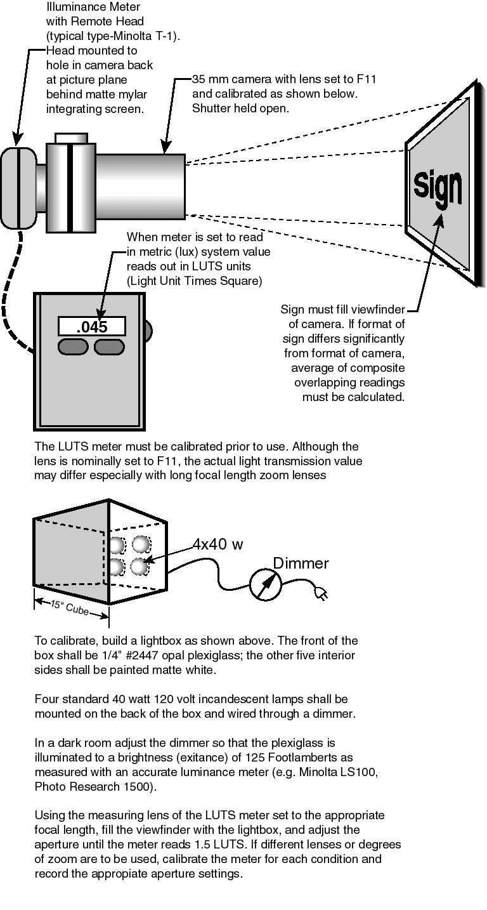
SIGN BRIGHTNESS MEASUREMENT SYSTEM
(LUTS Meter)
(81-732a3ii)
The LUTS Meter shall be calibrated against a reference standard (See illustrations of Sign Brightness Measurement System - LUTS Meter). Alternative measuring equipment may be employed provided such equipment provides identical measurement against the reference standard described herein.
In measuring the brightness of the whole of a sign under the provisions of paragraphs (a)(3)(iii) and (iv) of this Section, the illumination level of the sign shall be determined by pointing the LUTS Meter at the sign so that the entire sign completely fills the viewing frame of the meter. If, because of the shape of the sign, the entire sign cannot be viewed within the viewing frame, readings may be taken of discrete portions of the sign separately, provided, however, that no more of the sign than is absolutely necessary to measure the entire sign, may be included in more than one such reading. Readings of portions of a sign shall be averaged to obtain the average illumination level of the entire sign.
In measuring the brightness of a portion of a sign required to meet the incident illumination standards specified in paragraphs (a)(3)(iii) and (iv) of this Section, the illumination level of that portion of the sign shall be determined by pointing the LUTS Meter at that portion so that the entire portion completely fills the viewing frame of the meter. If, because of the shape or configuration of that portion of the sign, the entire portion cannot be viewed within the viewing frame, readings may be taken of discrete sections of that portion separately, provided, however, that no more of the portion than is absolutely necessary to measure the entire portion, may be included in more than one such reading. Readings of sections of that portion of the sign shall be averaged to obtain the average illumination level of the entire portion.
If the illumination of a required sign or portion thereof is measured prior to its installation on the building, all measurements shall be taken in an interior environment with an ambient air temperature of between 65 and 75 degrees Fahrenheit and no ambient light. For all readings, the LUTS meter shall be located so that its relationship to the sign or portion thereof is identical to that described below for taking measurements when the same sign or portion thereof is installed on the building.
If the illumination of a required sign or portion thereof is measured after its installation on the building, all measurements shall be taken at night when the ambient air temperature, at a height above street level equal to that of the center of the sign, is between 65 and 75 degrees Fahrenheit. To measure the illumination level of a sign or portion thereof, an imaginary line shall be established which is perpendicular in plan view to the surface of the sign or portion thereof and connects its center to a point from which the sign or portion thereof is actually visible and which is five feet above street level and 60 or more feet away from the sign. The LUTS meter shall be located along this line at the furthest distance from the sign or portion thereof at which a reading may be obtained by the method specified above.
The duration of one complete operating cycle of any sign required under this paragraph (a)(3) which is animated, in whole or in part, shall not exceed five minutes.
During any one complete operating cycle of any such sign, the aggregate time for which such sign is unlit shall not exceed 10 percent of the operating cycle and in no case shall exceed 15 seconds. In addition, no single continuous time period during which such a sign is unlit shall exceed three seconds. During any one complete operating cycle of any such sign, the brightness levels specified below in paragraphs (a)(3)(iii) and (iv) shall be attained for an aggregate time of not less than 20 percent of the operating cycle and in no case shall be less than l0 seconds. In addition, the surface area of any sign required to be continuously animated, either in whole or in part and either electrically or mechanically, shall exhibit visual changes clearly discernable by an observer at street level at intervals not exceeding 30 seconds.
(iii) A minimum of 25 percent of the required minimum aggregate surface area of signs required under this paragraph, (a)(3), shall comprise signs each of which shall attain for a minimum of 25 percent of its surface area at least 1.5 LUTS incident illumination measured as specified in this paragraph, (a)(c), by means of electric lamps, such as neon tubes, incandescent lamps or cathode ray tubes, which are exposed directly to view. All of the remainder of each such sign shall attain at least 0.2 LUTS incident illumination measured as specified by means of electric lamps exposed directly to view and/or luminous surfaces comprising translucent material lit from behind by electric lamps.
In addition, each of the signs required to meet the standards of this paragraph (a)(3)(iii) shall have either: a minimum of 20 percent of its surface area continuously electrically animated either by means of flashing borders, writing, pictorial representations, emblems or other figures of similar character or by means of flashing sign surface area serving as a field or background thereto; or, a minimum of 50 percent of its surface area continuously mechanically animated.
(iv) In addition, a minimum of 25 percent of the required minimum aggregate surface area of signs required under this paragraph (a)(3) shall comprise signs each of which shall attain for all of its surface area at least 0.4 LUTS incident illumination measured as specified by means of luminous surfaces comprising translucent material lit from behind by electric lamps. Alternatively, but also in addition to paragraph (a)(3)(iii) of this Section, a minimum of 25 percent of the required minimum aggregate surface area of signs required under this paragraph (a)(3) shall achieve the same incident illumination levels for the same amounts of surface area as specified in paragraph (a)(3)(iii).
In addition, each of the signs required to meet the standards of this paragraph (a)(3)(iv) shall have either: a minimum of 20 percent of its surface area continuously electrically animated either by means of flashing borders, writing, pictorial representations, emblems or other figures of similar character or by means of flashing sign surface area serving as a field or background thereto; or, a minimum of 50 percent of its surface area continuously mechanically animated.
(v) The provisions of paragraphs (a)(3)(iii) and (iv) of this Section may be modified or waived upon certification by the Chairperson of the City Planning Commission that the dynamic character and attractiveness of the sign or signs for which the modification or waiver is granted are assured by the proposed design and operation and that the signage on the zoning lot will produce an effect at least equal to that achieved through the application of paragraphs (a)(3)(iii) and (iv).
Except for an individual sign meeting the illumination requirements of paragraphs (a)(3)(iii) and (iv) for at least 50 percent of its surface area, for all of the signs required under this paragraph (a)(3), all surface area not complying with paragraphs (a)(3)(iii) and (iv) shall be lighted with an average level of illuminance across the entirety of that surface area of 75 foot candles and with an average to minimum illuminance ratio of not greater than 3.0 to 1.0.
(vi) For zoning lots that contain 15,000 square feet or more of lot area, the provisions of paragraphs (a)(2) and (a)(3)(ii) of this Section may be modified or waived, upon certification by the Chairperson that:
(a) the sign or signs for which the modification or waiver is granted are affixed to a building that contains a “listed theater” as designated in Section 81-742 (Listed theaters), and a portion of such theater is located within 100 feet of the street line of Seventh Avenue or Broadway; and
(b) such sign or signs provide visual interest that furthers the purposes of the illuminated sign requirements set forth in Section 81-73 (Special Sign and Frontage Regulations), inclusive, in a manner that is at least equal to that achieved through the application of paragraphs (a)(2) and (a)(3)(ii).
(4) One marquee illuminated sign and one additional projecting identification illuminated sign are required for each theater on a zoning lot. A group of motion picture theaters under single ownership and operation shall be treated as one theater for the purposes of this requirement.
Each required marquee shall have a minimum area in plan of 500 square feet and each projecting identification sign shall have a minimum surface area of 200 square feet. Marquees and identification signs may count towards meeting the minimum aggregate surface area requirements of paragraph (a)(2) or (a)(3) of this Section, provided that they comply with the locational requirements therein.
(5) Signs which do not meet the locational requirements of paragraph (a)(2) or (a)(3) are permitted, but shall not count towards meeting minimum aggregate surface area requirements.
(6) Required minimum aggregate surface areas of signs for zoning lots with street frontage on both Seventh Avenue and Broadway shall be calculated by including both those street frontages and any narrow street frontages up to the first 40 linear feet of street frontage from either Seventh Avenue or Broadway.
(7) All required illuminated signs shall at a minimum remain lit from dusk until 1:00 a.m. daily.
All of the surface area of signs required under paragraphs (a)(2) and (a)(3) shall be visible from a height of five feet above street level at any point 60 feet from the Seventh Avenue or Broadway street line of the zoning lot on which they are required to be provided.
At least 50 percent of the minimum aggregate surface area of signs required under paragraph (a)(3) shall comprise signs each of which shall be legible during daylight hours from a minimum distance of 60 feet when viewed from ground level at a point perpendicular in plan to the center of the sign.
(b) For enlargements which add floor area amounting to a floor area ratio of at least 1.0, the sign requirements of this Section shall apply as follows:
(1) If the enlargement involves an increase in floor area, minimum aggregate surface areas of required signs shall be determined in the same manner as for developments on the basis of the length of the zoning lot's frontage as set forth in paragraphs (a)(2), (a)(3) and (a)(6) of this Section.
(2) All other requirements for signs required for enlargements shall be as provided for developments in paragraphs (a)(1), (a)(2), (a)(3), (a)(4), (a)(5) and (a)(7) of this Section.
(3) The provisions of paragraphs (a)(1) or (a)(2) may be modified or waived upon certification by the Chairperson of the City Planning Commission that such modification or waiver results from compelling necessity.
(c) Zoning lots between 43rd and 50th Streets with street frontage on Seventh Avenue and/or Broadway comprising developments or enlargements and existing buildings to remain shall meet the requirements of paragraph (a) of this Section for developments or paragraph (b) for enlargements on the basis of the configuration and street frontages of the entire zoning lot.
There shall be no reduction in the aggregate surface area of signs on any existing buildings to remain. A non-conforming sign may be structurally altered, reconstructed or replaced in the same location and position, provided that such structural alteration, reconstruction or replacement does not result in the creation of a new non-conformity or an increase in the degree of non-conformity of such sign.
Official NYC Planning source
81-733 Special signage regulations for portions of the west side of Eighth Avenue
Last amended 2017-10-31
For a corner lot, or portions thereof, bounded by two wide streets on the west side of Eighth Avenue within the Eighth Avenue Corridor of the Theater Subdistrict, the sign provisions for C6-7 Districts pursuant to Section 32-60 (SIGN REGULATIONS) shall apply only to such corner lot portion, with the following modifications:
(a) no sign shall function with sound; and
(b) illuminated signs may face both wide streets, or be parallel to the street line of one wide street.
Official NYC Planning source
81-734 Special permit to modify sign and frontage regulations on small zoning lots
Last amended 2025-11-25
In the Theater Subdistrict, for zoning lots that contain 10,000 square feet or less of lot area, the City Planning Commission may allow, by special permit, modification to the sign provisions of this Chapter, inclusive, provided that the Commission finds that the modified sign is consistent with general goals for the Theater Subdistrict set forth in Sections 81-00 (General Purposes) and 81-71 (General Provisions).
The Commission may prescribe appropriate conditions and safeguards to minimize adverse effects of such sign on the character of the surrounding area.
Official NYC Planning source
81-741 General provisions
Last amended 2025-08-14
(a) Certifications
(1) The transfer of development rights from any “granting site” in accordance with the provisions of Section 81-744 (Transfer of development rights from listed theaters) shall be permitted upon certification by the City Planning Commission.
(2) In the Theater Subdistrict, modifications of the provisions of Article VII, Chapter 7 (Special Provisions for Zoning Lots Divided by District Boundaries), in accordance with the provisions of Section 81-746 (Additional provisions for zoning lots divided by district or subdistrict core boundaries), shall be permitted upon certification of the Chairperson of the Commission.
(b) Authorizations by the City Planning Commission
The transfer of development rights from any “granting site” in accordance with the provisions of paragraph (b) of Section 81-744 shall be permitted by authorization by the Commission.
(c) Special permit by the City Planning Commission
In the Theater Subdistrict, the Commission may allow, by special permit:
(1) demolition of a theater where permissible under the provisions of Section 81-742 (Listed theaters);
(2) a floor area bonus for rehabilitation of an existing theater in accordance with the provisions of Section 81-745 (Floor area bonus for rehabilitation of existing listed theaters); and
(3) transfer of development rights from a zoning lot occupied by a designated landmark in accordance with the provisions of Section 81-747 (Transfer of development rights from landmarks).
(d) Required assurances
All special permits, authorizations or certifications involving preservation of existing theaters shall be subject to the provisions of Section 81-743 (Required assurances for continuance of legitimate theater use).
(e) Limits on total additional floor area
Except as otherwise provided in Section 81-212 (Special provisions for transfer of development rights from landmark sites), the total additional floor area permitted on the zoning lot by such special permit, authorization or certification, together with all bonus floor area or floor area derived from transferred development rights under other provisions of this Chapter, shall in no event exceed the maximum amount permitted by certification, authorization or special permit as set forth in Section 81-211 (Maximum floor area ratio for non-residential or mixed buildings).
(f) Limitations on non-theater-related bonuses in C6-4 or C6-5 Districts
For zoning lots or portions thereof in C6-4 or C6-5 Districts, the total amount of floor area derived from non-theater-related bonuses or other special floor area allowances, pursuant to provisions of this Chapter other than those in Sections 81-744, 81-745, 81-746 or 81-747, shall not exceed a floor area ratio of 2.0.
(g) Theater-related bonus floor area for residences in C6-4 and C6-5 Districts
For zoning lots or portions thereof in C6-4 or C6-5 Districts, some or all of the bonus floor area or other special floor area allowances permitted pursuant to the provisions of Sections 81-744, 81-745, 81-746 or 81-747, relating to the preservation or rehabilitation of existing theaters, may be allocated to a residential building or the residential portion of a mixed building, provided that the total residential floor area ratio with such floor area allowances shall not exceed 12.0.
(h) Theater Subdistrict Fund
In furtherance of the purposes of this Section, the Theater Subdistrict Council shall establish a separate interest-bearing account (the "Theater Subdistrict Fund" or "Fund") for the deposit and administration of the revenues received by the Theater Subdistrict Council generated by the transfer of development rights pursuant to Section 81-744. Upon receipt of any revenue generated pursuant to such Section, the Theater Subdistrict Council shall notify the Comptroller, the Speaker and the Department of City Planning, and promptly deposit such revenues into the Theater Subdistrict Fund and shall expend such revenues and any interest accumulated thereon in the following manner:
(1) a portion of any such revenues shall be reserved, sufficient in the judgment of the Theater Subdistrict Council but in no event less than 20 percent of such revenues, to undertake the ongoing periodic inspection and maintenance report requirements pursuant to paragraph (c) of Section 81-743. The Theater Subdistrict Council may petition the City Planning Commission for a reduction in the percentage of such reserve and the Commission may grant such reduction if, in its judgement, a lesser percentage will be sufficient to carry out the purposes of this paragraph; and
(2) the remainder of such revenue shall be used for activities chosen by the Theater Subdistrict Council furthering the objectives and purposes of this Section, which activities may include judicial or administrative proceedings instituted by the Theater Subdistrict Council against any property owner or lessee to enforce the obligations of such owner or lessee pursuant to any restrictive declaration entered into in connection with a transfer of development rights pursuant to Section 81-744. Notwithstanding the foregoing, funds shall not be used for the physical repair and preservation of theaters.
The Theater Subdistrict Council shall provide an annual report to the Department of City Planning, the Comptroller, the Speaker and the City Planning Commission indicating the amounts and dates of any deposits to the Theater Subdistrict Fund in the immediately preceding calendar year, the balance of the Theater Subdistrict Fund at the close of the calendar year, the amounts expended on activities within the Theater Subdistrict and the nature of those activities. The Theater Subdistrict Council shall maintain complete, accurate and detailed records, with supporting documentation, in respect to all deposits to and withdrawals from the Theater Subdistrict Fund, and shall make such records available to the City of New York, the Department of City Planning, the Comptroller, the Speaker and the City Planning Commission upon reasonable notice and during business hours for inspection and copying.
Official NYC Planning source
81-742 Listed theaters
Last amended 2024-06-06
(a) Designation of listed theaters
“Listed theaters” are theaters to which special provisions of this and other Sections as set forth in 81-741 (General provisions) apply, and are predominantly free-standing theaters with full stage and wings. The theaters as identified on August 6, 1998, in the table in this Section, are designated as “listed theaters.”
LISTED THEATERS
|
Theater Name
|
Address
|
Block Number
|
Lot Number
|
|
Ambassador
|
215 West 49th St.
|
1021
|
15
|
|
Barrymore
|
243 West 47th St.
|
1019
|
12
|
|
Belasco
|
111 West 44th St.
|
997
|
23
|
|
Biltmore
|
261 West 47th St.
|
1019
|
5
|
|
Booth
|
222 West 45th St.
|
1016
|
15
|
|
Broadhurst
|
235 West 44th St.
|
1016
|
11
|
|
Broadway
|
1681 Broadway
|
1024
|
46
|
|
Brooks Atkinson
|
256 West 47th St.
|
1018
|
57
|
|
City Center
|
131 West 55th St.
|
1008
|
15
|
|
Cort
|
138 West 48th St.
|
1000
|
49
|
|
Ed Sullivan
|
1697 Broadway
|
1025
|
43
|
|
*Empire
|
236 West 42nd St.
|
1013
|
50
|
|
Eugene O'Neill
|
230 West 49th St.
|
1020
|
53
|
|
Forty-Sixth St.
|
226 West 46th St.
|
1017
|
48
|
|
Golden
|
252 West 45th St.
|
1016
|
58
|
|
*Harris
|
226 West 42nd St.
|
1013
|
45
|
|
Helen Hayes
|
240 West 44th St.
|
1015
|
51
|
|
Henry W. Miller
|
124 West 43rd St.
|
995
|
45
|
|
Hudson
|
139 West 44th St.
|
997
|
15
|
|
Imperial
|
249 West 45th St.
|
1017
|
10
|
|
*Liberty
|
234 West 42nd St.
|
1013
|
49
|
|
Longacre
|
220 West 48th St.
|
1019
|
50
|
|
Lunt-Fontanne
|
205 West 46th St.
|
1018
|
20
|
|
Lyceum
|
149 West 45th St.
|
998
|
8
|
|
*Lyric
|
213 West 42nd St.
|
1014
|
39
|
|
Majestic
|
245 West 44th St.
|
1016
|
5
|
|
Mark Hellinger
|
237 West 51st St.
|
1023
|
11
|
|
Martin Beck
|
302 West 45th St.
|
1035
|
37
|
|
Music Box
|
239 West 45th St.
|
1017
|
11
|
|
Nederlander
|
208 West 41st St.
|
1012
|
30
|
|
Neil Simon
|
250 West 52nd St.
|
1023
|
54
|
|
*New Amsterdam
|
214 West 42nd St.
|
1013
|
39
|
|
*New Amsterdam-Roof Garden
|
214 West 42nd St.
|
1013
|
39
|
|
*New Apollo
|
234 West 43rd St.
|
1014
|
20
|
|
Palace
|
1564 Broadway
|
999
|
63
|
|
Plymouth
|
236 West 45th St.
|
1016
|
51
|
|
Ritz
|
225 West 48th St.
|
1020
|
14
|
|
Royale
|
242 West 45th St.
|
1016
|
55
|
|
St. James
|
246 West 44th St.
|
1015
|
54
|
|
*Selwyn
|
229 West 42nd St.
|
1014
|
17
|
|
Shubert
|
225 West 44th St.
|
1016
|
15
|
|
Studio 54
|
254 West 54th St.
|
1025
|
58
|
|
*Times Square
|
219 West 42nd St.
|
1014
|
20
|
|
*Victory
|
209 West 42nd St.
|
1014
|
25
|
|
Virginia
|
245 West 52nd St.
|
1024
|
7
|
|
Winter Garden
|
1634 Broadway
|
1022
|
2
|
* Indicates theaters which do not qualify as a “granting site" pursuant to Section 81-744
In the case of an existing legitimate theater that received a floor area bonus pursuant to regulations in effect prior to May 13, 1982, no provisions of this amendment shall be construed as changing any previously existing responsibility of the owner or lessee of such theater for continuance of its use as a legitimate theater.
(b) Restrictions on demolition of listed theaters
No demolition permit shall be issued by the Department of Buildings for any theater listed in this Section as a “listed theater," unless:
(1) it is an unsafe building and demolition is required pursuant to the provisions of Title 28, Article 216 of the New York City Administrative Code;
(2) it has been designated a landmark by the Landmarks Preservation Commission and a notice to proceed has been issued to the owner pursuant to Section 25-309 of Title 25, Chapter 3, of the New York City Administrative Code permitting demolition that contemplates removal of the theater from theater use; or
(3) the City Planning Commission, by special permit, allows its demolition in accordance with the provisions of paragraph (c) of this Section.
(c) Special permit for demolition of listed theaters
The City Planning Commission may allow, by special permit, the demolition of a theater designated as a "listed theater" pursuant to this Section, provided the Commission finds that the demolition of the theater structure will not unduly diminish the character of the Theater Subdistrict as a cultural, entertainment and theatrical showcase. In making this determination, the Commission may consider any or all of the following:
(1) the current physical characteristics of the theater that affect its suitability as a legitimate theater, including but not limited to seating capacity, configuration and location;
(2) the history of the theater’s use as a legitimate theater, presenting legitimate attractions to the general public;
(3) the likelihood of its future use for legitimate theater production under reasonable terms and conditions prevailing in the theater industry; and/or
(4) that the applicant’s plans, if any, for replacement of the theater structure with a development or enlargement contain replacement uses supportive of the character of the Theater Subdistrict.
As a condition of the special permit, there shall exist a legal commitment binding upon all parties in interest of the zoning lot containing the theater that any development or enlargement on a zoning lot containing a portion or all of the former site of the “listed theater”, that floor space at least equivalent in amount to the total floor area of the theater shall be reserved or devoted exclusively to uses described in Section 81-723 (Entertainment-related uses) and meeting the requirements of paragraphs (b) and (c) of Section 81-722 (Requirements for entertainment-related uses) for the life of such development or enlargement. Notwithstanding the foregoing, if the area of the zoning lot containing the theater is less than 20,000 square feet and the Commission finds that the allocation of floor space at least equivalent in amount to the total floor area of the theater to uses described in Section 81-723 is impractical or unreasonable, the Commission may permit a reduction in the amount of area allocated to such uses.
Any development or enlargement on a zoning lot containing a portion or all of the former site of a “listed theater” must, however, meet the requirements of paragraphs (b) and (c) of Section 81-722 whether or not the zoning lot is located within the area described in that Section.
Official NYC Planning source
81-743 Required assurances for continuance of legitimate theater use
Last amended 2021-10-07
Prior to the issuance of any special permit under the provisions of Sections 81-745 (Floor area bonus for rehabilitation of existing listed theaters) or 81-747 (Transfer of development rights from landmarks), or the issuance of a certification, authorization or special permit under the provisions of Sections 66-51 (Additional Floor Area for Mass Transit Station Improvements), 81-744 (Transfer of development rights from listed theaters), or 81-746 (Additional provisions for zoning lots divided by district or subdistrict core boundaries) the following conditions shall exist:
(a) a signed lease from a prospective theater operator, or a written commitment from the owner of the theater if such owner is also the operator, for occupancy of the theater and its operation as a legitimate theater for a period of not less than five years;
(b) a licensed engineer’s and/or architect’s report certifying either that the theater is physically and operationally sound so as to permit its use as a legitimate theater or, if it is determined that the theater is not physically or operationally sound, a plan and program for the upgrade of the theater to put it in condition of physical and operational soundness. For the purposes of this Section, physical and operational soundness shall include the structural integrity of the exterior and interior elements of the building to the extent that they relate to the theater, compliance with applicable electrical and fire safety codes, and compliance with applicable building code standards.
In the event that the theater has been designated as a landmark or an interior landmark by the Landmarks Preservation Commission, physical and operational soundness shall include preserving the integrity of existing significant architectural features identified in the Landmarks Preservation Commission designation report. In such case, a licensed engineer and/or architect with knowledge of historic preservation and credentials acceptable to the Landmarks Preservation Commission shall prepare a report documenting the condition of such significant architectural features and, if determined to be necessary, a plan and program to preserve such significant features in a state of good physical repair and sound proper condition. Any certification report regarding a landmark or interior landmark theater shall be submitted concurrently to the Landmarks Preservation Commission and the Chairperson of the City Planning Commission;
(c) A plan and program shall be accompanied by written commitment from such owner of the financial resources available to ensure timely completion of the identified scope of work;
(d) a legal commitment providing for inspection and ongoing maintenance of the theater to ensure its continued availability for theater use. Such inspection shall be conducted every five years by a licensed engineer and/or architect or by the Theater Subdistrict Council, and a report issued to the Chairperson of the City Planning Commission and notice of such report shall be published in the City Record. Such report shall also be issued to the Theater Subdistrict Council unless the Theater Subdistrict Council has performed such inspection, and, in the event the theater has been designated a landmark or an interior landmark, such report shall also be issued to the Landmarks Preservation Commission and notice of such report shall be published in the City Record. Such reports shall describe the condition of the theater and identify any maintenance or repair work necessary to ensure the physical and operational soundness of the theater and to maintain the condition of any landmark architectural features and establish a plan and program for such work, including providing that adequate resources be made available to ensure timely completion of such maintenance or repair work; and
(e) a legal commitment for continuance of its use as a legitimate theater for the life of the related development or enlargement.
Such legal commitments shall be in the form of a declaration of restrictions, filed and duly recorded in the Borough Office of the Register of the City of New York, binding upon the owner, lessee of the theater and their successors and assigns, a certified copy of which shall be submitted to the City Planning Commission. The filing of such declaration and the posting of any bond or other security required by the declaration and receipt of such certified copy shall be preconditions to issuance of any building permit, including any foundation or alteration permit, for any development or enlargement on the receiving site.
Official NYC Planning source
81-744 Transfer of development rights from listed theaters
Last amended 2024-12-05
For the purposes of the Theater Subdistrict:
A “listed theater” shall mean a theater designated as listed pursuant to Section 81-742 (Listed theaters).
A “granting site” shall mean either a zoning lot or that portion of a zoning lot occupied by a “listed theater” and comprised of those block and lot numbers specified for such theater pursuant to the table in Section 81-742, as such block and lots existed on January 12, 1998. However, a “granting site” shall not include any zoning lot occupied by a “listed theater” located within the geographical area covered by the 42nd Street Development Land Use Improvement Project, adopted by the New York State Urban Development Project in 1984, as such Project has and may be subsequently amended.
A “receiving site” shall mean a zoning lot or the portion of a zoning lot located within the Theater Subdistrict to which development rights of the “granting site” are transferred. However, no portion of a “receiving site” shall be located within the 42nd Street Development Project Area. In addition, for zoning lots containing “listed theaters,” that portion of the zoning lot occupied by the “listed theater” and comprised of the block and lot numbers specified for such theater, pursuant to the table in Section 81-742, shall not be included in the “receiving site.”
Any “receiving site” divided by a district boundary or Theater Subdistrict Core boundary may locate bulk in accordance with the provisions of Section 81-746 (Additional provisions for zoning lots divided by district or subdistrict core boundaries).
(a) Transfer of development rights by certification
The City Planning Commission shall allow, by certification, a transfer of development rights from a “granting site” to a “receiving site,” except that any “granting site,” or portion thereof, located outside the Theater Subdistrict, may not transfer development rights to any portion of a “receiving site” within the Special Clinton District, provided that:
(1) the maximum amount of floor area transferred from a “granting site” is the basic maximum floor area ratio established pursuant to Sections 81-211 (Maximum floor area ratio for non-residential or mixed buildings) or 81-214 (Special provisions for transfer of development rights from listed theaters within the Special Clinton District), as applicable, for such “granting site” as if it were undeveloped, less the total floor area of all existing buildings or portions of buildings on the “granting site” and floor area attributed to the “granting site” that has been previously used or transferred;
(2) each transfer, once completed, irrevocably reduces the amount of floor area that may be developed or enlarged on the zoning lot containing the “granting site” by the amount of floor area transferred;
(3) the maximum amount of floor area transferred to a “receiving site” shall not exceed the basic maximum floor area ratio established pursuant to Section 81-211 for such “receiving site” by more than 20 percent;
(4) the provisions of Section 81-743 (Required assurances for continuance of legitimate theater use) are met; and
(5) appropriate legal documents are executed ensuring that a contribution in an amount equal to 10 dollars* per square foot of transferred floor area be deposited in the Theater Subdistrict Fund established pursuant to paragraph (h) of Section 81-741 (General provisions) at the earlier of either the time of closing on the transfer of development rights pursuant to this Section or the filing for any building permit for any development or enlargement that anticipates using such development rights.
The Commission shall review such amount no more than once every three years and no less than once every five years and shall adjust the amount to reflect any change in assessed value of all properties on zoning lots wholly within the Theater Subdistrict.
(b) Transfer of development rights by authorization
The City Planning Commission shall allow, by authorization, an additional transfer of development rights beyond the amount of floor area transfer permitted by certification in paragraph (a) of this Section from a "granting site" to any portion of a “receiving site” located within the Eighth Avenue Corridor, except that any “granting site,” or portion thereof, located outside the Theater Subdistrict may not transfer development rights to any portion of a “receiving site” within the Special Clinton District, subject to the following conditions:
(1) the maximum amount of such additional floor area transfer to that portion of a "receiving site" located within such Corridor shall not exceed the maximum total floor area ratio with as-of-right floor area allowances in the Theater Subdistrict set forth in Section 81-211 by more than 20 percent; and
(2) such transfer complies with the conditions and limitations set forth for the transfer of development rights in paragraph (a) of this Section.
In order to grant such authorization, the Commission shall find that such development or enlargement:
(i) relates harmoniously to all structures and open space in its vicinity in terms of scale, location and access to light and air in the area; and
(ii) serves to enhance or reinforce the general purposes of the Theater Subdistrict.
Any application pursuant to paragraphs (a) and/or (b) of this Section shall be referred to the affected Community Board, the local Council Member and the Borough President of Manhattan. The Commission shall not grant any such certification or authorization prior to sixty days after such referral and sixty days after the date any reports required to be submitted to the Landmarks Preservation Commission pursuant to Section 81-743, paragraph (b), or the Theater Subdistrict Council pursuant to Section 81-71 (General Provisions) have been so submitted.
(c) Requirements for Application
An application filed with the Chairperson of the City Planning Commission for the transfer of development rights by certification pursuant to paragraph (a) of this Section, or with the City Planning Commission for the transfer of development rights by authorization pursuant to paragraph (b) of this Section, shall be made jointly by the owners of the "granting site" and the “receiving site” and shall include:
(1) a site plan and floor area zoning calculations for the “granting site” and the “receiving site” and, for authorizations and/or special permit applications, any such other information as may be required by the Commission;
(2) a copy of the transfer instrument legally sufficient in both form and content to effect such a transfer, together with a notice of the restrictions limiting further development or enlargement of the “granting site” and the “receiving site.” The notice of restrictions shall be filed by the owners of the respective lots in the Borough Office of the Register of the City of New York, indexed against the “granting site” and the "receiving site," a certified copy of which shall be submitted to the Chairperson. Receipt of the certified copy shall be a pre-condition to issuance of any building permit, including any foundation or alteration permit, for any development or enlargement on the “receiving site.”
Both the instrument of transfer and the notice of restrictions shall specify the total amount of floor area transferred and shall specify, by lot and block numbers, the lots from which and the lots to which such transfer is made.
(3) demonstrations of compliance with the requirements of Section 81-743 and paragraph (a)(5) of this Section, including all necessary legal documents. Issuance of any building permit, including any foundation or alteration permit, shall be conditioned upon the filing of such legal documents in the Borough Office of the Register of the City of New York and receipt by the Commission of certified copies of same as required pursuant to Section 81-743.
A separate application shall be filed for each transfer of development rights to an independent “receiving site.”
* The contribution of 10 dollars per square foot of transferred floor area was adjusted by rule on November 15, 2006, to $14.91 per square foot; on December 10, 2011, to $17.60 per square foot; and on July 15, 2022, to $24.65 per square foot
Official NYC Planning source
81-745 Floor area bonus for rehabilitation of existing listed theaters
Last amended 2025-08-14
The City Planning Commission by special permit may authorize bonus floor area for substantial rehabilitation or restoration of any theater listed as a “listed theater” in Section 81-742 (Listed theaters), in accordance with the provisions of this Section.
(a) Conditions for rehabilitation bonus
As a condition for the issuance of a special permit under the provisions of this Section, the following requirements shall be satisfied:
(1) Location of development
The development or enlargement for which a theater rehabilitation bonus is granted is located on the same zoning lot as the “listed theater.”
(2) Qualification of substantial rehabilitation
Substantial rehabilitation work qualifying for a floor area bonus shall consist of major structural changes for the purpose of improving a theater’s design and its commercial viability for legitimate theater use, or historic restoration of the interior of a theater designated as an interior landmark.
Substantial rehabilitation may include, without limitations, such work as expanding stage wings, re-raking the orchestra, increasing rehearsal, dressing room or lobby and ancillary spaces, improving accessibility beyond applicable legal requirements, or historic restoration. It may also include reconversion to legitimate theater use of an original legitimate theater currently in other use. Substantial rehabilitation does not mean normal theater maintenance, painting or improvements to mechanical systems alone.
(3) Timing and commitment
(i) there shall be a contractual commitment or commitments for the construction work involved in the substantial rehabilitation;
(ii) the requirements of Section 81-743 (Required assurances for continuance of legitimate theater use) shall be satisfied; and
(iii) a rehabilitation bonus shall not be granted for a substantial rehabilitation completed before May 13, 1982.
(b) Amount of rehabilitation bonus
The amount of bonus floor area granted for a qualifying theater rehabilitation shall be at the discretion of the Commission after consideration of the following findings:
(1) how and to what extent the proposed rehabilitation will improve the theater's suitability for use as a legitimate theater;
(2) how the proposed rehabilitation will contribute toward satisfying the needs of the Theater Subdistrict;
(3) whether the bonus floor area will unduly increase the bulk of any development or enlargement, density of population or intensity of use on any block to the detriment of occupants of buildings on the block or the surrounding area; and
(4) whether the distribution and location of such floor area bonus will adversely affect the surrounding area by restricting light and air or otherwise impair the essential character or future development of the surrounding area.
Such bonus floor area shall not exceed 20 percent of the basic maximum floor area permitted on the zoning lot containing the development or enlargement by the regulations of the underlying district, except that in the case of an underlying C6-4 or C6-5 District, the bonus floor area shall not exceed 44 percent of the basic maximum floor area permitted in such underlying district, and except that in the case of a zoning lot located partially in a C6-5.5 District and partially in a C6-7T District, the Commission may allow bonus floor area to be utilized anywhere on the zoning lot.
For purposes of applying the provisions of Section 11-42 (Lapse of Authorization or Special Permit by the City Planning Commission Pursuant to the 1961 Zoning Resolution) to a special permit granted pursuant to this Section, “substantial construction” shall mean substantial rehabilitation, as described in paragraph (b) of this Section, of the subject theater for which a floor area bonus has been granted to a related development or enlargement.
The Commission may prescribe appropriate conditions and safeguards to minimize adverse effects on the character of the surrounding areas.
Official NYC Planning source
81-746 Additional provisions for zoning lots divided by district or subdistrict core boundaries
Last amended 2011-02-02
(a) For any zoning lot which includes a “listed theater” as set forth in Section 81-742 (Listed theaters) or is, or contains, a “receiving site” pursuant to Section 81-744 (Transfer of development rights from listed theaters), and which is divided by a boundary between districts with different basic maximum floor area ratios as set forth in Section 81-211 (Maximum floor area ratio for non-residential or mixed buildings), the Chairperson of the City Planning Commission, by certification, shall allow modifications of the provisions of Sections 77-02 (Zoning Lots Not Existing Prior to Effective Date or Amendment of Resolution), 77-21 (General Provisions), 77-22 (Floor Area Ratio) and 77-25 (Density Requirements), as follows.
For any zoning lot, floor area, dwelling units or rooming units permitted by the applicable district regulations on either side of the district boundary may be located on the other side of the district boundary, provided:
(1) the amount of such floor area to be located on either side of the district boundary shall not exceed 20 percent of the basic maximum floor area ratio of the district in which it is to be located;
(2) the number of such dwelling units or rooming units, if any, to be located on either side of the district boundary shall not exceed the number permitted by the applicable district regulations; and
(3) the provisions of Section 81-743 (Required assurances for continuance of legitimate theater use) are met for any “listed theater” on such zoning lot.
The Chairperson's certification approving modification of the provisions for such zoning lots divided by district boundaries shall state the total amount of floor area, including floor area of any existing theater, to be provided on the zoning lot as a whole and the portion thereof to be located in each district, and the amount authorized herein to be located across the district boundary from the district in which the theater is located.
Notice of the restrictions upon further development of each portion of the zoning lot shall be recorded by the owner against the zoning lot in the Office of the Register of the City of New York (County of New York) and a certified copy shall be submitted to the Commission.
(b) Notwithstanding any other provisions of this Resolution, for any zoning lot which is divided by a boundary of the Theater Subdistrict Core as defined in Section 81-71 (General Provisions) and for which the basic maximum floor area ratio as set forth in Section 81-211 is the same for both the portion within and the portion outside of the Theater Subdistrict Core, the applicable underlying bulk regulations shall be modified, as follows:
(1) floor area, including bonus floor area, or dwelling units permitted by the applicable district regulations on that portion of the zoning lot within the Theater Subdistrict Core may be located on the portion of the zoning lot outside the Core, provided that the number of such rooms, if any, to be located outside of the Core shall not exceed the number permitted by the applicable district regulations; and
(2) floor area, including bonus floor area, or dwelling units permitted by the applicable district regulations on that portion of the zoning lot outside of the Theater Subdistrict Core shall not be located on the portion of the zoning lot within the Core.
(c) Notwithstanding any other provisions of this Resolution, for any zoning lot located wholly within the Theater Subdistrict and outside of the Theater Subdistrict Core that is divided by a boundary of the Eighth Avenue Corridor as defined in Section 81-71 and for which the basic maximum floor area ratio as set forth in Section 81-211 is the same for both the portion within and the portion outside of the Eighth Avenue Corridor, floor area, including bonus floor area, or dwelling units permitted by the applicable district regulations may be located on either side of the Eighth Avenue Corridor boundary.
Official NYC Planning source
81-747 Transfer of development rights from landmarks
Last amended 2024-12-05
The City Planning Commission by special permit may authorize development rights to be transferred from a granting lot to a receiving lot proposed for developments or enlargements within the surrounding area in accordance with the provisions of Section 81-213 (Special provisions for transfer of development rights from landmark sites in certain areas).
The limitations on development rights transferred to receiving lots from granting lots, including sites of landmark theaters, are set forth in Section 81-213.
Where development rights are proposed to be transferred and exercised in accordance with the provisions of Section 81-213, as modified by this Section, the Commission shall find that:
(a) within the surrounding area, the series of intervening lots in common ownership leading to the receiving lot includes lots, identified by the Commission, which are occupied by “listed theaters” or by uses which directly support neighborhood theater business, such as, but not limited to, rehearsal space, recording facilities or theater costume rental facilities and that such uses will be continued or replaced by other legitimate theaters or theater supportive uses as evidenced by covenants binding the owners of such lots, their successors and assigns to provide for such continuation or replacement; or
(b) useful circulation improvements or other public facilities will be provided and maintained on one or more of the lots comprising the series of intervening lots to accommodate pedestrian or vehicular traffic generated by legitimate theaters.
The Commission shall require the owner of any intervening lot on which special use restrictions are applicable or on which circulation improvements or other public facilities are to be provided and maintained to sign a written declaration of restrictions setting forth the obligations of the owner, his successors and assigns and providing a performance bond for the completion of any required improvements. The declaration of restrictions shall be recorded in the Office of the Register of the City of New York (County of New York) and the Commission shall be provided with a certified copy.
The provision of Section 81-213 empowering the Commission to grant variations in the front height and setback regulations is modified by the provisions of Sections 81-266 or 81-277 (Special permit for height and setback modifications).
Compliance with the provisions of Section 81-743 (Required assurances for continuance of legitimate theater use) shall be a condition for issuance of a special permit under the provisions of this Section.
Official NYC Planning source
81-751 Special street wall and setback regulations within the Theater Subdistrict Core
Last amended 2024-06-06
Buildings located on zoning lots between 43rd and 50th Streets with street frontage on Seventh Avenue and/or Broadway, or located partially within the Theater Subdistrict Core and partially within the Eighth Avenue Corridor shall comply with the requirements of this Section and, in all other respects related to height and setback, with the provisions of Sections 81-25 (General Provisions Relating to Height and Setback of Buildings), and either Section 81-26 (Height and Setback Regulations - Daylight Compensation) or 81-27 (Alternate Height and Setback Regulations - Daylight Evaluation). The street wall location rules of Section 81-43 shall also apply, except as modified in this Section.
With the exception of signs and parapets not exceeding four feet in height, no obstructions are permitted to penetrate the mandatory street wall height limits or setback requirements for zoning lots between 43rd and 50th Streets with street frontage on Seventh Avenue and/or Broadway set forth in this Section.
For the purposes of this Section, signs are permitted as exceptions to the special street wall and setback requirements contained herein, except that above the top of a street wall before setback required under this Section, no sign may be located closer than six feet to the Seventh Avenue or Broadway street wall before setback. Signs located below the top of a required street wall before setback, as defined in this Section, may project across a street line up to 10 feet. Marquees are not subject to the requirements of this Section.
(a) With the exception of buildings located on zoning lots between Seventh Avenue and Broadway, buildings located on zoning lots between 43rd and 50th Streets with street frontage on Seventh Avenue or Broadway shall meet the following requirements:
(1) The street walls of any building shall have a minimum street wall height before setback of 50 feet above curb level and a maximum street wall height before setback of 60 feet above curb level on all street frontages, except that:
(i) if the zoning lot contains a complete wide street block frontage, wide street street walls within 25 feet of the street line of a narrow street and narrow street street walls shall have a minimum street wall height before setback of 30 feet above curb level; and/or
(ii) if the zoning lot contains a theater listed in the table in Section 81-742 (Listed theaters) and the theater is retained as part of a development or enlargement, the maximum street wall height above curb level before setback of a narrow street street wall which is a reconstruction or replacement of an existing narrow street street wall of the theater shall be equal to the height above curb level of that existing theater street wall and the same maximum street wall height above curb level shall apply only for the width of that existing theater street wall.
(2) Above the required street wall height before setback, the street wall of any building shall be set back at least 15 feet along all narrow street frontages of the zoning lot.
(3) For zoning lots greater than 15,000 square feet in area:
(i) Above the required street wall height before setback, the street wall of any building shall be set back at least 50 feet along the Seventh Avenue or Broadway street frontage of the zoning lot.
(ii) Alternatively, above the required street wall height before setback, the street wall shall be set back at least 60 feet along the Seventh Avenue or Broadway street frontage of the zoning lot, except that a portion of the building at least 50 feet from the street line of any narrow street and with aggregate area per floor not exceeding 10 square feet for each linear foot of zoning lot street frontage on Seventh Avenue or Broadway may extend forward of the 60 foot setback line, provided that no portion is closer than 35 feet to the Seventh Avenue or Broadway street line.
(iii) Alternatively, if the building contains a “listed theater” designated pursuant to Section 81-742 and if any portion of the theater is within 100 feet of the street line of Seventh Avenue or Broadway, above the required street wall height before setback the street wall shall be set back at least 60 feet along the Seventh Avenue or Broadway street frontage of the zoning lot, except that a portion of the building with aggregate area per floor not exceeding the lesser of 4,500 square feet or 30 square feet for each linear foot of zoning lot street frontage on Seventh Avenue or Broadway, may extend forward of the 60 foot setback line, provided that no portion is closer than 20 feet to the Seventh Avenue or Broadway street line, 15 feet to the street line of the narrow street on which the theater has frontage and 50 feet to any other narrow street street line.
In addition, one or more signs affixed to any such building may project up to 10 feet across the street line and rise to a height of 120 feet above curb level. Balconies and terraces, including railings or parapets, may be located within the required setback area behind such signs. For the purposes of applying the definition of floor area in Section 12-10, signs projecting across the street line shall not constitute an enclosure, and the requirements of Section 32-41 (Enclosure Within Buildings) shall not apply to such balconies or terraces, provided that a portion of any such balcony or terrace is used for an entertainment-related use listed in Section 81-723 (Entertainment-related uses) or an accessory use.
(4) For zoning lots 15,000 square feet in area or less, above the required street wall height before setback, the street wall of any building shall be set back at least 35 feet along the Seventh Avenue or Broadway street frontage of the zoning lot.
(5) Above the required street wall height before setback, a portion of any such building up to a height of 120 feet above curb level may occupy area forward of the setbacks required in paragraphs (a)(3) or (a)(4) of this Section but not closer than 20 feet to the Seventh Avenue or Broadway street line, provided that:
(i) 90 percent of any narrow street street wall, higher than 60 feet above curb level and forward of the setbacks required in paragraphs (a)(3) or (a)(4) of this Section is covered with illuminated signs.
(ii) In addition, 90 percent or 6,000 square feet, whichever is less, of any Seventh Avenue or Broadway street wall higher than 60 feet above curb level and forward of the setbacks required in paragraphs (a)(3) or (a)(4) of this Section is covered with illuminated signs.
For the purposes of this Section, a portion of a street wall shall be deemed to be covered with an illuminated sign if such sign obscures that portion of the street wall from view at street level at a point perpendicular in plan to the sign and 60 feet from the street line of the narrow street for paragraph (a)(5)(i) of this Section, and of Seventh Avenue or Broadway for paragraph (a)(5)(ii)
Neither temporary certificates of occupancy for floor area of the development or enlargement comprising, in aggregate, more than 50 percent of the total floor area of the development or enlargement, nor a first permanent certificate of occupancy for the development or enlargement, shall be issued by the Department of Buildings until all of the requirements as set forth in this Section at the time of issuance of such certificates of occupancy have been met and all illuminated signs required under this Section have been installed and put in operation.
(b) The street wall of any building on a zoning lot between 43rd and 50th Streets and between Seventh Avenue and Broadway shall have a minimum street wall height of 50 feet on all street frontages.
(c) For zoning lots located partially within the Theater Subdistrict Core and partially within the Eighth Avenue Corridor, the street wall of any building or portion of a building within the Theater Subdistrict Core shall have a minimum street wall height of 50 feet or the height of the building, whichever is less, and a maximum street wall height of 60 feet within 15 feet of the narrow street street line.
Official NYC Planning source
81-752 Special street wall and setback regulations within the Eighth Avenue Corridor
Last amended 2024-12-05
Buildings on zoning lots located in whole or in part within the Eighth Avenue Corridor, as defined in Section 81-71, and east of Eighth Avenue, shall comply with the requirements of this Section, and except as superseded by this Section, with the provisions of Section 81-25 (General Provisions Relating to Height and Setback of Buildings), and either Section 81-26 (Height and Setback Regulations - Daylight Compensation) or 81-27 (Alternate Height and Setback Regulations - Daylight Evaluation).
Buildings on zoning lots located in whole or in part within the Eighth Avenue Corridor, as defined in Section 81-71, and west of Eighth Avenue shall comply with the requirements of this Section. The provisions of Sections 81-25, 81-26 and 81-27 shall not apply.
The provisions of paragraphs (a) and (b) of this Section shall apply to developments, enlargements and alterations, where such alterations change the height, width or location of a street wall. For purposes of applying street wall location provisions, all streets shall be considered as wide streets.
(a) Street wall location and minimum and maximum heights before setbacks
(1) On Eighth Avenue and 42nd Street, the street wall location provisions of paragraph (a) of Section 35-631 shall apply, except that recesses shall be permitted below a height of 15 feet. The street walls shall extend up to a minimum base height of 50 feet or the height of the building, whichever is less. The maximum height of street walls within 10 feet of the wide street street line shall be 150 feet beyond 15 feet of a narrow street street line and 85 feet within 15 feet of a narrow street street line.
(2) On a narrow street east of Eighth Avenue, and on a narrow street west of and within 100 feet of Eighth Avenue, the street wall location provisions of paragraph (a)(1) of this Section shall apply and maximum height of street walls within 15 feet of the narrow street street line shall be 85 feet.
On a narrow street west of and beyond 100 feet of Eighth Avenue, the maximum height of street walls within 15 feet of the narrow street street line shall be 66 feet. However, no street wall need be provided where at least 70 percent of the entire frontage of the zoning lot along such narrow street is occupied by street walls located on the street line.
(3) Where a continuous sidewalk widening is provided along the entire block frontage of a wide street, the boundary of the sidewalk widening shall be considered to be the street line for the purposes of this Section.
(b) Special street wall regulations for buildings adjacent to listed theaters
For buildings that are adjacent to a theater listed pursuant to Section 81-742 (Listed theaters), the maximum height of the street wall of the building facing the same street as the “listed theater” shall be 60 feet within 15 feet of the street line.
(c) Additional regulations applying west of Eighth Avenue
West of Eighth Avenue, at any level above a height of 85 feet, any building or buildings or portions thereof shall be subject to the provisions of Sections 23-435 (Tower regulations) and 23-442 (Special provisions for certain community districts) applicable to an R10X District.
Official NYC Planning source